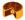

|
| We are proud of what we have been able to create, and looking back at all the words makes us proud to be Canadian! We hope you've enjoyed playing this game as much as we've had creating it. You can support Canada's daily word game by buying the Canuckle creators a coffee! ☕️🍁👍 Here's a recap of all the Canuckle words all the way back puzzle #1: (Click on column headers to toggle the sort, or view just the words) |
| # | DATE | WORD | AVG | FUN FACT | LINK |
|---|---|---|---|---|---|
| 1 | Feb 10, 2022 | CANOE 🛶 |
- | In Canada, the canoe has long been associated with the fur trade and the romantic figure of the voyageur. | |
| 2 | Feb 11, 2022 | MAPLE 🍁 |
- | The maple leaf is one of the most recognizable symbols of Canada and is featured on the national flag. | |
| 3 | Feb 12, 2022 | INUIT 😊 |
- | Inuit live throughout most of Northern Canada in the territory of Nunavut. | |
| 4 | Feb 13, 2022 | PLAID 🟥⬛️ |
- | The official tartan for Canada as a whole is known as the Maple leaf tartan. | |
| 5 | Feb 14, 2022 | IGLOO ❄️ |
- | Igloo comes from the Inkuktitut word “iglu” meaning house. | |
| 6 | Feb 15, 2022 | HOSER 😆 |
- | Hoser is a slang word for a Canadian of limited intelligence. | |
| 7 | Feb 16, 2022 | SYRUP 🥞 |
- | Canada produces 71% of the world's maple syrup, 91% of it coming from Quebec. | |
| 8 | Feb 17, 2022 | BACON 🥓 |
- | Canadian bacon comes from the loin of the pig instead of the side or belly. | |
| 9 | Feb 18, 2022 | SORRY 🙇 |
- | Canadians apologize so much, Canada passed the Apology Act in 2009. | |
| 10 | Feb 19, 2022 | WHALE 🐳 |
- | There are more than 33 species of whale that live in Canada's oceans. | |
| 11 | Feb 20, 2022 | NORTH 🧭 |
- | One of Canada's most famous nicknames is the Great White North. | |
| 12 | Feb 21, 2022 | ABOOT 🥾 |
- | This word is a humorous (though incorrect) take on the Canadian accent saying the word “about”. | |
| 13 | Feb 22, 2022 | BANFF 🏞️ |
- | Banff was declared a UNESCO World Heritage Site in 1984. | |
| 14 | Feb 23, 2022 | FALLS 💦 |
- | About 28 million litres of water travel down Niagara Falls every second. | |
| 15 | Feb 24, 2022 | TOTEM 🗿 |
- | The word totem comes from the Algonquian word “odoodem“ meaning “his kinship group“. | |
| 16 | Feb 25, 2022 | QUEEN 👸 |
- | Queen Elizabeth II has been Canada's monarch for over 70 years. | |
| 17 | Feb 26, 2022 | LOONS 🦆 |
- | Loons have beautiful, crimson red eyes, but this is only during mating season. | |
| 18 | Feb 27, 2022 | METIS |
- | The Métis invented the york boat, used by the Hudson's Bay Company to carry furs and trade goods along waterways. | |
| 19 | Feb 28, 2022 | TOQUE 🧶🧢 |
- | Toque (or tuque) is the official name for a winter hat in Canada! | |
| 20 | Mar 1, 2022 | CANAL 🚤⛸️ |
- | The 202 km of Rideau Canal with 47 locks is the oldest, continuously operated canal system in North America. | |
| 21 | Mar 2, 2022 | CRUDE 🛢️ |
- | Canada has the 3rd largest oil reserves in the world and is the 4th largest oil producer and exporter. | |
| 22 | Mar 3, 2022 | GOOSE 🦢 |
- | A subspecies known as “giant” Canada geese are the largest geese in the world. | |
| 23 | Mar 4, 2022 | LAKES 🌅 |
- | Canada has more lakes than the rest of the world combined! Almost 9% of Canada's total surface area is covered by freshwater. | |
| 24 | Mar 5, 2022 | CROWN 👑 |
- | As of 2019, there were 47 Crown corporations in Canada, including CBC, Canada Post, VIA Rail, the Royal Canadian Mint, and the Bank of Canada. | |
| 25 | Mar 6, 2022 | SPUDS 🥔 |
- | PEI produces more potatoes for Canada than any other province and produces 2.5 billion lbs per year! | |
| 26 | Mar 7, 2022 | ROOTS |
- | Roots Canada opened its first store in 1973 selling footwear, and started using the beaver logo in 1985 with the launch of their athletic brand. | |
| 27 | Mar 8, 2022 | SNOWY 🌨️ |
- | On February 10, 1999, Tahtsa Lake, British Columbia got hit with 145 cm (4'9") of snow in ONE day! | |
| 28 | Mar 9, 2022 | YUKON 🏔️ |
- | Yukon is home to Mount Logan, Canada's tallest mountain (5959 m) and the 2nd highest peak in North America. | |
| 29 | Mar 10, 2022 | POLAR |
- | Canada is home to about 16,000 polar bears, which is approximately two-thirds of the world's total estimated population. | |
| 30 | Mar 11, 2022 | BISON |
- | Bison are North America's largest land animal, with bulls weighing up to 2000 lbs and cows up to 1000 lbs. | |
| 31 | Mar 12, 2022 | TOWER 🗼 |
- | Toronto's CN Tower held the record for the world's tallest free-standing structure for 32 years, from 1975 until 2007. | |
| 32 | Mar 13, 2022 | BEARS 🐻 |
- | Roughly half of the world's Grizzly Bears (a Brown Bear subspecies) live in Canada, mostly in BC. | |
| 33 | Mar 14, 2022 | LEAFS 🏒🍁 |
- | One of the NHL's founding teams, the Toronto Maple Leafs have won 13 Stanley Cups, the most recent being in 1967. | |
| 34 | Mar 15, 2022 | WHEAT 🌾 |
- | Close to half of all Canadian wheat is grown in Saskatchewan, followed by Alberta and Manitoba. | |
| 35 | Mar 16, 2022 | PARKS 🏞️🏕️ |
- | There’s a whopping 48 National Parks and over one thousand Provincial and Territorial parks in the Great White North! | |
| 36 | Mar 17, 2022 | KAYAK 🚣 |
- | Kayaks were originally designed for hunting and fishing. In fact, the word kayak means “hunter's boat”, and came from “qajaq” or “qayarq”, a Greenlandic Inuit word. | |
| 37 | Mar 18, 2022 | MOOSE 🦌 |
- | The moose is the largest species of deer in the world. The average weight of a fully grown male moose (a bull) is 1500 lbs! | |
| 38 | Mar 19, 2022 | PRIDE 🏳️🌈 |
- | Since 2016, the month of June has been declared Pride Month in Canada to celebrate the LGBTQ2+ community. | |
| 39 | Mar 20, 2022 | ROCKY ⛰️ |
- | The Rocky Mountains, also known as the Rockies, are the largest mountain system in North America! | |
| 40 | Mar 21, 2022 | SCOFF 🥘 |
- | Scoff is Newfoundland slang for a big feed, typically Jiggs dinner but could be any large, satisfying meal. | |
| 41 | Mar 22, 2022 | CABIN |
- | Cabin is another name for a cottage, and Canada has no shortage of weekend getaway spots! | |
| 42 | Mar 23, 2022 | BEERS 🍻 |
- | Canadians spent $9.2 billion on beer in 2020 ($325 per adult), which equates to 2.3 billion litres of beer. | |
| 43 | Mar 24, 2022 | PARKA |
- | Originally created by the Inuit to keep warm in the Canadian Arctic, the first parkas were made from whale, seal or caribou skin and often coated with fish oil for waterproofing. | |
| 44 | Mar 25, 2022 | RINKS 🏒⛸️🥌 |
- | In the 2020/21 season, there were 2,860 indoor and 5,000 outdoor ice hockey rinks located in Canada according to the International Ice Hockey Federation. | |
| 45 | Mar 26, 2022 | FRIES 🍟 |
- | Canadians consumed over 240,000 metric tonnes of frozen fries in 2019. | |
| 46 | Mar 27, 2022 | COAST 🌊 |
- | Canada has the longest coastline in the world, measuring 243,042 km! | |
| 47 | Mar 28, 2022 | ORDER 🎖️ |
- | The Order of Canada is how our country honours people who make extraordinary contributions to the nation. | |
| 48 | Mar 29, 2022 | PHONE 📞 |
- | In 1876, Scottish-born inventor Alexander Graham Bell patented the first practical telephone, a concept that he conceived in Brantford, Ontario. | |
| 49 | Mar 30, 2022 | BIRCH 🌳 |
- | The white birch is the most widely distributed of native birch trees, and grows in every region of Canada. The bark has long been used for making canoes and ornaments. | |
| 50 | Mar 31, 2022 | PORTS ⚓️ |
- | Canada is home to numerous ports, but the Port of Vancouver is Canada's largest port, and is the most diversified port in North America. | |
| 51 | Apr 1, 2022 | DAIRY 🥛🐄🧀 |
4.09 | The Dairy Farmers of Canada logo guarantees a product is made with 100% Canadian milk and milk ingredients, and is free of antibiotics. | |
| 52 | Apr 2, 2022 | SKATE ⛸️ |
3.93 | Skate Canada is the oldest and largest figure skating organization in the world. | |
| 53 | Apr 3, 2022 | FARMS |
4.52 | In 2020, roughly 1 out of every 9 Canadian jobs was in the agriculture and agri-food sector. | |
| 54 | Apr 4, 2022 | RIVER 🏞️💦 |
5.08 | Annually, Canada’s Rivers discharge 7% of the world’s renewable water supply at a flow rate per second more than four times that of Niagara Falls. | |
| 55 | Apr 5, 2022 | SPORT 🏒🥍 |
3.74 | Canada's official national sports are ice hockey (winter) and lacrosse (summer). | |
| 56 | Apr 6, 2022 | GLOBE 🌐📰 |
4.34 | The Globe and Mail newspaper originated from two competing newspapers, “The Globe” and “The Mail and Empire”. | |
| 57 | Apr 7, 2022 | CURDS 🧀 |
4.52 | Poutine (fries topped with cheese curds and gravy) is popular all over Canada and as such it is considered the country's national dish. | |
| 58 | Apr 8, 2022 | FOXES 🦊 |
5.80 | Four species of foxes live in Canada: arctic, swift, grey, and red being the most common. The grey fox is one of only 2 members of the dog family that can climb trees. | |
| 59 | Apr 9, 2022 | CROPS 🌱 |
4.09 | Canada is the world’s largest grower and exporter of flax seed, canola, oats, mustard seeds, pulses (peas, beans, and lentils) and durum wheat. | |
| 60 | Apr 10, 2022 | CAMPS 🏕️ |
4.12 | Over 5.7 million Canadian adults camp each year and the camping industry contributes a total of $4.7 billion annually to Canada's economy. | |
| 61 | Apr 11, 2022 | RODEO 🤠 |
4.45 | The Calgary Stampede, Canada's largest rodeo, is billed as “The Greatest Outdoor Show on Earth”. It is held every July and turns 110 years old in 2022. | |
| 62 | Apr 12, 2022 | TRADE |
3.64 | Canada’s three biggest trading partners are the United States, the European Union and China. Goods and services trade with the US totaled over $800 billion in 2021. | |
| 63 | Apr 13, 2022 | PEACE ☮️ |
4.07 | Canada consistently ranks in the top 10 most peaceful countries in the world according to the Global Peace Index (GPI). The Peace Tower also forms the centrepiece of the Canadian parliament buildings. | |
| 64 | Apr 14, 2022 | MINES 💎 |
4.44 | In 2020, Canada produced 60 minerals and metals at almost 200 mines, and the value of Canada's mineral production reached $43.8 billion. | |
| 65 | Apr 15, 2022 | SHORE 🌊🏝️ |
3.73 | The shores of Canada's 52,455 islands are a big part of what makes the country's coastline the longest in the world. | |
| 66 | Apr 16, 2022 | CEDAR 🌲 |
4.00 | Canada has the world’s largest stock of standing western redcedar trees. The western redcedar is the arboreal emblem of the province of British Columbia. | |
| 67 | Apr 17, 2022 | LARGE |
4.24 | With a landmass of almost 10 million square kilometres, Canada is the second-largest country in the world. | |
| 68 | Apr 18, 2022 | BRIER 🥌 |
4.89 | The Brier is the annual Canadian men's curling championship that has been held since 1927. Team Gushue won the 2022 Brier, their fourth championship in six years. | |
| 69 | Apr 19, 2022 | TIDES 🌊🌜 |
4.30 | The highest tides in the world can be found in Canada at the Bay of Fundy, which separates New Brunswick from Nova Scotia. | |
| 70 | Apr 20, 2022 | KLICK 🛣️🚗 |
5.56 | A klick is a military term used to denote a distance of one kilometre. It is commonly used in Canada when referring to distance or speed. | |
| 71 | Apr 21, 2022 | DENIM 👖 |
4.28 | The Canadian Tuxedo is an outfit consisting of a denim jacket or jean shirt worn with denim jeans, or denim-on-denim. The term originated in 1951 after Bing Crosby was refused entry to a Vancouver hotel wearing double denim. | |
| 72 | Apr 22, 2022 | SHIPS ⛵ |
4.24 | The most famous ship in Canadian history, the Bluenose, was both a fishing and racing vessel in the 1920s and 1930s. The Nova Scotia schooner achieved immortality when its image was engraved onto the Canadian dime. | |
| 73 | Apr 23, 2022 | POPPY 🌺 |
5.27 | From the last Friday in October to Remembrance Day, millions of Canadians wear a poppy as a visual pledge to never forget those who sacrificed for our freedom. | |
| 74 | Apr 24, 2022 | COURT |
3.78 | The Supreme Court of Canada is the highest court in the judicial system of Canada. It comprises nine justices, whose decisions are the ultimate application of Canadian law. | |
| 75 | Apr 25, 2022 | LODGE |
4.48 | A beaver home is called a lodge. Beavers live in wetland habitats along lakes and rivers and are some of the best architects in the wild. Some even call them the original Canadian lumberjacks! | |
| 76 | Apr 26, 2022 | OCEAN 🌊🌎 |
4.04 | With marine waters spanning its west, north, and east coasts, Canada is an ocean nation. Canadians are influenced in many ways by the Pacific, Arctic, and Atlantic Oceans. Celebrate World Oceans Day on June 8th! | |
| 77 | Apr 27, 2022 | RUGBY 🏉 |
4.59 | Buoyed by its inclusion in the 2016 Olympic Games, Rugby is one of the fastest growing team sports in Canada, particularly in youth and women. | |
| 78 | Apr 28, 2022 | METRE 📏 |
4.43 | Canada officially uses the metric system of measurement, and metre is the standard spelling of the metric unit for length. | |
| 79 | Apr 29, 2022 | ELDER 🧓 |
4.89 | Elders are respected individuals who play key roles in Indigenous communities. They are important knowledge keepers, and they also help to ensure cultural continuity. | |
| 80 | Apr 30, 2022 | SPACE |
3.93 | Canada's contributions to space exploration include one of Canada’s most celebrated and iconic technological advances: The Canadarm - a remote-controlled robotic arm used to help build and maintain the International Space Station (ISS). | |
| 81 | May 1, 2022 | HORSE 🐴 |
3.88 | On April 30, 2002, a bill was passed into law by the Canadian Government making the Canadian horse an official symbol of Canada. The Canadian horse is known for its great strength and endurance, resilience, intelligence and good temper. | |
| 82 | May 2, 2022 | FOGGY 🌫️ |
4.79 | Newfoundland, Canada is widely considered one of the foggiest places on Earth. On average, Newfoundland experiences over 200 foggy days every year. | |
| 83 | May 3, 2022 | TAXES 💰 |
5.55 | Lottery & gambling winnings in Canada are treated as windfalls and are not subject to Canadian income tax. Turns out taxes aren't always certain after all! | |
| 84 | May 4, 2022 | TRAIN 🚂 |
2.67 | Canada has a large and well-developed railway system that includes transcontinental freight train services by Canadian National (CN) and Canadian Pacific (CP), and nationwide passenger train services by Via Rail. | |
| 85 | May 5, 2022 | MUSIC 🎵 |
4.06 | The Canadian music industry is the sixth-largest in the world, producing internationally renowned composers, musicians and ensembles. O Canada! | |
| 86 | May 6, 2022 | MITTS 🥊 |
4.85 | Celebrated annually on November 21st, National Red Mitten Day encourages Canadians to display their patriotism in support of Canadian athletes! Red mittens represent the pride, generosity, and excellence of every Canadian. | |
| 87 | May 7, 2022 | GRAIN |
4.00 | The grain sector is a key driver of Canada's economic growth, exporting 26.4 million tonnes of wheat in 2020-21 and over $25 billion in exports sales. | |
| 88 | May 8, 2022 | ROUGE |
4.21 | In the Canadian Football League (CFL), a rouge is a one-point score that is awarded for certain plays that involve the ball being kicked into the end zone. The rouge is uniquely Canadian! | |
| 89 | May 9, 2022 | TULIP 🌷 |
3.84 | The Canadian Tulip Festival in Ottawa features 100 tulip varieties with more than one million blooms over 14,000 m². The celebration is a symbol of friendship between Canada and the Netherlands, with 20,000 bulbs being gifted by the Netherlands each year. | |
| 90 | May 10, 2022 | WINES 🍷 |
5.06 | Canadians drink more than 1 billion glasses of Canadian wine every year. Because of our cold climate, Canada is the largest Icewine producer in the world. | |
| 91 | May 11, 2022 | SERGE |
4.76 | The Royal Canadian Mounted Police, or “Mounties,” are known for their iconic uniforms that feature the iconic scarlet tunic called a red serge. | |
| 92 | May 12, 2022 | RURAL |
4.82 | The Prairie provinces of Alberta, Saskatchewan, and Manitoba are known for being the most rural parts of Canada. Much of the Prairies' population is descended from 19th century farmer-settlers. The percentage of Canadians living in rural areas has gone from 87% in 1851 to 17.8% in 2021. | |
| 93 | May 13, 2022 | TROOP |
3.99 | The Canadian Armed Forces has personnel deployed across Canada and around the world. Since 1947, Canadian troops have completed 72 international missions. | |
| 94 | May 14, 2022 | JUNOS |
5.06 | The Juno Awards celebrate the best in Canadian music! Anne Murray has won the most Junos with 25 wins (52 nominations), followed by Bryan Adams (21 wins, 63 nominations) and Celine Dion (20 wins, 75 nominations). | |
| 95 | May 15, 2022 | TRACK |
3.63 | Canada's best summer Olympic sport is athletics, which includes running, hurdles, long jump, high jump, decathlon and other track & field events. Canada has earned 66 medals in athletics since 1900, including 16 gold, 17 silver and 33 bronze. | |
| 96 | May 16, 2022 | SUNNY ☀️ |
4.08 | Canada’s North is particularly well-known as being the fabled “land of the midnight sun.” Due to its proximity to the Arctic Circle, northern days can entail up to 24 straight hours of sunlight in the summer. Calgary is the sunniest of Canada's large cities, enjoying an average of 2,400 hours of bright sun each year, spread over 333 days. | |
| 97 | May 17, 2022 | ZONES 🕗 |
5.73 | There are six time zones in Canada covering four and a half hours. From west to east these time zones are: Pacific, Mountain, Central, Eastern, Atlantic and Newfoundland. Canada's Sir Sandford Fleming developed the modern system of standard time and time zones, still in use today. | |
| 98 | May 18, 2022 | BEACH 🏖️ |
3.90 | Canada is home to the two longest freshwater beaches in the world: Wasaga Beach (14 km) on the Georgian Bay in Ontario and Sauble Beach (11 km) on the Bruce Peninsula, along the eastern shore of Lake Huron. | |
| 99 | May 19, 2022 | SKIER ⛷️ |
4.53 | Approximately 275 Canadian ski areas see more than 19 million visits per season. Canadian skiers and snowboarders (an estimated number of 2.5 million) are on the slopes and trails an average of 7.5 days per year. | |
| 100 | May 20, 2022 | GUARD 💂 |
4.30 | The Ceremonial Guard is an ad hoc military unit in the Canadian Armed Forces that performs the Changing the Guard ceremony on Parliament Hill and posts sentries at Rideau Hall. We stand on guard for thee! | |
| 101 | May 21, 2022 | EXPOS ⚾️ |
4.88 | The Montreal Expos, named after the Expo 67 World's Fair, were the first Major League Baseball franchise located outside the USA, competing from 1969 until 2004. The last World's Fair held in Canada was Expo 86 in Vancouver. | |
| 102 | May 22, 2022 | HYDRO ⚡️💧🏭 |
4.47 | Waterpower is Canada's most abundant source of clean and renewable electricity, providing more than 60% of Canada's total electricity today. Canada is the fourth largest generator of hydroelectricity in the world. | |
| 103 | May 23, 2022 | TRAIL 🥾 |
3.61 | The Trans Canada Trail is Canada’s national trail and is the longest network of multi-use recreational trails in the world. Crossing Canada on the Trans Canada Trail by foot would take over two years, spanning a whopping 24,134 km! | |
| 104 | May 24, 2022 | DUCKS 🦆 |
4.33 | With roughly 22 different species of duck found in Canada, the most common is the Mallard. Saskatchewan is renowned for having some of the most abundant and productive waterfowl habitat in North America. Check out Ducks Unlimited Canada and how they are working to conserve, restore and manage Canadian wetlands. | |
| 105 | May 25, 2022 | WATER 💧 |
4.32 | With around 80,423 cubic metres per capita, Canada has about 9% of the world's total renewable fresh water supply. When glacier, underground and lake water is included, Canada actually has 20% of the world's fresh water supply. | |
| 106 | May 26, 2022 | BOOTS 👢 |
4.66 | Rain boots, winter boots, cowboy boots, hiking boots, ski/snowboard/snowmobile boots - there is no shortage of boots for Canadians to wear! DYK: The brown leather riding boots worn by the RCMP need to be shined for a minimum of 25 hours before they have the appropriate sheen to them! | |
| 107 | May 27, 2022 | TARTS 🥧 |
5.04 | A butter tart is a delicious pastry tart, which generally consists of butter, sugar, syrup, and egg, filled into a flaky pastry. The earliest published recipe for a butter tart is from Barrie, Ontario dating back to 1900 in the Women's Auxiliary of the Royal Victoria Hospital Cookbook. | |
| 108 | May 28, 2022 | APPLE 🍎 |
3.76 | The McIntosh (nicknamed the “Mac”) is the national apple of Canada. John McIntosh discovered the original McIntosh sapling on his Dundela farm in Upper Canada in 1811. Many years later, Apple Inc. named the Macintosh computer line after the fruit. | |
| 109 | May 29, 2022 | HOOPS 🏀 |
4.85 | Invented by Canadian James Naismith in 1891 while he was teaching at the YMCA in Springfield, Massachusetts, basketball is now one of the most popular sports in the world. The first game used a soccer ball and peach baskets as hoops, which gave the sport its name. Basketball was born! | |
| 110 | May 30, 2022 | TAIGA 🌲❄️🌳 |
5.33 | The taiga or boreal forest has been called the world's largest land biome. In North America the taiga occupies much of Canada and Alaska. At 1.3 billion acres, the Canadian Boreal Forest is one of the largest intact forest and wetland ecosystems remaining on earth. | |
| 111 | May 31, 2022 | STEEL 🏗️ |
4.06 | Steel plays an extremely important role in the Canadian economy as a whole: in 2019, the Canadian steel industry contributed $4.2 billion to Canada's GDP. According to the Canadian Steel Producers Association, the Canadian steel industry employs, directly and indirectly, more than 120,000 Canadians. | |
| 112 | Jun 1, 2022 | GAMES 🏅 |
4.61 | The Canada Games is a multi-sport event held every two years, alternating between the Canada Winter Games and the Canada Summer Games. They represent the highest level of national competition for Canadian athletes. The Niagara 2022 Canada Summer Games will take place Aug 6-21, 2022! | |
| 113 | Jun 2, 2022 | ELECT 🗳️ |
4.34 | Canada is a representative democracy. During an election, all Canadian citizens who are at least 18 years old on election day can vote in their electoral district. | |
| 114 | Jun 3, 2022 | TREES 🌳🏞️🌲 |
3.69 | One of the most widely-known facts about Canada is that we’ve got an abundance of trees, but did you know that Canada actually boasts 30 per cent of the world’s boreal forest and 10 per cent of the world’s total forest cover? | |
| 115 | Jun 4, 2022 | FIELD 🏑🌾🛢️ |
4.25 | There are so many different types of fields in Canada: sports fields, wheat fields, oil fields, and ice fields to name a few. The Canadian Prairies are known for their open skies and vast fields of grain, but Canada is also home to the world's largest non-polar ice field in the St. Elias Mountains located in Kluane National Park and Reserve, Yukon Territory. | |
| 116 | Jun 5, 2022 | PRIME |
4.07 | The Prime Minister (PM) is the head of the federal government in Canada. It is the most powerful position in Canadian politics. While the Queen may be Canada's head of state, and the Governor General the Queen's representative, it's the Prime Minister who is known as the nation's head of government. | |
| 117 | Jun 6, 2022 | CHIPS 🥔🍅🍠 |
3.97 | Canadians love their potato chips! In 2020, the Canadian potato chips market had total revenues of almost $2 billion. Canada is also home to some truly Canadian original flavours - both Ketchup and All Dressed chips are almost exclusively available in Canada! | |
| 118 | Jun 7, 2022 | PAGER 📟 |
5.01 | The telephone pager was invented in 1949 by Canadian Alfred J. Gross, a Toronto-based wireless communications pioneer. The devices Alfred invented also led to cordless and cellular telephone technology. | |
| 119 | Jun 8, 2022 | DONUT 🍩 |
3.72 | Canada has the most donut shops and consumes the most donuts per capita of any other country in the world - around 1 billion annually! The donut-eating capital of Canada is Lloydminster, Alberta/Saskatchewan. National Donut Day was last Friday, June 3rd - we hope you celebrated with your favourite donut! In Canada, the preferred spelling is “doughnut”, but most dictionaries list “donut” as an acceptable variant. We wanted to include it in the game since the doughnut/donut is considered by some as Canada's unofficial national sugary snack! 🍩🍁 |
|
| 120 | Jun 9, 2022 | SCREW |
4.73 | In 1907, Canadian Peter L. Robertson invented a square socket-head screw. He produced his screws in his Milton, Ontario, factory starting in 1908. At that time, it was a revolutionary change in the fastener industry. Robertson screws and screwdrivers carry his name to this day. | |
| 121 | Jun 10, 2022 | CHIEF |
4.13 | In many Indigenous cultures in Canada, chiefs are the leaders of bands, clans and/or First Nations. Chiefs act as cultural and spiritual leaders and also serve as links between their people and the municipal, provincial and federal governments. RoseAnne Archibald is the current National Chief of the Assembly of First Nations (AFN) in Canada. | |
| 122 | Jun 11, 2022 | PEAKS |
4.35 | Canada’s Yukon Territory is home to 8 of Canada’s tallest mountains, with Mount Logan topping them all at 5956m high. BC’s Snow Dome peak is a unique “three-ocean peak”, where if you poured a cup of water at the summit, the water could flow into the Pacific Ocean to the west, the Arctic Ocean to the north, or the Atlantic Ocean to the east. | |
| 123 | Jun 12, 2022 | ARENA |
3.91 | The largest indoor arena in Canada is the Montreal Canadiens’ Bell Centre with a capacity of 21,700. The largest open air stadium is Edmonton’s Commonwealth Stadium, home to CFL’s Edmonton Elks, able to hold 56,302. | |
| 124 | Jun 13, 2022 | SLEDS 🛷 |
4.32 | “Toboggan” is from the Mi'kmaq word “tobakun,” which means sled. In fact, the Inuit made the first toboggans out of whale bone and used it to transport people and belongings across the snowy tundra. Guy Martin holds the world record for fastest speed on a gravity powered snow sled at over 134 km/h in 2014! | |
| 125 | Jun 14, 2022 | HOUSE 🏛️ |
3.87 | The House of Commons of Canada is a democratically elected body whose members are known as members of Parliament (MPs). It is the lower house of the Parliament of Canada (the Senate is the upper house) and provides a link between Canadians and their Parliament. Many laws in Canada first begin as bills in the House of Commons. | |
| 126 | Jun 15, 2022 | BAGEL 🥯 |
4.64 | The Montréal bagel is one of Canada's most iconic and coveted snacks. It is a distinctive variety of handmade bagel that traditionally has a prounounced sweet taste and a chewy and dense texture, and is always baked in a wood-fired oven. The bagel first arrived in Montréal with the wave of Jewish immigrants from Eastern Europe in the early 1900s. | |
| 127 | Jun 16, 2022 | FORCE |
4.24 | The Canadian Armed Forces is the unified military of Canada, including sea, land, and air elements referred to as the Royal Canadian Navy, Canadian Army, and Royal Canadian Air Force. June 5th was Canadian Armed Forces Day - a day to honour and recognize members of the Canadian Armed Forces who display unwavering courage, sacrifice, and selflessness every day they wear the uniform. | |
| 128 | Jun 17, 2022 | ROWER |
5.47 | A total of 43 Olympic medals (including 10 gold medals) have been won by Canadian rowers, making rowing Canada's third-most successful summer Olympic sport (behind athletics and swimming). | |
| 129 | Jun 18, 2022 | RADIO 📻 |
3.75 | Canadian inventor Reginald A. Fessenden is best known for his pioneering work developing radio technology, including the foundations of amplitude modulation (AM) radio. On 23 December 1900, he was the first person to send audio (wireless telephony) by means of electromagnetic waves, successfully transmitting speech by radio over a distance of about a 1.6 kilometres. | |
| 130 | Jun 19, 2022 | LITRE ⛽ |
4.07 | Canada officially uses the metric system of measurement, and litre is the standard spelling of the metric unit for liquid volume. Canadians purchase gasoline in litres, and also buy milk by the litre (in bags in parts of Ontario, Quebec, and the Maritimes!). | |
| 131 | Jun 20, 2022 | ROYAL 👑🦁🦄 |
4.13 | Canada is one of the oldest continuing monarchies in the world. The title “Royal” is a sign of honour and distinction, and the granting of this distinction is a prerogative of the Sovereign. In Canada, we have the Royal Canadian Navy, the Royal Canadian Air Force, the Royal Canadian Regiment in the Canadian Army, the Royal Canadian Mounted Police, the Royal Canadian Legion, the Royal College of Physicians and Surgeons of Canada, and the Royal Architectural Institute of Canada. In Canada's legislative process, a bill can only become law once it has received royal assent. | |
| 132 | Jun 21, 2022 | BEADS 📿 |
4.35 | Beading has a very long artistic and cultural history among the Indigenous people in Canada. At least 8,000 years before Europeans came to Canada, First Nations people were using beads in elaborate designs and for trade. Today, you can find beautiful First Nations beadwork at powwows, First Nations arts stores and museums across Canada. June 21st is National Indigenous Peoples Day. Take the opportunity to learn more about the cultural and linguistic diversity as well as the contributions of First Nations, Inuit and Métis Peoples. |
|
| 133 | Jun 22, 2022 | CLOCK 🕰️ |
3.91 | The first quartz clock was developed in 1927 by Canadian-born telecommunications engineer Warren Marrison. During the 1940s, time standard laboratories throughout the world switched from mechanical clocks to quartz, and the quartz revolution had begun thanks to Marrison. | |
| 134 | Jun 23, 2022 | TROUT 🐟 |
4.32 | With freshwater lakes, rivers and streams covering almost 9% of the country's total area, Canada is a haven for anglers. Canada is home to many different species of trout, including steelhead, rainbow trout, lake trout, brown trout, cutthroat trout and brook trout. Approximately 25% of the world's lake trout lakes are found in the province of Ontario. | |
| 135 | Jun 24, 2022 | STICK 🏒🥍🏑 |
3.87 | Hockey and Canada are synonymous with each other, and the sport remains integral to the country’s culture. Hockey sticks go back to the 1800’s where sticks were hand carved from a single piece of wood. The first commercial sticks were said to be created by the Mi’kmaq carvers in Nova Scotia and were made from birch and hornbeam trees. | |
| 136 | Jun 25, 2022 | DINOS 🦖🦴🦕 |
4.64 | Alberta is home to the richest source of dinosaur fossils in the world! The town of Drumheller in the heart of the Canadian Badlands is known as the “Dinosaur Capital of the World” and boasts the world's largest dinosaur, a T-Rex standing 25m tall. Just down the road in the Red Deer River valley you'll find Dinosaur Provincial Park, a UNESCO World Heritage site where 58 unique dinosaur species have been discovered. | |
| 137 | Jun 26, 2022 | STORM ⛈️ |
3.89 | Canada is as tall as it is wide, creating a wide range of climate conditions. From blistering cold winters to hot muggy summers; torrential rain, blinding snowstorms, deadly tornadoes and scorching drought, Canadians experience some of the planet's most diverse weather systems. Windsor, Ontario is the thunderstorm capital of Canada and has more lightning strikes than any other major city across the country. | |
| 138 | Jun 27, 2022 | PIZZA 🍕 |
4.87 | Pizza is one of the most popular foods in the world, and Canada is no exception. There is even “Canadian pizza” which typically includes tomato sauce, mozzarella cheese, bacon, pepperoni, and mushrooms. The country's biggest claim to pizza fame, however, is that the Hawaiian pizza was invented in Canada in 1962 by Sam Panopoulos, a native of Greece who was running a pizzeria in Chatham, Ontario. Pineapple pizza fans unite! 🍍🥓🍕 | |
| 139 | Jun 28, 2022 | TAFFY 🍭 |
4.55 | Maple taffy (tire d'érable or tire sur la neige in French-speaking Canada) is a sugar candy made by boiling maple sap past the point where it would form maple syrup, but not so long that it becomes maple butter or maple sugar. It is part of traditional culture in Québec, Eastern Ontario, New Brunswick, and Nova Scotia. In these regions, maple syrup is boiled, poured into rows on a snow-lined tray, and rolled onto sticks to make this chewy, irresistible candy. | |
| 140 | Jun 29, 2022 | GREAT 👍 |
3.77 | Although it is unknown who coined the term “Great White North” in reference to Canada, the nickname has been in use for many decades. “Great” because it’s the second largest country in the world. “White” because of the amount of Arctic frozen tundra and snow within the country. Finally, “North” because not only does Canada take up most of the northern half of North America, it also stretches nearly to the North Pole! Canada is also home to the Great Lakes, the largest group of freshwater lakes on Earth, as well as Great Bear Lake and Great Slave Lake in the Northwest Territories. | |
| 141 | Jun 30, 2022 | PUCKS 🏒🥅 |
4.18 | According to legend, the first hockey pucks used in early outdoor hockey games were pieces of frozen cow dung. Other early versions were made out of wood cut from the branches of trees. Sometimes even stones would suffice. Around 1875, rubber lacrosse balls were sliced in thirds and only the middle section was kept. Eventually, vulcanized rubber became the standard material used for hockey pucks. | |
| 142 | Jul 1, 2022 | PROUD |
3.47 | There is little doubt that Canada is one of the best places to live in the world, and there is a lot to be proud of in this amazing country! A few of the things that make us proud to call the Great White North home: universal health care, a rich ethnic diversity & inclusive culture, gorgeous scenery & landscapes, extraordinary wildlife, delicious food like poutine, butter tarts and maple syrup, real beer, and of course Canada's game, hockey! We feel a deep sense of pride towards this beautiful land and its inhabitants, and can proudly wear the maple leaf wherever we go. True north strong and free! 🍁 | |
| 143 | Oct 4, 2022 | SPIKE 🛤️ |
4.09 | The Last Spike was the final and ceremonial railway spike driven into the Canadian Pacific Railway (CPR) track by company director Donald Smith on the morning of 7 November 1885. Contemporaries and historians have viewed the Last Spike as a moment when national unity was realized. | - |
| 144 | Oct 5, 2022 | RIDGE |
4.09 | The Battle of Vimy Ridge, during the First World War, is Canada's most celebrated military victory — an often mythologized symbol of the birth of Canadian national pride and awareness. | - |
| 145 | Oct 6, 2022 | GEESE 🦢 |
4.32 | Although Canada has no official bird, the Canada Goose has long been a part of the national identity. Canada Geese are well known for flying in a distinctive V-shaped formation, their loud "honk" and their unmistakable looks. | - |
| 146 | Oct 7, 2022 | REIGN 👑 |
4.02 | The reign of Canada's new monarch, King Charles III, began when Queen Elizabeth II died on September 8. Queen Elizabeth II was Canada's monarch for over 70 years, making her the longest reigning monarch in Commonwealth history. | - |
| 147 | Oct 8, 2022 | UPPER |
4.58 | In Canadian history, Upper Canada (also called Canada West) was the region in Canada now known as Ontario. You can travel back in time to one of Canada's largest living-history sites and experience life in the 1860s at Upper Canada Village near Morrisburg, Ontario. | - |
| 148 | Oct 9, 2022 | PLAIN |
3.45 | In geography, a plain is a flat expanse of land that generally does not change much in elevation. The Canadian portion of the Great Plains is found in the Prairie Provinces, namely Alberta, Saskatchewan, and Manitoba. | - |
| 149 | Oct 10, 2022 | MONEY 💵 |
4.01 | People from around the world refer to Canadian Money as "rainbow money" or "Monopoly money" thanks to its bright colours and unique artwork. | - |
| 150 | Oct 11, 2022 | HURON 🌅 |
4.31 | With the longest shoreline of all of the Great Lakes, Lake Huron is one of the most unique lakes on Earth. It is the second largest of the Great Lakes, and the fourth largest lake in the world by surface area. The Huron Wendat are an Iroquoian-speaking nation in Canada, originally living along the St. Lawrence River and between Lake Huron and Lake Ontario. | - |
| 151 | Oct 12, 2022 | LAGER 🍺 |
4.84 | The top selling style of beer in Canada is, by far, the pale lager. December 10th is National Lager Day in Canada! | - |
| 152 | Oct 13, 2022 | DOMES 🏟️ |
4.71 | Canada is home to some famous domes, including Calgary's unmistakeable Saddledome, the SkyDome in Toronto, the Montreal Biodome, and BC's Snow Dome peak which is a "hydrological apex" (a single point where three different watersheds meet). | - |
| 153 | Oct 14, 2022 | SPILE |
4.98 | A spile is a tube mechanism that you tap into a tree to collect sap, which in turn can be evaporated and boiled for delicious maple syrup! | |
| 154 | Oct 15, 2022 | CANDY 🍬🍫🍭 |
3.90 | Did you know that Ganong candy company in St. Stephen, New Brunswick is Canada's oldest chocolate and candy company? Canada is also home to some unique sweet candy treats, like Smarties, Coffee Crisp, Caramilk, Aero, Crunchie, and Mackintosh's Toffee to name a few! | |
| 155 | Oct 16, 2022 | TONNE ⚖️ |
4.48 | Canada officially uses the metric system of measurement, and tonne is the standard spelling of the metric unit for weight. One tonne is equal to 1000kg, or the size of a fully grown bison! | - |
| 156 | Oct 17, 2022 | ROCKS |
4.19 | Canada is home to some stunning rock formations, including New Brunswick's Hopewell Rocks, Ontario's Flowerpot Rocks, the Hoodoos found in Alberta's Badlands, Balancing Rock in Nova Scotia, and Rocher Percé (Pierced Rock) in Quebec. | - |
| 157 | Oct 18, 2022 | QUILT |
4.56 | Quilts were extremely important to the early settlers of Canada, since they had no good way of heating or insulating their homes, especially at night. The first quilts arrived in Canada with immigrants to "New France" in the early 1600s. Today, the Canadian Quilters' Association celebrates quilting and Canadian quilters across the country. | - |
| 158 | Oct 19, 2022 | FLAME 🔥 |
4.12 | The Centennial Flame is a monument on Parliament Hill commemorating the 100th anniversary of the Canadian Confederation. It was first lit in January 1967 and burns atop a fountain that has a bronze shield with the coat of arms of a province or territory on each side. | - |
| 159 | Oct 20, 2022 | LARCH 🌲 |
4.51 | Larches are among the dominant plants in the boreal forests of Canada. Larches are the only Canadian deciduous conifers, turning golden and shedding all their leaves in fall. | - |
| 160 | Oct 21, 2022 | CREEK 📺🌹💲 |
4.33 | Having premiered on CBC in 2015, Schitt's Creek was Canada's best-kept sitcom secret. In its sixth and final season, the quirky and hilarious Canadian comedy Schitt's Creek pulled off a sweep, taking home seven primetime awards and nine Emmys in all. | |
| 161 | Oct 22, 2022 | ORCAS 🐋 |
4.11 | On the Pacific west coast, the Johnstone Strait, between Vancouver Island and the British Columbian mainland, is one of the best places in the world to see orcas. From late June to October this spot is home to nearly 300 of these majestic, playful creatures. | - |
| 162 | Oct 23, 2022 | SEVEN |
4.46 | The Group of Seven was a group of painters from 1920 to 1933, best known for their paintings inspired by the Canadian landscape that initiated the first major Canadian national art movement. | - |
| 163 | Oct 24, 2022 | VOTER 🗳️ |
4.50 | Canadian citizens who are at least 18 years old on election day can vote in their electoral district in municipal, provincial/territorial, and federal elections. Did you know that on the day of a federal election, Elections Canada becomes the largest employer in the country? The agency hires about 250,000 people in communities across Canada. | |
| 164 | Oct 25, 2022 | BASIN 💧🏞️ |
4.02 | Canada is home to numerous basins, including Canada Basin in the Arctic, Basin Head Beach in Prince Edward Island, the Sudbury Basin in Ontario, and the Western Canada Sedimentary Basin which underlies 1.4 million square kilometres across Manitoba, Saskatchewan, Alberta, and British Columbia. | - |
| 165 | Oct 26, 2022 | WALLS 🧱🏰 |
5.55 | The only fortified city north of Mexico, one cannot visit Québec City without admiring the fortified walls and ramparts which were the city's defensive system built between 1608 and 1871. | - |
| 166 | Oct 27, 2022 | PLANE ✈️ |
3.58 | Aviation is an integral part of the Canadian economy. In 2018, the air transport industry, including airlines, and its supply chain, supported over $50 billion of GDP in Canada. | - |
| 167 | Oct 28, 2022 | GRAVY 🥣 |
4.71 | You can't have Canada's national dish without gravy! Poutine (aka "Canadian Salad") is the quintessential Canadian snack of fries and cheese curds covered in gravy. | - |
| 168 | Oct 29, 2022 | PINGO 🌄 |
5.27 | Pingos are impressive ice-cored hills found in the Arctic and Subarctic. "Pingo" is Inuvialuit for small hill. The Mackenzie Delta in the Northwest Territories has the highest concentration of pingos on Earth, approximately 1,350 of them. Pingos can be as big as a football stadium, up to 70 metres tall, with a circumference exceeding half a kilometre. | - |
| 169 | Oct 30, 2022 | BILLS 📜 |
4.50 | In Canada, law-making is one of the most significant responsibilities of Parliament. A bill is a proposed law that is introduced in either the House of Commons or the Senate. A bill can become law only once the same text has been approved by both Houses of Parliament and has received royal assent. | - |
| 170 | Oct 31, 2022 | RAVEN ⬛️🐦 |
4.35 | The raven is of high importance to Indigenous Peoples throughout Canada, appearing in myths, legends, art and traditions. It is particularly important to Aboriginal people of the British Columbia coast, where it symbolizes creation, knowledge and prestige. The raven was adopted as the Yukon's official bird in 1985. | - |
| 171 | Nov 1, 2022 | BRAIN 🧠 |
4.12 | Canada's neuroscience and mental health researchers are among the most productive and influential in the world. Canada is among the world's five most active countries in neuroscience. Canadian researchers have contributed to major scientific advancements in brain research that have furthered the field both nationally and internationally. Brain Canada plays an invaluable, critical role in this success. | |
| 172 | Nov 2, 2022 | POINT 👉 |
3.67 | Point Pelee is the southernmost point of mainland Canada, and is an important rest stop for migrating birds. Point Pelee National Park is Canada's second smallest but most ecologically diverse national park, and is home to more than 390 bird species and 70 species of trees, some of which are species at risk. | - |
| 173 | Nov 3, 2022 | ROPER |
5.08 | A roper is a person who uses a lasso to catch an animal, especially in a rodeo. The Calgary Stampede features the best riders, racers and ropers each year! | - |
| 174 | Nov 4, 2022 | SEALS |
4.37 | Seals are found in the waters of all three Canadian oceans: harbour in both Pacific and Atlantic; bearded and ringed in the Arctic; harp and hooded in the North Atlantic and parts of the Arctic; and grey in Atlantic Canada. | - |
| 175 | Nov 5, 2022 | FLEET |
3.96 | The Royal Canadian Navy's (RCN) fleet is made up of numerous classes of ships, submarines and other support vessels, as well as specialized units that allow Canada to maintain one of the most active blue-water navies in the world. The Royal Canadian Air Force (RCAF) aircraft fleet ranges from huge transport aircraft to helicopters to fighters to patrol aircraft and more. They are used to carry out a multitude of roles at home and abroad, in peace and in conflict, all in support of the RCAF's mission of providing relevant, responsive and effective air power to meet the defence challenges of today and into the future. November 5 to 11 is Veterans' Week, an opportunity for Canadians to honour the extraordinary efforts and sacrifices of our veterans. Thank you for your service! |
- |
| 176 | Nov 6, 2022 | SMART 🤓 |
3.73 | Canada is the most educated country globally, with over 56% of adults meeting the OECD criteria of residents aged 25 to 64 who have completed some form of tertiary education. | - |
| 177 | Nov 7, 2022 | CELLS 🧬 |
5.10 | Stem cells were first discovered by Canadians Dr. James Till and Dr. Ernest McCulloch who were both pioneers in biomedical research. Stem cells can self-renew and can be artificially grown, leading to all kinds of possibilities for the cure of disease and the rebuilding of tissue. Till and McCulloch were jointly nominated and inducted into the Canadian Medical Hall of Fame. | - |
| 178 | Nov 8, 2022 | SHEEP 🐑 |
4.02 | There are approx 1 million sheep in Canada on about 11,000 farms. The most popular breeds in Canada are the Suffolk, Dorset and Rideau Arcott. The Canadian Cooperative Wool Growers (CCWG) grades close to 1,400 tonnes of raw wool each year and sells most of it to the USA and the UK. | - |
| 179 | Nov 9, 2022 | PIANO 🎹 |
3.68 | Canada has a storied piano making past, and was home to more than 100 piano manufacturing companies during the peak era of the industry. Piano building in Canada began in the early 19th century and grew into a major, thriving industry between 1890 and 1925. Many Canadians have become noted pianists. Glenn Gould is a bona fide Canadian icon who became one of the most famous and celebrated classical pianists of the 20th century, while Oscar Peterson has had an equally influential role in jazz piano and is considered one of the greatest jazz pianists of all time. Other notable Canadian pianists include Angela Hewitt, Chantal Kreviazuk, Diana Krall, Marc-André Hamelin, Anton Kuerti, Charles Richard-Hamelin, and Jan Lisiecki. |
|
| 180 | Nov 10, 2022 | FERRY ⛴️ |
5.10 | Canada is home to over 180 different ferry routes with a route presently operating in each province and the majority of the territories. Transportation through waterways has always been a crucial part of Canada’s history. From the First Nations traveling by canoes through rivers, lakes and parts of the oceans to the early explorers, there has always been an emphasis on the transportation of people by boats. | - |
| 181 | Nov 11, 2022 | SERVE |
4.35 | For more than 100 years, millions of Canadians have proudly served our country in uniform. While the Canadian Armed Forces (CAF) are known to put their lives on the line to support international operations, they also fulfill important roles on home soil. They provide national and regional security, serve on search and rescue missions and respond to natural disasters. On this Remembrance Day, we honour those who made the ultimate sacrifice. Lest we forget. | - |
| 182 | Nov 12, 2022 | PERCH 🐟 |
4.10 | In Canada, 16 species of perch fish occur, including the yellow perch, the walleye and the sauger. The Canadian waters of Lake Erie are well known for producing monster jumbo perch. | - |
| 183 | Nov 13, 2022 | ARGOS 🏈⛵️🌊 |
4.55 | The Toronto Argonauts (colloquially known as the Argos) are a professional Canadian football team in the CFL. Founded in 1873, the team is the oldest existing professional sports team in North America still using its original name. The Argos have won the Grey Cup a record 17 times and have appeared in the final 23 times. | - |
| 184 | Nov 14, 2022 | CIDER 🍎🍺🍏 |
4.49 | In Canada, the history of cider could be traced back to explorers like Captain Cook and the Hudson's Bay Company. Cider was used to help prevent scurvy! It may have been the British that first brought cider to Canada, but production flourished in Quebec. | - |
| 185 | Nov 15, 2022 | RIFLE |
4.18 | The Queen's Own Rifles of Canada is a Primary Army Reserve infantry regiment based in Toronto. Founded on April 26th, 1860, it is the oldest continuously serving infantry regiment in Canada. Its members have served in every Canadian military campaign and served with great distinction in World War I and World War II in which 7 Riflemen were awarded the Victoria Cross. | - |
| 186 | Nov 16, 2022 | SEEDS 🌱 |
5.06 | Canada is the world's largest producer of mustard seed, most of it farmed in the southern prairie regions of Alberta and Saskatchewan. Canada is also the largest producer of flaxseed in the world, representing about 40% of world production. | - |
| 187 | Nov 17, 2022 | LIGHT 💡 |
4.17 | With the world's longest coastline and more than half the earth's area covered in lakes, Canada is home to more than 750 lighthouses. Lighthouses across Canada have long symbolized strength, safety and safe harbour. The first lighthouse in Canada was built in Louisbourg on Cape Breton Island, Nova Scotia, in 1734. Did you know that every lighthouse has a distinctive flash pattern? | - |
| 188 | Nov 18, 2022 | CURLS 🥌 |
4.56 | Canada is a country that curls! According to Curling Canada, there are 1,000 curling rinks across the country. Canada has won 12 medals since curling became an Olympic sport in 1998, the most most any country has won in curling at the Olympic Winter Games! Canada has also won a record 59 golds at the World Curling Championships across the men's, women's, mixed and wheelchair events. Hurry hard! | - |
| 189 | Nov 19, 2022 | MOUNT ⛰️ |
3.80 | Canada is home to some impressive mountain peaks, but Mount Logan tops them all at 5956m high. It is part of the St. Elias Mountains in the Kluane National Park and Reserve, a UNESCO World Heritage Site. Canada's Yukon Territory is home to 8 of Canada's tallest mountains, including Mount Logan. | - |
| 190 | Nov 20, 2022 | CHILD 🧒 |
4.06 | Canada declared November 20th as National Child Day to celebrate the rights of children. It was chosen in recognition of Canada's commitment to upholding the rights of children, and to commemorate the day the United Nations adopted the United Nations Convention on the Rights of the Child (UNCRC) on November 20, 1989. | - |
| 191 | Nov 21, 2022 | LAUGH 🤣 |
3.89 | Just for Laughs is a comedy festival held each July in Montreal, Quebec, Canada. Founded in 1983 at the Saint-Denis Theatre, it has grown to become the largest international comedy festival in the world. Hundreds of big-name comedians have participated, including Jim Carrey, Trevor Noah, Joan Rivers, Jimmy Fallon, Kevin Hart, and Amy Schumer. It's Canada History Week! This year it takes place from November 21 to 27 and the theme is "Arts, Culture, and Creators". The week encourages Canadians to reflect upon and engage with Canada's past, and serves as an opportunity for Canadian citizens to learn more about the people, places, and events that shaped the country they know today. Canuckle will be featuring words all week that tie in with the theme! #HistoryWeek2022 |
|
| 192 | Nov 22, 2022 | MODEM 📞↔️🖥️ |
4.06 | Canadian inventor and electrical engineer, Dr. Brent Townshend, created a core concept in 1996 that served as the basis for what is known as the 56K bit/sec modem, a groundbreaking technology at the time that allowed for data transfer between two computers at high speeds over standard analog dial-up phone line connections. 56K doesn't seem like much these days, but back in the mid-90s, it was a big step forward in Internet technology! | |
| 193 | Nov 23, 2022 | FILMS 📽️ |
4.54 | The film industry in Canada has grown so much over the years that it has been referred to as Hollywood North. Toronto is the home to the Toronto International Film Festival, which is considered by many in the film industry to be second only to Cannes in terms of influence. James Cameron, born in Kapuskasing, Ontario, is the writer and director of the two highest-grossing movies of all time, Avatar (2009) and Titanic (1997). The two films have combined to gross nearly $500 million dollars. Save the date: April 19, 2023 is National Canadian Film Day! |
|
| 194 | Nov 24, 2022 | SUPER 🦸♂️ |
4.04 | It's a Bird... It's a Plane... It's Superman! The Superman character was co-created by Canadian artist Joseph Shuster. Born in Toronto, he is a cousin of Wayne Shuster, one-half of the beloved Canadian comedy duo Wayne and Shuster. Joseph, who passed away in 1992 at the age of 78, said Metropolis was modelled on Toronto and the Daily Planet was inspired by the Toronto Star, which he delivered as a kid. | |
| 195 | Nov 25, 2022 | DANCE 💃🕺🩰 |
3.75 | Canada is a country rich in multicultural heritage and culture, part of which is dance. Long before we called this land Canada, Aboriginal dancers were practising dance. Powwow dances are beautiful expressions of Indigenous spirituality, history and culture. When more people began immigrating to Canada in the 1900s, they brought with them bits of rich heritage and culture from all over the globe. This influx of international talent is what led to the creation of most of our dance institutions today, including the National Ballet of Canada and the Royal Winnipeg Ballet, Canada's oldest ballet company and the longest continuously operating ballet company in North America. Sikh-Canadian Gurdeep Pandher of the Yukon, has been spreading joy, hope and positivity across Canada with his Bhangra dancing - a traditional folk dance of Punjab. Check out www.gurdeep.ca and get ready to dance! |
|
| 196 | Nov 26, 2022 | BURNT 🔥🍞🧠 |
4.06 | Dr. Wilder Graves Penfield was one of Canada's foremost neurosurgeons. He had a desire to understand the cause of brain illnesses, and made groundbreaking advances in the treatment of seizure disorders. Penfield established the Montreal Neurological institute (the Neuro) in 1934, and along with his colleagues, developed the Montreal procedure for patients with severe epilepsy. The first patient to undergo the Montreal procedure reported smelling burnt toast, and this helped doctors to identify and destroy the nerve cells causing the seizures. Penfield’s experiments with stimulating different parts of the brain helped us learn to map its different sensory areas. Check out this Heritage Minutes video about Dr. Wilder Penfield to learn more! |
|
| 197 | Nov 27, 2022 | PAPER |
5.16 | Charles Fenerty was a Canadian inventor who invented the wood pulp process for papermaking, which was first adapted into the production of newsprint and later the modern paper we use today. Fenerty was born in Sackville, Nova Scotia and was also a well-known poet of his time, publishing more than 35 (known) poems. | |
| 198 | Nov 28, 2022 | RAINY ☔️🌧️💧 |
3.56 | It is no secret that it rains a great deal in British Columbia. In fact, many of Canada's rainiest places are located in the province. Located on Vancouver Island, Hucuktlis Lake (pronounced "who chook-tlis"), formerly Henderson Lake, receives more rainfall throughout the year than any other place in North America. The soggy spot receives 7296 mm of precipitation annually. What's more, the area holds the record for the most rainfall in a year ever: a jaw-dropping 9,307 mm fell in 1997! | - |
| 199 | Nov 29, 2022 | SHALE |
4.31 | The Burgess Shale is a fossil-bearing deposit exposed in the Canadian Rockies of British Columbia, Canada. Found in Canada's Yoho National Park, it is one of the most important fossil sites in the world! The rocks here preserve not only the usual hard shells of ancient organisms, but also soft skin and tissue, allowing for stunning impressions of the strange creatures of 500 million years ago! | - |
| 200 | Nov 30, 2022 | STEAK 🥩 |
4.12 | Alberta has become synonymous with choice cuts of AAA beef, and chowing down on a delicious and tender steak is at the top of most people's list when they first come to the province. Beef produced in Alberta is recognized around the world for its rich taste, even fat distribution and consistent quality. | - |
| 201 | Dec 1, 2022 | BLOCK |
4.12 | The Centre Block is the main building of the Canadian parliamentary complex on Parliament Hill, in Ottawa, Ontario, containing the House of Commons and Senate chambers, as well as the offices of a number of members of parliament, senators, and senior administration for both legislative houses. | - |
| 202 | Dec 2, 2022 | OTTER 🦦 |
4.23 | Canada is home to both river otters and sea otters. While river otters can be found in every province and territory, sea otters are mainly found on Canada's west coast. Scientists consider the sea otter to be a keystone species - one that modifies and creates its habitat. When it was gone from Canadian waters, kelp forests declined because urchins and other animals that eat seaweed weren't controlled by the otter preying on them. With the return of the otter, kelp forests are in much better shape. This is important because healthy kelp forests provide habitat to fish and reduce coastal erosion by slowing water currents. Sea otters are also of some importance to West Coast Indigenous Peoples - they are depicted in their art and featured in their stories. | - |
| 203 | Dec 3, 2022 | CLIFF 🧗 |
4.37 | Baffin Island, Canada is home to Mount Thor, the world's tallest vertical cliff. In fact, it's steeper than vertical, with a 105-degree overhang. Check out this article by Jeopardy champ Ken Jennings all about Mount Thor! |
- |
| 204 | Dec 4, 2022 | BONES 🦴🦖🦕 |
4.51 | Known as the "Dinosaur Capital of the World", the town of Drumheller, Ablerta has some of the richest deposits of fossils and dinosaur bones in the world! In Alberta's Red Deer River valley, home to Dinosaur Provincial Park, more than 1,000 complete skeletons of extinct dinosaurs have been found since the late 1800s. | - |
| 205 | Dec 5, 2022 | TRUCK |
3.69 | The first known dump truck was developed in Saint John, New Brunswick when Canadian Robert Mawhinney attached a dump box to a flatbed truck in 1920. His idea was an instant hit, and within a decade, the dump truck was mandatory equipment wherever earth was moved. | - |
| 206 | Dec 6, 2022 | SHOES ❄️👟 |
4.06 | Historically, Indigenous peoples throughout most of Canada made and used snowshoes to travel on foot during the winter. Snowshoes enabled them to walk over knee-deep snow and to hunt without making much noise. Snowshoe sizes and styles differed according to local conditions: Inuit of the Far North relied on a more circular shoe to handle deep powder; Cree of the Prairies developed a longer and narrower version for the windswept plains; while Iroquois of the Canadian Shield depended on much shorter ones to manoeuvre in crowded forests. | - |
| 207 | Dec 7, 2022 | ARROW ✈️🏹🍁 |
4.22 | Canada's response to the threat of Soviet nuclear bombers was the Avro Arrow. A marvel of engineering, it was a twin-engine, all-weather supersonic interceptor. Only five Avro Arrow planes were ever built, yet this innovative jet fighter put Canada on top of the aviation world in the 1950s. | - |
| 208 | Dec 8, 2022 | PAINT 🖌️ |
3.58 | Norman Breakey from Toronto created the first paint roller in 1939. Unfortunately, he didn't patent the innovation and knock-offs quickly emerged. He may not get the credit he deserves, but Norman's invention has aided generations of painters. Next time you are painting a wall or ceiling, take a moment to remember Canadian Norman Breakey! | - |
| 209 | Dec 9, 2022 | ALLEY 🧊 |
4.48 | Each spring along the eastern coast of Newfoundland and Labrador, it's prime time for spotting icebergs. With many little towns along a thousand kilometres of coastline, this area known as "Iceberg Alley" is an outstanding location for viewing roving blue natural ice sculptures that float down from Greenland and Canada's Arctic. The massive chunks of broken glaciers are only 10% visible since most of the iceberg is submerged and floating on its side. | |
| 210 | Dec 10, 2022 | CRAFT 🍺 |
4.19 | In the past decade, Canada has seen a rapidly growing number of craft breweries popping up. Craft breweries have become so popular in Canada that a new association, Canadian Craft Brewers Association, was formed in May 2019. Sales of craft beer increased tenfold from 2008 to 2018, and it now accounts for 6% of the Canadian market. December 10th is National Lager Day! Lagers are some of the most popular beer styles in the world and Canada is no exception. Celebrate with a craft lager from your favourite Canadian brewery! |
- |
| 211 | Dec 11, 2022 | STEAM 🚂💨 |
3.69 | Steam transportation allowed people in Canada to move beyond their immediate communities and interact with a wider world. The years from 1900 to 1960 were the last great age of steam locomotion. Steamships and steam-powered railways were at the height of their power, efficiency, and reliability. These technologies were fundamental to the lives of Canadians. | - |
| 212 | Dec 12, 2022 | COINS |
4.00 | Canada has some iconic coins, including the $1 loonie and the $2 toonie. DYK: In 2017, the Canadian Mint ran a contest and Canadians chose "Churchill" as the toonie polar bear's official name, a reference both to Winston Churchill and to the common polar bear sightings in Churchill, Manitoba. Canada has even commemorated the coins with monuments: the "Big Loonie" in Echo Bay, Ontario and the "Giant Toonie" in Campbellford, Ontario. | - |
| 213 | Dec 13, 2022 | INLET 🌅 |
4.18 | The west coast of Canada is one of the major fjord coastlines of the world, hosting about 150 inlets. The remote and rugged coastline of British Columbia is indented with stunning inlets that cut deep into the Coast Mountains of the BC mainland north of Vancouver. Inlets can be found across the country from coast to coast to coast! | - |
| 214 | Dec 14, 2022 | FORKS 🍴 |
4.93 | The Forks, located in Winnipeg at the junction of the Red and Assiniboine rivers, has been a meeting place for over 6,000 years. Indigenous peoples traded at The Forks, followed by European fur traders, Scottish settlers, railway pioneers and tens of thousands of immigrants. The Forks was designated a National Historic Site of Canada in 1974 due to its status as a cultural landscape. The Canadian Museum for Human Rights is located on Indigenous ancestral lands just adjacent to The Forks. | - |
| 215 | Dec 15, 2022 | EAGLE 🦅 |
4.95 | Although the bald eagle is the national bird of the United States, the town of Squamish, British Columbia is the bald eagle capital of the world! Thousands of bald eagles converge between December and March to feed on spawning salmon in the Squamish River. In Indigenous culture, it is believed that all things possess inherent power and wisdom, and the eagle is a powerful spiritual symbol signifying a connection with the Creator. The eagle is seen as a messenger of the Creator who imparts wisdom and medicine, so its feathers are sacred gifts to be used reverently in ceremonies, to honour people, show respect, or to purify and pray for blessings. |
- |
| 216 | Dec 16, 2022 | LOCKS 🔒🛥️ |
4.27 | With so many canals and waterways across the country, Canada is home to numerous locks to help watercraft navigate all the different levels of water. The Rideau Canal Locks in Ottawa are the oldest continuously operating canal system in North America. In use since 1832, these locks are still operated by hand today. | - |
| 217 | Dec 17, 2022 | FIRST |
3.69 | The Canadian Constitution recognizes 3 groups of Indigenous peoples: First Nations, Inuit and Métis. These are 3 distinct peoples with unique histories, languages, cultural practices and spiritual beliefs. More than 1.67 million people in Canada identify themselves as an Aboriginal person, according to the 2016 Census. RoseAnne Archibald is a Canadian First Nations advocate and politician who is the current National Chief of the Assembly of First Nations since July 8, 2021. She is the first female National Chief of the Assembly of First Nations. |
- |
| 218 | Dec 18, 2022 | PITCH ⚽️🏟️ |
4.14 | As the 2022 FIFA Men's World Cup wraps up in Qatar, we are reflecting on the time that the Canada Men's National Soccer team spent on the pitch proudly representing our country. After Canada's 36-year-long wait to return to the men's FIFA World Cup, they inspired fans from coast to coast to coast with their performance. The Canada Women's National Soccer team's success on the pitch includes 3 straight Olympic medals, including gold in 2020! They'll be competing in the 2023 FIFA Women's World Cup in Australia and New Zealand so get ready to cheer them on! #WeCAN |
- |
| 219 | Dec 19, 2022 | WELLS 🛢️⛽️ |
5.00 | Crude oil is one of Canada's top exports by value and it is a versatile source of Canadian energy that will be a part of the global energy mix for decades to come. There are thousands of active oil and gas wells across the country. The First Oil Well in Western Canada, also known as Lineham Discovery Well No. 1, is now a defunct oil well and national historic site of Canada. The oil well originally drilled in 1902, was the first productive oil well in the Western Canadian provinces. | - |
| 220 | Dec 20, 2022 | MURAL |
4.37 | The world's tallest mural can be found in downtown Calgary, Alberta! It was completed in the summer of 2022 by internationally renowned graffiti artist Mirko Reisser (known as DAIM) and stands 95 metres high on the side of a building across the train tracks from the Calgary Tower. It took 130 litres of paint primer, 207 litres of base coat paint and 543 cans of spray paint. | |
| 221 | Dec 21, 2022 | CORPS |
4.54 | The Canadian Corps was a World War I corps formed from the Canadian Expeditionary Force in September 1915. The Canadian Corps captured Vimy Ridge in April 1917 in a daring attack that was a turning point in the war. This corps earned an enviable record in battle and represented the first authentic expression of Canada in the world; its strength and reputation meant that Canada could not be treated as a mere colony. | - |
| 222 | Dec 22, 2022 | SCARF 🧣 |
4.47 | Winter is officially here! The scarf is an essential item of clothing for the winter season in Canada. It's all about layers if you want to be comfortable in the cold weather, and the scarf is one of the best winter accessories for staying warm. The Kokom (Kokum) Scarf or Ukrainian Scarf are a symbol of relations of the Indigenous peoples supporting Ukrainian settlers that arrived to Canada. These scarves were traded among Indigenous and Ukrainian women. There are many similarities between the two cultures and the scarf today resembles unity and respect for each other. |
- |
| 223 | Dec 23, 2022 | CHILL 🌬️🥶 |
4.03 | In 2001, Canada took the lead to promote an international standard for wind chill. A team of scientists and medical experts from Canada and the US worked together to develop the current wind chill index. This index represents the degree of "chill" that your skin senses, and is based on the loss of heat from the face. Wind chills below -70 have been recorded in northern communities in Canada. On January 13, 1975 at Kugaaruk, Nunavut, the air temperature was -51C and the winds were 56km/h, producing a bone-chilling wind chill of -78! |
- |
| 224 | Dec 24, 2022 | FEAST 🍗🥘🥧 |
3.93 | Réveillon is a traditional all-night feast that starts after church service on Christmas Eve and lasts until the wee hours of Christmas morning. First celebrated in 19th-century France, the Canadian menu includes tourtière (a meat pie made with pork and beef or veal), ragoût de pattes de cochon (pigs' feet stew) and bûche de Nöel (a Yule log dessert). This celebration and the traditions and foods associated with it speak to the history of francophones across Canada. | - |
| 225 | Dec 25, 2022 | PINES 🌲 |
3.99 | Merry Christmas from Canuckle! The Scotch pine reigns as the top Christmas tree in Canada. Scotch pines hardly shed any of their long needles, and their strong, curved branches also hold ornaments well. Canada exported over 2.4 million fresh Christmas trees to countries all over the world in 2021! Pines are the also the arboreal emblem of the provinces of Alberta (Lodgepole pine) and Ontario (Eastern white pine). | - |
| 226 | Dec 26, 2022 | MOVIE 🎞️🎥 |
4.39 | If you take in a movie over the holidays, you can thank Montreal-born Léo-Ernest Ouimet for the magic of the movie theatre. In 1906, he opened his first movie house, the Ouimetoscope, on Saint Catherine Street. In 1907, Ouimet expanded the Ouimetoscope to house the first luxury projection room in North America, making it the world's first and largest cinema theatre to open exclusively for movies! | - |
| 227 | Dec 27, 2022 | SONAR 🚢🔊 |
3.88 | As part of the British effort to combat German U-boats in 1917, Canadian physicist Robert William Boyle combined transducers made with quartz with amplifiers developed by French researchers to create the world's first high-frequency echolocation device: SONAR. Originally an acronym for SOund Navigation And Ranging, sonar is a technique that uses sound to navigate, communicate with or detect objects on or under the surface of the water. Boyle's work on sonar was built upon the work of another Canadian-born inventor, Reginald Fessenden, who is best known for his pioneering work developing radio technology. | - |
| 228 | Dec 28, 2022 | GRADS 🏀⛹️♀️ |
4.57 | The Edmonton Grads were a powerhouse women's basketball team. The Edmonton Commercial Graduates Basketball Club, better known as “The Grads,” started as a high school girls basketball team and became a sports dynasty. World Champions for 17 years, the Grads dominated regionally, nationally, and internationally for 25 years beginning in 1915. Their record of 502 wins and only 20 losses is unmatched in all of sport. Dr. James Naismith called them "the finest team to ever step out onto a floor." Check out the Heritage Minutes video celebrating the Edmonton Grads. |
- |
| 229 | Dec 29, 2022 | CAIRN |
4.04 | Cairns are stone landmarks that are used as a point of reference for navigation and as a marker for travel routes. In Canada, these rock piles are often called "inukshuks" as many try to replicate the Inuit (and other Arctic peoples') cairns shaped like people and commonly known by that name. A red inukshuk (also spelled inuksuk, plural inuksuit) is found on the flag of Nunavut. In Inuktitut, the term inuksuk means "to act in the capacity of a human." It is an extension of the word inuk meaning "a human being". |
- |
| 230 | Dec 30, 2022 | RANGE 🏔️ |
4.01 | Canada is home to some incredible mountain ranges, including the famous Rocky Mountains. The Canadian Rockies house over 50 high mountains whose elevation exceeds the 11,000 ft (3,350 m) mark. The highest peak of this range of mountains is Mount Robson, which stands at 12,972 ft (3,954 m) above mean sea level. | - |
| 231 | Dec 31, 2022 | BELLS 🔔 |
4.52 | It's time to ring in the New Year! Churches, cathedrals and towers across Canada will be ringing the bells tonight at midnight to signal the start of 2023. There are 11 carillons in Canada, ranging from the historic Hamilton cathedral to the more modern Exhibition Place carillon in Toronto. The Peace Tower Carillon on Parliament Hill in Ottawa is the most frequently played and the best known carillon. It has 53 bells, and was inaugurated on July 1, 1927 to mark the 60th anniversary of Confederation. The Cathedral of the Transfiguration in Markham, Ontario contains one of the world’s largest sets of bells. They were cast in bronze and weigh in at a whopping 32,000 pounds (over 14,500kg)! |
- |
| 232 | Jan 1, 2023 | FRESH 💧 |
3.89 | Happy New Year from Canuckle! Canada holds 20% of the world's freshwater supply and 9% of the world's renewable freshwater resources, but this time of year people are more excited about all of the fresh powder on ski runs across the country. It's a fresh start for 2023 - cheers to the New Year! | - |
| 233 | Jan 2, 2023 | BIKES 🚴 |
4.93 | Did you know Toronto, Ontario makes one of the world's best racing bikes? Using the same tools and techniques as Formula One teams, Toronto-based Cervélo builds what have been called some of the world's fastest and lightest bikes. At the 2008 Olympics in Beijing, athletes riding Cervélo bikes won 10 medals, while in 2008, Carlos Sastre rode a Cervélo bike to win the Tour de France. | - |
| 234 | Jan 3, 2023 | CRANE 🐦 |
3.75 | The Whooping Crane is the tallest bird in North America and the rarest crane species. They stand nearly five-feet tall and are easily recognizable with their snowy white plumage and crimson cap. The only self-sustaining wild population of whooping cranes breeds in Canada's Wood Buffalo National Park, which straddles the Northwest Territories and Alberta border. | - |
| 235 | Jan 4, 2023 | STRAP 🩲 |
3.94 | Guelph, Ontario has cemented its name in the history of sport by being the birthplace of the athletic supporter. The device was invented in 1922 by the Guelph Elastic Hosiery Company (now Protexion Industries), which later held a contest to name its new product. The name 'jock strap' was chosen and the winner of the contest got a cash prize of five dollars, worth $88.69 today. | |
| 236 | Jan 5, 2023 | DUNES 🏜️ |
4.29 | The world's smallest desert can be found in the Yukon! In truth, the moniker is used in good fun as the Carcross Desert isn't a desert at all. The beautiful 2.5 square kilometre patch of land is a series of sand dunes left over from a glacial lake thousands of years ago. The tiny area is kept dry year-round thanks to the surrounding mountains. In contrast, the Athabasca Sand Dunes in Saskatchewan is the largest active sand surface in Canada at 1925 km² and one of the world's most northerly major sand dunes. |
- |
| 237 | Jan 6, 2023 | TIDAL 🌊 |
3.95 | Canada has North America's strongest current! The stretch of the Discovery Passage north of Vancouver Island in Seymour Narrows, British Columbia has some of the strongest tidal currents ever measured with flood speeds of 17 km/h and ebb speeds of 18 km/h. The average width of the narrows is just 750 metres. | - |
| 238 | Jan 7, 2023 | SPIEL 🥌🏆 |
4.06 | Curling season is in full swing in Canada, and that means spiels (short for bonspiels) are taking place in curling clubs across the country! The two biggest curling spiels in Canada take place in February and March: the 2023 Scotties Tournament of Hearts in Kamloops, BC and the 2023 Tim Hortons Brier in London, Ontario. | - |
| 239 | Jan 8, 2023 | HAWKS ✈️🍁 |
5.07 | The Golden Hawks were a Royal Canadian Air Force (RCAF) aerobatic flying team established in 1959 to celebrate the 35th anniversary of the RCAF and the "Golden" 50th anniversary of Canadian flight, which began with the AEA Silver Dart in 1909. | - |
| 240 | Jan 9, 2023 | DURUM 🌾🍝 |
4.81 | Canada is the leading exporter of durum wheat in the world. Canadian Western Amber Durum (CWAD) is known for its beautiful bright yellow colour and high protein content and semolina yield, making it an excellent choice for making high-quality pasta and couscous. | - |
| 241 | Jan 10, 2023 | SALTY 🧂 |
3.83 | Known as the "Dead Sea of Canada", the waters of Little Manitou Lake near Saskatoon are roughly five times saltier than the ocean - and approximately half as salty as the Dead Sea in Israel and Jordan. Fed by underground springs, the lake is so high in sodium, magnesium and potassium salts that it's almost impossible for swimmers to sink. Locals and visitors alike swear by Little Manitou Lake's ability to cure skin conditions, arthritis and joint pain, although the science on its healing powers is up for debate. | - |
| 242 | Jan 11, 2023 | UNION |
4.39 | January 11th is Sir John A. Macdonald Day! Macdonald was the first Prime Minister of Canada and one of the architects of Confederation. He was the dominant creative mind which produced the British North America Act and the union of provinces which became Canada. Both before and after Confederation in 1867, Canada used the United Kingdom's Royal Union Flag, commonly known as the Union Jack. | - |
| 243 | Jan 12, 2023 | HALLS 🏛️ |
5.37 | Canada is home to some famous halls, including Rideau Hall (official residence of the Governor General), Roy Thomson Hall, the Hockey Hall of Fame, and Canada's Sports Hall of Fame. But did you know that Scarborough, Ontario makes most of the world's Halls cough drops? If you pick up a pack of Halls, you'll be getting a little taste of home. Every year, ailing Canadians and Americans pop seven billion Halls cough drops, each one produced in Toronto's easternmost borough. | - |
| 244 | Jan 13, 2023 | BUTTE 🌄 |
4.55 | Situated in the Big Muddy Badlands in Saskatchewan, Castle Butte is a grand, reddish free-standing structure with a circumference of 0.5 km and an elevation of 60 metres. A relic from the Ice Age, it is a striking formation that served as a landmark for Indigenous people, the North West Mounted Police (NWMP) and early prairie settlers. Other notable Canadian buttes include Pilot Butte (Saskatchewan), Lone Butte (British Columbia), Nebogwawin Butte (Manitoba), Nahanni Butte (Northwest Territories), and Mud Buttes (Alberta). It goes without saying that these buttes are some of our country's finest assets! Read more about Canada's Nicest Buttes. |
|
| 245 | Jan 14, 2023 | URBAN 🏙️ |
4.32 | In 2021, 81 per cent of Canadians lived in an urban centre, compared to 45 per cent in 1911. The three largest cities in Canada are Toronto, Montréal and Vancouver. | - |
| 246 | Jan 15, 2023 | SKIRT 💃 |
3.92 | Ribbon skirts represent an important part of the identity and history of Indigenous women and girls. January 4th marked the first National Ribbon Skirt Day in Canada. Every Jan 4 going forward will be a day where Indigenous women across the country are encouraged to wear ribbon skirts to celebrate their culture, their strength and their connection as women. | - |
| 247 | Jan 16, 2023 | PLOYE |
4.92 | Ploye is a traditional Acadian flatbread that is often misguidedly labeled as a pancake, which it is not, since it is not flipped. Ployes are a perfectly delicious cross between a pancake and a crumpet. Ployes can be served as a bread with meals or for breakfast with maple syrup. | |
| 248 | Jan 17, 2023 | RAILS 🛤️ |
3.94 | Rail is the mode of transportation that geographically united Canada. There are two major publicly traded transcontinental freight railway systems: Canadian National (CN) and Canadian Pacific (CP). National rail passenger services are largely provided by VIA Rail on behalf of the Government of Canada. The Canadian Rail System currently has over 45,199 route kilometres of tracks. | - |
| 249 | Jan 18, 2023 | SPEED ⛸️⏱️ |
3.99 | In Canada's olympic history, its athletes have received a total medal count of 79 in speed skating making it Canada's most successful Olympic sport! Charles Hamelin (short track) and Cindy Klassen (long track) are Canada's most decorated winter olympians with 6 medals each. | - |
| 250 | Jan 19, 2023 | HERON 🐦 |
4.20 | Great blue herons are Canada's most widespread heron and are found from the Maritimes to British Columbia. As the largest heron in North America, the great blue heron stands about one metre tall. | - |
| 251 | Jan 20, 2023 | PLANK |
3.97 | Plank houses were structures built by various Indigenous peoples on the Northwest Coast of Canada to shelter extended families. Plank houses still exist in some communities and are used mainly for community and ceremonial purposes. | |
| 252 | Jan 21, 2023 | TRICK |
3.61 | Although there are several conflicting legends of its origin, multiple sources credit Guelph, Ontario as the birthplace of the "hat trick"! In 1947, the Biltmore Hat Company was the sponsor of Guelph's local hockey team, the Biltmore Mad Hatters. The company rewarded any player scoring three goals in a game the choice of hats at their factory, bringing new meaning to the term "hat trick"! At least for hockey...since the hat trick actually originated in the sport of cricket many years earlier. | |
| 253 | Jan 22, 2023 | GATES ⛩️ |
4.60 | The Queen's Gates is the formal entrance to Parliament Hill in Ottawa, Ontario. The Princes' Gates is a triumphal arch and a monumental gateway at Exhibition Place in Toronto, Ontario. Canada Gate was installed in London, England in the early years of the 20th century as part of the memorial to Queen Victoria. The gates were a gift from Canada, celebrating its contribution to the then British Empire. | |
| 254 | Jan 23, 2023 | TUTOR 🛩️🍁 |
4.52 | The CT-114 Tutor jet is the aircraft flown by the Canadian Forces Snowbirds! The Tutor was the primary jet trainer for the Royal Canadian Air Force until 2000. The Tutors flown by the Snowbirds are slightly modified for show features and enhanced performance during low-level aerobatic flying. | |
| 255 | Jan 24, 2023 | QUILL 🦔 |
4.55 | Quillwork refers to the Indigenous art of using coloured porcupine quills to decorate various items such as clothing, bags, medicine bundles and regalia. Quillwork is more than just a fine example of Indigenous artisanry, it holds cultural significance as part of traditional knowledge systems. Quillwork is now a rare artform, but some Indigenous elders and artists are trying to preserve it through community-led education about quilling. | |
| 256 | Jan 25, 2023 | MEDIA 💻📺📻 |
4.06 | Today is Bell Let's Talk Day - a campaign started by Bell Canada/Bell Media in an effort to raise awareness and combat stigma surrounding mental illness in Canada. Bell Let's Talk has a vision of a Canada where everyone can get the mental health support they need. On January 25 and every day throughout the year, we can all take meaningful action to create positive change. | |
| 257 | Jan 26, 2023 | SNAKE 🐍 |
4.10 | Canada is home to the largest known congregations of snakes anywhere in the world. In spring and fall, over 50,000 red-sided gartersnakes congregate at hibernation sites in the Narcisse Wildlife Management Area in Manitoba. | |
| 258 | Jan 27, 2023 | CROSS ✝️🎖️ |
4.65 | The Victoria Cross was created in 1993 and is the highest award within the Canadian honours system, taking precedence over all other orders, decorations, and medals. The Victoria Cross is awarded for "the most conspicuous bravery, a daring or pre-eminent act of valour or self-sacrifice or extreme devotion to duty, in the presence of the enemy". To date, no Canadian Victoria Cross has been conferred. | - |
| 259 | Jan 28, 2023 | FJORD 🏞️ |
4.91 | Fjords in Canada are long, narrow inlets characterized by steep sides, created in a valley carved by glacial activity. Canada is home to many of these impressive natural features, including the many islands that make up the Arctic Archipelago in northern Canada, the Saguenay Fjord National Park in Quebec, Newfoundland's iconic Western Brook Pond Fjord located in Gros Morne National Park, and all along the west coast in British Columbia which is one of the longest fjord coastlines in the world! | |
| 260 | Jan 29, 2023 | GUIDE ☘️ |
4.20 | Girl Guides of Canada started on September 7, 1910, and Canada was among the founding members of the World Association of Girl Guides and Girl Scouts (WAGGGS) in 1928. Some well-known former Girl Guides include: Queen Elizabeth II, Margaret Atwood, Celine Dion, Sarah McLachlan, and Dr. Roberta Bondar, who juggled Girl Guide cookies in space! | |
| 261 | Jan 30, 2023 | SAULT 🌊💦 |
4.36 | A sault is a fall or rapid in a river. The most famous sault in Canada is the city of Sault Ste Marie, located adjacent to the rapids of the St. Marys River between Lake Superior and Lake Huron. Sault Ste Marie is one of the oldest French settlements in North America, and it is popularly called "the Sault," or "Soo." Author Ernest Hemingway once said "...the best rainbow trout fishing in the world is in the rapids of the Canadian Soo..." | - |
| 262 | Jan 31, 2023 | PONDS 💧🧊🏒 |
4.21 | 'Tis the season for shinny on frozen ponds across the country! The Canadian National Pond Hockey Championships are held each year in Haliburton, Ontario and it is one of the largest Pond Hockey events in the world! The World Pond Hockey Championship takes place in Plaster Rock, New Brunswick Feb 16-19, 2023! | |
| 263 | Feb 1, 2023 | VOICE 🗣️📰 |
4.23 | February is Black History Month in Canada! "Voice of the Fugitive" was Canada's first Black newspaper and it was used to communicate with Underground Railroad supporters. Founded and edited by Henry Bibb and his wife Mary Bibb, it was first published in 1851 in Sandwich, and moved to Windsor shortly after. | |
| 264 | Feb 2, 2023 | JOLLY 🚼👶 |
5.67 | Toronto mother Susan Olivia Poole was an Indigenous Canadian inventor who invented the Jolly Jumper after her first child was born in 1910. In 1948 they were produced for the retail market, and by 1957, the Jolly Jumper was patented. | |
| 265 | Feb 3, 2023 | TAILS |
4.04 | Today marks the start of Winterlude, the annual winter festival in Ottawa-Gatineau featuring ice, snow, and BeaverTails! BeaverTails are world famous Canadian fried dough pastries that are individually stretched to resemble beaver's tails, with sweet toppings like cinnamon & sugar, chocolate hazelnut, and maple spread. They are the ultimate way to keep warm during Winterlude! | |
| 266 | Feb 4, 2023 | GRAND 🏎️🏁 |
4.00 | Montreal is home to the Formula 1 Canadian Grand Prix, the biggest sporting event in all of Canada! 338,000 fans were in attendance at Circuit Gilles Villeneuve over the 2022 Canadian Grand Prix weekend. | |
| 267 | Feb 5, 2023 | STAMP |
3.86 | The Three-Pence Beaver was Canada's first postage stamp in 1851. It was the first stamp in the world to feature an animal. The beaver building a dam was symbolic of the people in the young country of Canada building their towns, cities, and communities. | |
| 268 | Feb 6, 2023 | FLOUR |
3.93 | What makes iconic Canadian glacial lakes like Moraine Lake and Lake Louise so blue? Rock flour or glacier flour of course! The small particles of rock flour find their way to the lake via melting streams. Glacial flour being so light, is suspended in the water. This murky appearance is referred to as glacial milk. The more of this glacial milk mixture there is, the more turquoise the glacial lake appears! | |
| 269 | Feb 7, 2023 | SPEAR |
3.87 | Canada's easternmost point is found at Cape Spear, Newfoundland, near the province's capital of St. John's. The Cape Spear Lighthouse National Historic Site is home to the oldest surviving lighthouse in Newfoundland and Labrador. | |
| 270 | Feb 8, 2023 | PILOT 🧑✈️🛩️ |
3.90 | One of Canada's most famous pilots, Billy Bishop was a Canadian flying ace of the First World War. He was officially credited with 72 victories, making him the top Canadian and British Empire ace of the war. The Billy Bishop Toronto City Airport was named in his honour. Today would have been Billy Bishop's 129th birthday! | |
| 271 | Feb 9, 2023 | FERNS |
4.62 | Found throughout Canada, fiddlehead ferns are the tightly coiled tips of early spring ferns with a tender texture and mildly nutty flavour. They are only available for a short window of time during the spring and are considered a seasonal delicacy in many parts of Canada. | |
| 272 | Feb 10, 2023 | MOGUL ⛷️ |
4.32 | Canadian moguls skiers have won an impressive 9 Olympic medals over the years! Medallists include Jean-Luc Brassard, Jennifer Heil, Alexandre Bilodeau, sisters Justine & Chloé Dufour-Lapointe, and Mikaël Kingsbury. Bilodeau won a gold medal in the men's moguls at the 2010 Winter Olympics in Vancouver, becoming the first Canadian to win a gold medal at an Olympic Games held in Canada. | |
| 273 | Feb 11, 2023 | CAULK 🔫🧰 |
4.35 | Theodore Witte from Chilliwack, British Columbia is known for inventing the caulking gun. After watching a baker use a cake-decorating tool, Theodore applied the idea to develop what he called a puttying tool. His 1894 creation is what we know today as the caulking gun. | |
| 274 | Feb 12, 2023 | QUARK ⚛️ |
4.74 | Dr. Richard Taylor was a Canadian physicist and Stanford University professor was awarded the 1990 Nobel Prize in Physics with his colleagues for their discovery of subatomic particles called quarks. A quark is a type of elementary particle and a fundamental constituent of matter. Dr. Taylor's work helped lay the foundation of what scientists know as the Standard Model of particle physics. | |
| 275 | Feb 13, 2023 | SUGAR 🍭🏠 |
4.15 | Spring is only a few weeks away, and that means it's almost sugar season! Sugar shacks ("cabanes à sucres" in French) are cabins where sap is collected from sugar maple trees and boiled into maple syrup. In 2022, over 72 million litres of maple syrup came out of sugar shacks in Quebec, accounting for over 90% of Canada's domestic production. | |
| 276 | Feb 14, 2023 | HEART ❤️ |
3.44 | Happy Valentines Day from Canuckle! ❤️ Revered in Canada as the father of biomedical engineering, John Hopps made many contributions to the field of medicine, but he is best known for the invention that keeps hundreds of thousands of hearts beating around the world: the cardiac pacemaker. In 1984, the device that Hopps invented was used to prolong his own life. | |
| 277 | Feb 15, 2023 | FLAGS |
4.59 | Today is National Flag of Canada Day! Flag Day is observed annually on February 15 to commemorate the inauguration of the flag of Canada on that date in 1965. Check out this Heritage Minutes video about the many designs proposed for consideration for Canada's flag. Read more about the National Flag of Canada on The Canadian Encyclopedia. | |
| 278 | Feb 16, 2023 | ESKER 🌄 |
5.22 | Eskers are ridges of sediment left behind by glacial rivers in the last ice age. The Thelon or Exeter Lake esker is one of the largest in the world! This 800-kilometre long ridge stretches from the Northwest Territories' eastern border with Nunavut nearly all the way to Great Bear Lake. | |
| 279 | Feb 17, 2023 | LUCKY |
3.94 | Whenever Canada needs a bit of good fortune at the Olympic Games, you can count on a lucky loonie to come through. The tradition was started in 2002 at the Salt Lake City Olympics when Canadian icemaker Trent Evans snuck a loonie underneath centre ice when needing a marker for the faceoff dot. Evans left the loonie there as a good luck charm for the Canadians, and it worked beautifully, with Canada winning gold in both men's and women's hockey for the first time. | |
| 280 | Feb 18, 2023 | MEDAL 🥇🥈🥉 |
4.18 | Feb 18 marks the start of the 2023 Canada Winter Games in Prince Edward Island! Over 2,500 young athletes will be competing for hard-earned medals. Canadian athletes have won numerous medals on the world stage, and Canada has won at least one medal at every Olympics in which it has competed. Canada has won 551 Olympic medals in total (326 Summer, 225 Winter). Go Canada Go! | |
| 281 | Feb 19, 2023 | LOWER |
4.86 | The Province of Lower Canada was a British colony on the lower Saint Lawrence River and the shores of the Gulf of Saint Lawrence (1791-1841). It covered the southern portion of the current Province of Quebec and the Labrador region of the current Province of Newfoundland and Labrador. | |
| 282 | Feb 20, 2023 | FORTS 🏰 |
4.46 | Parks Canada administers a range of historic forts and fortified places across the country. Forts were the focal points of many important developments in Canada's history. As bases for defence, crossroads of trade, and centres of growing communities, they have been gathering places for generations. The Fortress of Louisbourg National Historic Site is the largest reconstructed 18th-century French fortified town in North America. | |
| 283 | Feb 21, 2023 | TIGER 🐅🏈 |
4.49 | The Hamilton Tiger-Cats are a professional Canadian football team in the CFL based in Hamilton, Ontario. The Ticats have over 153 years of history & tradition and have won 15 Grey Cup championships. Oskee Wee Wee! | |
| 284 | Feb 22, 2023 | SHIRT 👚💗 |
3.64 | Feb 22 is Anti-Bullying Day, also known as Pink Shirt Day, where people wear a pink-coloured shirt to stand against bullying. The initiative was started in Canada in 2007 by two Nova Scotia teenagers when a fellow Grade 9 student in Berwick was being teased and bullied for wearing a pink shirt on the first day of school. | |
| 285 | Feb 23, 2023 | BRIDE 👰 |
4.10 | War Bride was the name given to the estimated 48,000 young women who met and married Canadian servicemen and came to Canada during the Second World War. These war brides were mostly from Britain, but a few thousand were also from other areas of Europe. Read more about "war brides" on The Canadian Encyclopedia. | |
| 286 | Feb 24, 2023 | RINGS 🥌🎯 |
4.40 | Curling is played on a rink or sheet of ice that has 3 concentric rings and the button which make up the house or target. "Roar of the Rings" was the name of the Canadian Olympic Curling Trials, and "Rocks & Rings" is a Curling Canada program designed to introduce the sport of curling to children. The 2023 Scotties Tournament of Hearts is currently underway in Kamloops, BC and the members of the winning team receive gold rings in the four-heart design of the Tournament of Hearts logo. The winner will represent Canada at the World Women's Curling Championship! |
|
| 287 | Feb 25, 2023 | SLANG 💬 |
4.29 | Canada has some very unique slang words, sayings and phrases that make the Great White North a little bit different! Do you know how to speak Canadian? Check out this video to learn how! Don't be a hoser, eh? | |
| 288 | Feb 26, 2023 | PLACE 🍁🛳️⚓️ |
3.60 | Located in Vancouver, British Columbia, Canada Place is Canada's busiest harbour. Canada Place is the main cruise ship terminal for the region. To mark Expo 86, Canada Place was officially opened as the Canada Pavilion by HRH Prince Charles, Diana, Princess of Wales and former Prime Minister Brian Mulroney. The land that Canada Place is built upon was known as Pier B-C and served as the western terminus for Canadian Pacific Railway's transcontinental railroad. | |
| 289 | Feb 27, 2023 | ALERT |
3.67 | Alert, in the Qikiqtaaluk Region of Nunavut, Canada, is the northernmost continuously inhabited place in the world, on Ellesmere Island (Queen Elizabeth Islands) just 817 kilometres from the North Pole. Alert was named after HMS Alert, a British ship that wintered in the area from 1875-76. | |
| 290 | Feb 28, 2023 | SUSHI 🍣 |
4.46 | Although sushi may not come immediately to mind when discussing Canadian food, the California Roll - evolved from the Japanese sushi tradition and given an American-sounding name - is Canadian! Vancouver sushi chef Hidekazu Tojo invented the California roll and popularized the "inside-out" sushi technique in North America. There are thousands of sushi restaurants across Canada - more than 600 of them are in Vancouver alone. | |
| 291 | Mar 1, 2023 | FROST ❄️🥶 |
3.63 | Canadian winters can be freezing cold. Uncovered skin in freezing temperatures can get frostbite. But that doesn't stop Canadians from having outdoor winter festivals! Frost Regina was just held in Regina, Saskatchewan from Feb 3-12, 2023. This unique city-wide event celebrates the cold winter climate through stunning light installations, local music, captivating art, and rich culture. Frost Regina is where winter comes to life! | |
| 292 | Mar 2, 2023 | WHEEL 🎡 |
4.20 | La Grande Roue de Montréal is a Ferris wheel built at the Old Port of Montreal, Quebec, Canada for the festivities for the 375th anniversary of the city. Open to the public since September 1, 2017, visitors can enjoy an amazing panorama 60 metres high, four seasons a year, on the largest observation wheel in Canada. | |
| 293 | Mar 3, 2023 | PATCH 🍻🥌🎶 |
4.52 | The 2023 Tim Hortons Brier starts today in London, Ontario and runs from Mar 3-12. What makes the Brier different from other sporting events is the intimate nature of the competition and the lack of barriers between fans and curlers. Nothing represents this better than the ‘Brier Patch,’ which has been a staple of the event since 1982. At the Brier Patch, there’s live music, games, food and drink and a chance to mingle and have lots of fun. Whatever the form, the Patch has always been a place where good times are had and lifetime memories are made. | |
| 294 | Mar 4, 2023 | SWAMP 🐸💧🦆 |
4.31 | Canada has about 1.29 million km² of wetlands, covering 13% of Canada's terrestrial area. This is close to one quarter of the world's remaining wetlands. The Columbia Wetlands in the Columbia Valley region of southeastern British Columbia is one of the longest intact wetlands in North America. | |
| 295 | Mar 5, 2023 | JAILS 🔒👮⛓️ |
6.13 | There are multiple communities in Ontario (including Tweed, Coboconk, Creemore, Providence Bay, Port Dalhousie, and Rodney) which lay claim to be the previous home of Canada's smallest jail. However, the absolute distinction belongs to the jail house in Rodney, Ontario, which measures just 4.5 m by 5.4 m. Built in 1890, Ye Olde Jail is the world's smallest jail! The building still bares its original steel cell doors, stove, and yellow brick exterior. | |
| 296 | Mar 6, 2023 | TRUTH 🐢 |
4.11 | Truth is one of The Seven Grandfather Teachings which are a set of Anishinaabe guiding principles that give people the tools for how to live a good life. They have been passed down from generation to generation for thousands of years through stories and ceremonies. Truth is represented by the turtle, who was here during the creation of Earth and carries all of life’s teachings on his back. | |
| 297 | Mar 7, 2023 | CRISP 🍫☕️ |
3.63 | How do Canadians like their coffee? Crisp! Coffee Crisp is a chocolate bar made in Canada consisting of layers of vanilla wafer and coffee-flavoured soft candy, covered in milk chocolate. It's a unique Canadian treat, and it rarely ventures beyond Canada's borders. The candy has largely been made exclusively for Canadian markets - over 150 million Coffee Crisp bars are produced every year in the Nestlé Canada factory in Toronto. | |
| 298 | Mar 8, 2023 | WOMEN 👩🧕👵 |
3.63 | March 8th is International Women's Day! It’s a global day to recognize and celebrate women’s and girls’ social, economic, cultural, and political achievements. It’s also a time to raise awareness of the progress made towards achieving gender equality and the work remaining to be done. The Government of Canada’s theme for International Women’s Day 2023 is "Every Woman Counts". Let’s celebrate the successful Canadian women around us, reminding today’s youth and girls that their dream is within reach. | |
| 299 | Mar 9, 2023 | ROBOT 🤖 |
3.63 | Canada has a thriving robotics industry, and many of the most famous and inventive real-world robots have Canadian origins, many of which have taken to the stars. The iconic Canadarm & Canadarm 2 robotic arms have supported space shuttle missions for decades, and Dextre is a versatile robot that maintains the International Space Station (ISS). Part of Canada's contribution to the Station, it is the most sophisticated space robot ever built. | |
| 300 | Mar 10, 2023 | BREAD 🍞 |
3.63 | Bannock or fry bread is a form of bread that served as a staple in the diets of early settlers in Canada. It's believed Scottish fur traders introduced it, but many Indigenous communities had pre-colonial versions of bannock: Inuit call it "palauga", Mi’kmaq "luskinikn", and Ojibwe "ba‘wezhiganag". A delicious bread that has been made and enjoyed in Canada for hundreds of years, bannock is now frequently found at gatherings and festivals. Read more about bannock on The Canadian Encyclopedia. | |
| 301 | Mar 11, 2023 | FORUM 🏟️🏒 |
4.14 | 27 years ago on March 11, 1996, the Montreal Canadiens played their last game at the Forum, a venue that had been home ice for the storied hockey team for 71 years. Forever considered as the temple of hockey, the Montreal Forum served as home for the Habs for 22 of their NHL-record 24 Stanley Cup victories, and 12 times they lifted the Cup on Forum ice. | |
| 302 | Mar 12, 2023 | REGAL 👑 |
4.25 | Tomorrow is Commonwealth Day! It is the annual celebration of the Commonwealth of Nations. We join our Commonwealth partners around the world to celebrate the shared values and the strong bonds of cooperation and friendship that bind us together. The Governor General of Canada is the federal viceregal representative of the Canadian monarch, currently King Charles III. | |
| 303 | Mar 13, 2023 | AWARD 🏆 |
4.59 | The 2023 Juno Awards took place in Edmonton, Alberta last night! The annual awards ceremony celebrates outstanding achievements in Canadian music. The Juno Awards began in 1964 as the RPM Gold Leaf Awards, and in 1971 they were renamed the Juno Awards after the Roman goddess and in tribute to Pierre Juneau, the first chairperson of the Canadian Radio-television and Telecommunications Commission (CRTC) who was responsible for introducing the Canadian content quota to Canadian radio that year. | |
| 304 | Mar 14, 2023 | NOVEL 📚 |
3.91 | Canadian authors have given the world some outstanding must read novels, including "The Handmaid's Tale" by Margaret Atwood, "The Book of Negroes" by Lawrence Hill, "Indian Horse" by Richard Wagamese, "Anne of Green Gables" by Lucy Maud Montgomery, "Life of Pi" by Yann Martel, and "Five Little Indians" by Michelle Good, just to name a few. Canadian literature has certainly made its mark! | |
| 305 | Mar 15, 2023 | PHOTO 📷 |
3.93 | Yousuf Karsh was a Canadian photographer known for his portraits of notable individuals. He has been described as one of the greatest portrait photographers of the 20th century. Read more about Karsh at karsh.org. | |
| 306 | Mar 16, 2023 | TRASH 🗑️ |
3.73 | Harry Wasylyk was a Canadian inventor from Winnipeg, Manitoba, who together with Larry Hansen of Lindsay, Ontario, invented the disposable green polyethylene trash bag. | |
| 307 | Mar 17, 2023 | SAINT |
3.64 | Saint Joseph, the foster father of Jesus, is a popular patron saint for many causes and places. He was chosen as the patron saint of Canada by the first Recollect Franciscan missionaries in 1624. | |
| 308 | Mar 18, 2023 | MERIT 🎖️🍁 |
3.96 | Established by Her Majesty Queen Elizabeth II on 1 July 1972, the Order of Military Merit (ORMM) recognizes distinctive merit and exceptional service displayed by the men and women of the Canadian Armed Forces. It is the second highest order administered by the governor in Council, on behalf of the Canadian monarch. More than 5,000 members of the Canadian Armed Forces have been appointed to the Order since its creation. | |
| 309 | Mar 19, 2023 | REACH |
3.63 | A reach is a geographical term for a section of a river. Molly's Reach was a fictional restaurant in the real community of Gibsons, British Columbia, during the nineteen years the iconic Canadian television series "The Beachcombers" was set there. The Beachcombers was the Canadian Broadcasting Corporation's longest running series. | |
| 310 | Mar 20, 2023 | DULSE 🌿🌊 |
4.65 | Somewhat of an acquired taste, dulse is an edible red seaweed that grows in intertidal zones in the North Atlantic and Northwest Pacific Oceans. Dulse picked off the coast of Grand Manan Island, New Brunswick in Canada's Bay of Fundy is said to be the best in the world, specifically that harvested in Dark Harbour. | |
| 311 | Mar 21, 2023 | BOARD 🧺♨👚 |
3.90 | The folding ironing board was invented by Canadian-American engineer Elijah McCoy in 1874. A truly portable folding ironing board was first patented in Canada in 1875 by Yarmouth, Nova Scotia's John B. Porter. The invention also included a removable press board used for sleeves. | |
| 312 | Mar 22, 2023 | ROBIN |
3.95 | The return of the robin is a sure sign of Spring in Canada! American Robins begin to arrive at their breeding grounds in southern areas of Canada in March each year. Few birds are as familiar to the Canadian public as the robin. Its plumage is easily recognizable, and it is one of the first birds to sing in the morning and one of the last to be heard at night. | |
| 313 | Mar 23, 2023 | LASER ⛵️🍁 |
4.01 | Canadians Bruce Kirby and Ian Bruce invented the iconic Laser sailboat. The Laser became one of the world's most popular racing sailboats. It became so popular that the Olympic committee added the Laser as an Olympic-class boat for men in 1996 and women in 2008. The Laser’s enduring popularity, though, comes from the thousands of recreational sailors who experience the pure pleasure of single-handing a Laser on a breezy day. | |
| 314 | Mar 24, 2023 | GIANT 🌄🏰 |
3.84 | The Sibley Peninsula just outside of Thunder Bay, Ontario is home to The Sleeping Giant, a series of cliffs which resemble a giant lying on its back. The formation is part of Sleeping Giant Provincial Park and it was voted number one on a list of The Seven Wonders of Canada, and 2007 competition sponsored by CBC. Another famous Canadian giant was "The Friendly Giant", a children's television program that aired on CBC from 1958-1985 with over 3,000 episodes! | |
| 315 | Mar 25, 2023 | NIGHT |
4.30 | Hockey Night in Canada (HNIC) is a weekly Saturday night broadcast of NHL games. It has been a staple in Canadian homes since the first radio broadcast in 1931. HNIC began airing on Saturday nights on CBC Television in 1952. It is Canada’s longest-running television program and the Guinness World Record holder as the longest-running TV sports program. Instant replay even made its world debut on a 1955 Hockey Night in Canada broadcast. | |
| 316 | Mar 26, 2023 | SHACK 🏠🥞 |
4.01 | The end of March means it's time to visit a sugar shack in Canada! Sugar shacks ("cabanes à sucres" in French) are cabins where sap is collected from sugar maple trees and boiled into maple syrup through a technique originally developed by the Indigenous and passed on to the French colonizers of New-France. If you are visiting Canada, don't miss your chance to experience an authentic sugar shack meal, where everything is drowned in maple syrup! | |
| 317 | Mar 27, 2023 | ORGAN 🎹⛪️ |
4.20 | Canadian Joseph Casavant was a world-renowned organ maker. In 1840, he produced his first church organ in his shop at Saint-Hyacinthe. When he retired in 1866, Casavant organs were in demand throughout eastern Canada. Under the direction of his sons, Claver and Samuel, the firm Casavant Frères acquired an international reputation as builders of fine instruments. Casavant Frères continues to build internationally recognized pipe organs for churches, concert halls, religious communities and teaching institutions. | |
| 318 | Mar 28, 2023 | NAVAL ⚓️🚢 |
4.73 | There are 24 naval reserve divisions across Canada, including 4100+ citizen sailors strong. The Naval Reserve has played a critical role in Canada's safety and security. 2023 marks the 100th anniversary and 100 years of service to Canada! Thank you to all the brave sailors that serve and protect our country. Happy Centennial! #WeTheNavy #NavRes100 | |
| 319 | Mar 29, 2023 | PROOF |
4.53 | Dr. Henri J. Breault, a career paediatrician from Windsor, Ontario, Canada famously invented the childproof safety cap. Breault is known for spearheading a national campaign to prevent accidental childhood poisonings. He advocated for the development of childproof containers with the Palm-N-Turn, a safety cap that drastically reduced child deaths due to poisoning in Canada and around the world. | |
| 320 | Mar 30, 2023 | CRAZY ⛷️🍁 |
4.99 | "The Crazy Canucks" was the nickname for a group of World Cup alpine ski racers from Canada who rose to prominence in the 1970s and 1980s. Together, Ken Read, Steve Podborski, Dave Irwin and Dave Murray were a cultural phenomenon known as the Crazy Canucks; a team of world class skiers who were the first to challenge the Europeans for downhill supremacy in the sport they’d dominated for decades. "Jungle" Jim Hunter is considered to be the original Crazy Canuck before the core four, and Todd Brooker was the last member of the Crazy Canucks. | |
| 321 | Mar 31, 2023 | STOCK 📈📉 |
3.90 | The Toronto Stock Exchange (TSX) is a stock exchange located in Toronto, Ontario, Canada. It is the 10th largest exchange in the world and the third largest in North America based on market capitalization. The Montreal Exchange is Canada's oldest exchange and was formerly called the Montreal Stock Exchange. | |
| 322 | Apr 1, 2023 | FARTS 🔴💨 |
5.74 | Happy April Fools' Day! A whoopee cushion is a practical joke device which produces a noise resembling human flatulence. The modern rubber version of the Whoopee Cushion was invented in the 1930s by the JEM Rubber Co. of Toronto, Ontario, Canada, by employees who were experimenting with scrap sheets of rubber. The contraption was alternatively known as the “poo-poo cushion” and the “boop-boop a doop,” until JEM settled on “whoopee" in 1932. #AprilFoolsDay | |
| 323 | Apr 2, 2023 | POLKA 🚪🟡🦘 |
4.28 | Polka Dot Door was a Canadian children's television series which was produced by the Ontario Education Communications Authority (later known as TVOntario) from 1971 to 1993. One of the most well-known elements of the series was the "Polkaroo", a mythical character whose name combines the words "polka dot" and "kangaroo". In 2010, the Academy of Canadian Cinema and Television gave Polka Dot Door a Masterworks award, calling it a "groundbreaking children's educational series" that "changed the nature of children's television programming" and "impacted countless young Canadians and raised the international profile of the Canadian television industry." | |
| 324 | Apr 3, 2023 | SPLIT 🥣 |
3.98 | Split pea soup is an authentic French Canadian dish that is made with yellow peas, ham, and veggies. This traditional pea soup is the ultimate in Quebec-style comfort food. This early settler soup became a staple item on the menu for Quebec's settlers as it was a filling and nutritious meal that helped them survive harsh Canadian winters. | |
| 325 | Apr 4, 2023 | CADET |
4.03 | In the Canadian Armed Forces, the appointment of officer cadet is held by beginning officers, as well as students attending the Royal Military College of Canada in Kingston, Ontario and the Collège militaire royal de Saint-Jean in Saint-Jean-sur-Richelieu, Québec. Officer cadets and naval cadets complete the Regular Officer Training Plan to become commissioned officers in the Canadian Armed Forces. | |
| 326 | Apr 5, 2023 | PODGE 🍲 |
5.01 | Hodge podge is a favourite vegetable stew from Nova Scotia. Hodge podge originally comes from Acadians living in Nova Scotia who would harvest their vegetables at the height of summer from their garden and immediately make them into a soup using butter and cream. Hodge podge is basic, soul warming food, that celebrates fresh produce - it's a true East Coast classic! | |
| 327 | Apr 6, 2023 | GOLFS ⛳️🏌️ |
5.16 | Canada is a nation that golfs! The country is, in fact, the 3rd largest golfing nation in the world. Canada is home to approximately 2,500 golf courses and practice fields and about 5.7 million golfers, making golf one of the most played sports in Canada! Brooke Henderson from Smiths Falls, Ontario is the winningest golfer in Canadian history with 13 professional wins. Four Canadians are in the field this week for the 2023 Masters which starts today! | |
| 328 | Apr 7, 2023 | BROOM 🧹🥌 |
4.42 | The original corn brooms are a part of curling history in Canada. Prior to the 1950s, most curling brooms were made of corn strands and were similar to household brooms of the day. In 1958, Fern Marchessault of Montreal inverted the corn straw in the centre of the broom, improving the speed and force of the broom striking the ice. This style of corn broom was referred to as the Blackjack. Today, brushes have replaced traditional corn brooms at every level of curling. | |
| 329 | Apr 8, 2023 | GREEN 🟢 |
3.99 | With an abundance of trees, parks and green spaces across the country, Canada is very green! Canadian cities consistently rank among the most livable in the world. In 2022, 72% of the land area of 1,016 cities and towns across Canada was classed as green. A few other notable green things in Canada: Anne of Green Gables, The Green Party, the green roofs of the Parliament Buildings, & Mike Weir's Masters green jacket! April 7th was Green Shirt Day in Canada - a day to celebrate the gift of life & the impact of organ donors. Learn more about the Logan Boulet Effect at greenshirtday.ca. |
|
| 330 | Apr 9, 2023 | BUNNY 🐰 |
3.85 | The “bunny hug” is a particularly Saskatchewan term for what people elsewhere in Canada might call a “hoodie” – a hooded sweatshirt with a big pocket on the front. Residents of Saskatchewan are proud to call their hoodies bunny hugs, even if they are the only ones in Canada that typically do so! | |
| 331 | Apr 10, 2023 | HYDRA 📻📡 |
4.55 | Hydra was a crucial and secure radio communications link in Canada during the Second World War. Part of Camp X (a training school for covert agents and a radio communications centre that operated on the shores of Lake Ontario between Whitby and Oshawa), Hydra sent and received Allied radio (including telegraph) signals from around the world. Hydra was the most sophisticated telecommunications centre of its time and was instrumental in coding/decoding information vital to the allied war effort. | |
| 332 | Apr 11, 2023 | GLOVE 🧤⚾️ |
4.30 | Baseball may be known as America’s Pastime, but it was a Canadian who invented the baseball glove. Torontonian Arthur "Foxy" Irwin was playing shortstop in 1883 when he broke two fingers trying to make a play on a ball hit to him. Instead of coming out of the game, Irwin found an oversized leather glove and stretched the fingers with padding, creating the first ever fielder's baseball glove. Today marks the Toronto Blue Jays home opener for the 2023 MLB season. Let's go Blue Jays! | |
| 333 | Apr 12, 2023 | TRANS |
4.39 | April 12th marks the International Day of Pink - a day where people across the country, and across the world, can unite in celebrating diversity and raising awareness to stop homophobia, transphobia, transmisogyny, and all forms of bullying against the 2SLGBTQIA+ community. The day aims to make the world more inclusive and diverse. Did you know that the Transgender Archives, the world's largest archive of its kind, is housed at the University of Victoria in British Columbia? The Transgender Archives is committed to the preservation of the history of pioneering activists, community leaders, and researchers who have contributed to the betterment of Trans+ and other gender-diverse people. |
|
| 334 | Apr 13, 2023 | BOXER 🥊 |
5.50 | There have been many great Canadian boxers over the years, and two of the best were George Chuvalo & Lennox Lewis. Despite being a heavyweight and fighting 93 fights in the heavyweight division, Chuvalo was never knocked down and famously went 15 rounds with Muhammad Ali. Lewis won a gold medal for Canada at the 1988 Olympics before carving out a highly successful professional career as a heavyweight. Retiring with a 41-2-1 record, Lewis is one of the only heavyweight champions to have beaten every fighter he faced in the ring. | |
| 335 | Apr 14, 2023 | PRIZE 📚🏆🌹 |
4.74 | The Giller Prize is the most prestigious literary prize in Canada, recognizing excellence in Canadian fiction. The prize was established in 1994 by Toronto businessman Jack Rabinovitch in honour of his late wife Doris Giller, a former literary editor at the Toronto Star. | |
| 336 | Apr 15, 2023 | STAGE 🎭🎟️ |
4.13 | The Stratford Festival located in Stratford, Ontario is North America's largest classical repertory theatre company. Each season, numerous productions take to the stage, with special emphasis on the plays of Shakespeare. Designed by Tanya Moiseiwitsch in 1953, their flagship Festival Theatre stage was revolutionary because it was the first thrust stage built in the Western theatre since Shakespeare's time. The 2023 Stratford Festival lineup includes 13 plays and runs from April to October. | |
| 337 | Apr 16, 2023 | GENIE 🧞🎞️📺 |
4.60 | The Genie Awards were given out annually by the Academy of Canadian Cinema and Television to recognize the best of Canadian cinema from 1980–2012. The Genie Awards succeeded the Canadian Film Awards (1949-1978), and were merged with the Gemini Awards in 2013 to form the Canadian Screen Awards. The 11th annual Canadian Screen Awards were held at Meridian Hall in Toronto from April 11-14 to honour achievements in Canadian film, television and digital media production. Highlights of the awards ceremony air on CBC and CBC Gem tonight on the final day of Canadian Screen Week 2023! |
|
| 338 | Apr 17, 2023 | RIGHT 📜 |
3.91 | The Canadian Charter of Rights and Freedoms protects a number of rights and freedoms, including freedom of expression and the right to equality. It forms part of our Constitution – the highest law in all of Canada – and is one of our country’s greatest accomplishments. Every year on April 17th, we celebrate the anniversary of the Charter which was signed in 1982. | |
| 339 | Apr 18, 2023 | DRUMS |
3.93 | Drumming has always been, and continues to be, an important part of First Nations ceremonies, traditions and cultural practices. Drums are often considered sacred amongst Indigenous peoples, representing the heartbeat of people, animals and Mother Earth herself. Drums range in size from small enough for a child to hold, to large enough to seat several drummers around at a ceremony or powwow. | |
| 340 | Apr 19, 2023 | ACTOR 🎥 |
4.08 | Canada is home to some incredible actors! Some of our all-time favourites include: Mike Myers, Rachel McAdams, Jim Carrey, Seth Rogen, Ryan Reynolds, Graham Greene, Ryan Gosling, Cobie Smulders, John Candy, Elliot Page, Keanu Reeves, Simu Liu, Neve Campbell, Sarah Polley, Hayden Christensen, Donald & Kiefer Sutherland, Michael J. Fox, Tom Green, Evangeline Lilly, Jay Baruchel, Michael Cera, William Shatner, Brendan Fraser, Nathan Fillion, Catherine O'Hara, Eugene & Dan Levy, Leslie Nielsen, Martin Short, Gordon Pinsent, Megan Follows, Christopher Plummer, Lorne Greene, Adam Beach, Dan Aykroyd, Sandra Oh, and Matthew Perry just to name a few! April 19th is the 10th annual National Canadian Film Day! You're invited to an All You Can Watch Buffet of Canadian film, featuring Canadian actors, directors, producers, and more. Head over to canfilmday.ca to check out all the films! #CanFilmDay |
|
| 341 | Apr 20, 2023 | SWING |
4.37 | Oscar Peterson is one of Canada's most honoured musicians and is widely regarded as one of the greatest jazz pianists of all time. Born and raised in Montreal, Peterson began playing piano at the age of five. Known as the "master of swing" or the "king of inside swing," Peterson made a name for himself with his incredible dexterity, speed and ornate technique on the keys. Over the course of Peterson’s acclaimed career, he won seven Grammy Awards, was awarded the Order of Canada and the Order of Ontario, won the Martin Luther King Jr. Achievement Award, received numerous honorary degrees, and was inducted into the Canadian Music Hall of Fame. A public statue of Oscar Peterson was unveiled by Queen Elizabeth II in Ottawa in 2007. Check out this Heritage Minutes video that recounts the early years of Peterson’s music career. | |
| 342 | Apr 21, 2023 | BRICK |
3.88 | The largest ever LEGO brick flag was built in honour of Canada Day 2018 at LEGOLAND Discovery Centre Toronto in Vaughan, Ontario. The Guinness World Record holding flag displays the maple leaf and measures 3.47 m (11 ft 7 in) tall and 6.46 m (21 ft 2 in) wide. It’s made up of a whopping 248,062 tiny bricks and weighs 1,110 lb (500 kg). Led by Canada’s only master model builder, Noel Straatsma, the record title utilized the talents of 10 builders, and required four days of construction. | |
| 343 | Apr 22, 2023 | EARTH 🌎 |
3.67 | Happy Earth Day! 🌎 Every year on April 22, Earth Day marks the anniversary of the birth of the modern environmental movement in 1970. In 1990, the creation of the organization in France and in Canada goes hand in hand with the internationalization of the Earth Day movement. Earth Day in 1990 became a global celebration, with participation by an estimated 200 million people in at least 136 countries. Over the years, Earth Day has become the largest participatory environmental movement on the planet. | |
| 344 | Apr 23, 2023 | HIPPO |
4.34 | The house hippo is the subject of a Canadian television public service announcement (PSA) produced by Concerned Children's Advertisers in 1999. The fake infomercial about the fictional critters was created in order to raise awareness about the importance of media literacy. It was produced in the style of Hinterland Who's Who, the Canadian educational series that ran in the 1960s and 1970s. Two decades later, Ottawa-based not-for-profit MediaSmarts brought back the house hippo in a new commerical as part of a media literacy campaign called Break the Fake. Real or not, the house hippo will always be a nostalgic piece of Canadiana. | |
| 345 | Apr 24, 2023 | SKEIN 🐦◀️ |
4.51 | A skein is a group of geese flying together in a "V" shaped formation. In the sky, they are called skein, but when a flock of geese is on the ground, they form a gaggle. Did you know that a skein of migrating Canada geese can fly up to 2,400 km in 24 hours? Canada geese travel north between April and early June, so look up in the sky to spot a skein and listen for their distinctive honks! | |
| 346 | Apr 25, 2023 | POKER |
4.07 | Canada has produced some elite poker players over the last few decades, and Toronto-born Daniel Negreanu is at the top of the list! Negreanu (aka "Kid Poker") has won 6 World Series of Poker (WSOP) bracelets and two World Poker Tour (WPT) championship titles. Other famous and successful Canadian poker players include Guy Laliberté (of Cirque du Soleil fame), Evelyn Ng, Jonathan Duhamel, Sam Greenwood, Timothy Adams, Daniel Dvoress, Mike McDonald, Sorel Mizzi, Michael Watson, and Peter Jetten. | |
| 347 | Apr 26, 2023 | DONOR |
4.16 | It's National Organ and Tissue Donation Awareness Week in Canada! Every year, this week is held during the last full week of April to raise awareness about the critical need for more donors across the country and encourage Canadians to register their decision and talk to their loved ones about organ donation. Register now to become an organ and tissue donor at organtissuedonation.ca! | |
| 348 | Apr 27, 2023 | WALTZ |
5.01 | The Log Driver's Waltz is a Canadian folk song written by Wade Hemsworth in the 1950s that was popularized by a National Film Board of Canada video in 1979 as part of a Canada Vignettes series. The soundtrack for the animated short was performed by Canadian folk music group The Mountain City Four. According to Hemsworth's great nephew (also named Wade Hemsworth): "The Log Driver’s Waltz is a song about a time in Canadian history when logging and moving logs to the pulp and paper mill was done in a more traditional fashion. The action of burling on logs, or standing on them, as they turned over and staying upright was a unique skill." Over forty years later, The Log Driver's Waltz remains one of the NFB's most-requested films. |
|
| 349 | Apr 28, 2023 | LINES |
4.90 | Canadian engineer John D. Millar devised what now seems a straightforward manner of helping drivers to share the road - painting lines to divide lanes and to separate traffic moving in opposite directions. Millar was working for the Ontario Department of Transport when he came up with the idea in 1930. A stretch of highway between Quebec and Ontario was the first to receive the treatment. Millar’s idea soon received wide acceptance - within a few years, white painted lines were standard not only on highways in Ontario but all across North America, and accident rates dropped significantly. Yellow, dashed, and double lines followed as ways of providing additional information to drivers. |
|
| 350 | Apr 29, 2023 | SCOUT |
4.14 | For more than 100 years, Scouts Canada has brought a world of adventure, outdoor experience, friendship and fun to 17 million Canadian youth. Scouts Canada is the country's leading co-ed youth organization, offering programming for children and youth aged 5-26. Scouts Canada is part of the World Organization of the Scout Movement (WOSM) which has over 40 million members in 167 National Scout Organizations around the world. | |
| 351 | Apr 30, 2023 | WHITE |
3.91 | Red and white, the colours that adorn the National Flag of Canada, have undeniably come to represent Canada both at home and abroad. Red and white have truly become Canada’s national colours, through common use and collective pride, even if they are not officially enshrined in law. The "Great White North" is one of Canada's nicknames, and also used as the title of a Second City Television (SCTV) comedy sketch featuring our favourite two hosers, Bob & Doug McKenzie! | |
| 352 | May 1, 2023 | TEARS 🎶🍁🎙️ |
3.92 | 38 years ago today on May 1, 1985, the charity single "Tears Are Not Enough" was recorded by a supergroup of Canadian artists, under the name Northern Lights, to raise funds for relief of the 1983–85 famine in Ethiopia. The iconic song was written by David Foster and featured Canadian vocalists Gordon Lightfoot, Burton Cummings, Anne Murray, Joni Mitchell, Dan Hill, Neil Young, Bryan Adams, Corey Hart, Bruce Cockburn, Geddy Lee, and Mike Reno! Chorus members included John Candy, Eugene Levy, Catherine O'Hara, Oscar Peterson, and Paul Shaffer. By 1990, the project had raised $3.2 million for famine relief projects in Africa. | |
| 353 | May 2, 2023 | JUDGE |
5.41 | The Supreme Court of Canada consists of nine judges, including the Chief Justice of Canada, who are appointed by the Governor in Council. The current Chief Justice is Richard Wagner, who succeeded the longest-serving Chief Justice in Canadian history and the first woman to hold the position - Beverley McLachlin. | |
| 354 | May 3, 2023 | SABRE 🛩️🍁 |
3.97 | The Canadian-built Canadair Sabre was a single-engine jet fighter flown by the Golden Hawks - the Royal Canadian Air Force (RCAF) aerobatic flying team that preceded the Snowbirds. The Sabre was able to reach supersonic speeds in dives - first achieved in Canada by test pilot Al Lilly in 1950 when he broke the sound barrier flying a Canadair Sabre prototype. The Sabre had a distinctive gold livery with a red and white hawk painted on each side of the fuselage that captivated airshow crowds across Canada. | |
| 355 | May 4, 2023 | MELON 🍈 |
4.19 | The Montreal melon, also known as the Montreal market muskmelon or the Montreal nutmeg melon, is a variety of melon recently rediscovered and cultivated in Montreal, Quebec. It was originally widely grown between the St. Lawrence River and Mount Royal, on the Montreal Plain. In its prime from the late 19th century until World War II, it was one of the most popular varieties of melon on the east coast of North America. | |
| 356 | May 5, 2023 | SMILE 🙂🍪 |
3.90 | Canadians have lots of reasons to smile! Canada is the 13th happiest country in the world out of 157 countries ranked according to the 2023 World Happiness Report. This week is Smile Cookie week at Tim Hortons! From May 1st through May 7th, 100% of proceeds from every Smile Cookie support charities and community groups across Canada. The Smile Cookie campaign has raised over $92 million across North America since 1996 and last year, restaurant owners raised a record-breaking $15 million! Get your #SmileCookie this week and put a smile on someone's face! |
|
| 357 | May 6, 2023 | NOBLE 👑🐎 |
4.09 | Today, Canada marks the Coronation of its new monarch, His Majesty King Charles III, beginning a new chapter in our country's history. In recognition of the RCMP's 150th anniversary and the Coronation, the King was officially presented with RCMP Musical Ride horse "Noble". The King has shared a personal connection to the RCMP as their Honorary Commissioner since 2012, and on Friday he was officially appointed Commissioner-in-Chief of the Royal Canadian Mounted Police. | |
| 358 | May 7, 2023 | OILER 💧🏒 |
4.94 | The Edmonton Oilers are a professional ice hockey team based in Edmonton, Alberta. The Oilers were founded in 1971, and played their first season in 1972 as one of the twelve founding franchises of the major professional World Hockey Association (WHA). They joined the NHL in 1979, and went on to win 5 Stanley Cups (1984, 1985, 1987, 1988, 1990) led by captains Wayne Gretzky and Mark Messier. The Oilers are currently in the 2nd round of the 2023 NHL Playoffs and are looking to bring the Stanley Cup back to Edmonton for the first time in 33 years! #LetsGoOilers | |
| 359 | May 8, 2023 | METAL |
3.98 | In 2021, Canada produced over 60 minerals and metals worth $44 billion. Canadian mines produced 223 tonnes of gold in 2021, ranking Canada as the fourth-largest global producer of the precious metal. Canada is a leading global producer of many critical minerals including those used in advanced battery technologies, such as cobalt, graphite and nickel, and is the world's fourth-largest producer of primary aluminum. | |
| 360 | May 9, 2023 | POUND 🦞 |
4.14 | Lobster season has officially started in Canada in Quebec and the Atlantic provinces. Canada currently supplies more than half of the world’s supply of “hard-shelled” Atlantic Lobster, considered one of the world’s premier seafood. A lobster pound is where live lobsters are held until they are harvested and sold, like at Halls Harbour Lobster Pound in Nova Scotia and Lobster on the Wharf in PEI, known as MacKinnon's Lobster Pound to locals. | |
| 361 | May 10, 2023 | GRAPE 🍇 |
4.18 | In Canada, the two main commercial grape-growing areas are southern Ontario's Niagara Peninsula and the Okanagan and neighbouring Similkameen Valleys in south-central British Columbia. In 2022, approximately 33,000 acres were used for the cultivation of grapes in Canada. The main grape vine varieties grown in Canada are Chardonnay, Merlot, Cabernet Franc and Riesling. Wineries take about 80% of the annual grape production in Canada. | |
| 362 | May 11, 2023 | MAGIC |
4.13 | The International Brotherhood of Magicians (I.B.M.) is an organization for both professional and amateur close-up and stage magicians, with approximately 15,000 members worldwide. It was founded in Winnipeg, Manitoba in 1922, and is now the largest organization of magicians in the world. Winnipeg was also home to one of Canada's most famous magicians, Doug Henning, who had a storied career around the world. He retired in the mid-1980s, selling some of his most famous illusions to another famous magician, David Copperfield. | |
| 363 | May 12, 2023 | BLOOM 🌷 |
4.12 | Today marks the start of the Canadian Tulip Festival in Ottawa, with over 100 tulip varieties and more than one million blooms over 14,000 m². The Festival preserves the memorable role of the Canadian troops in the liberation of the Netherlands and Europe, as well as commemorates the birth of Dutch Princess Margriet in Ottawa during World War II - the only royal personage ever born in Canada. Each year, the Netherlands continue to give 20,000 bulbs to Canada as a gesture of gratitude. In 2001, the tulip became Ottawa’s official flower. | |
| 364 | May 13, 2023 | NURSE |
4.12 | Happy National Nursing Week! Annual celebrations take place in Canada from the Monday to the Sunday of the same week as Florence Nightingale’s birthday on May 12. The week draws attention to nurses, increasing the awareness of the many contributions of nursing to the well-being of Canadians. The first integrated nursing degree program in Canada was started at the University of Toronto in 1942. Today, Canada is one of the few countries in the world requiring a bachelor’s degree for entry to practice as a registered nurse (RN). In 2021, there were 312,382 RNs licensed to practise in Canada. Thank you to all the nurses for everything you do! | |
| 365 | May 14, 2023 | CARAT 💎 |
4.24 | Happy Mother's Day from Canuckle! Canadian mines produced 18.6 million carats of rough diamonds valued at $2.25 billion in 2019, making Canada the world's third largest producer of rough diamonds by value. | |
| 366 | May 15, 2023 | WINDY |
4.11 | St. John’s tops the list of Canada’s windiest cities. With an average annual wind speed of 24.3 km/h, it feels like the wind is constantly blowing. Southern Alberta is one of the windiest regions in Canada. Second only to St. John’s, Lethbridge gets more days with strong winds than any city in Canada, while Calgary – famous for its Chinook blows – is the windiest large city in Canada. | |
| 367 | May 16, 2023 | POWER ⚡️ |
4.44 | Globally, Canada is a major energy producer. It is a top ten producer of oil, natural gas, hydroelectric power, uranium, nuclear power, biofuels and wind. Over 60% of Canada's electricity is generated by waterpower, and nuclear energy accounts for about 15% of the total Canadian electricity supply, generated at power plants in Ontario and New Brunswick. | |
| 368 | May 17, 2023 | WRECK 🎤🚢🎶 |
4.06 | Named as one of the best Gordon Lightfoot songs of all time, "The Wreck of the Edmund Fitzgerald" tells the real-life story of the Edmund Fitzgerald, an ore carrier that sank in Lake Superior in 1975 and took 29 nine members of the crew with it. Beautifully arranged, and blessed with some truly stupendous lyrics, it remains one of his most poignant and popular songs. Released just one year after the disaster, it sailed to No. 1 in Canada and No. 2 on the US Billboard Hot 100. Gordon Lightfoot was a Canadian singer-songwriter and guitarist who achieved international success in folk, folk-rock, and country music. He is credited with helping to define the folk-pop sound of the 1960s and 1970s. He has been referred to as Canada's greatest songwriter and was known internationally as a folk-rock legend. #RIPGordonLightfoot |
|
| 369 | May 18, 2023 | JELLY |
4.85 | The colourful rows of houses in downtown St. John's are often referred to as Jelly Bean Row. The vibrantly coloured Victorian row houses help give the city its distinctive character. According to folklore, the houses got their distinctive colours so returning fishermen could easily find their houses at night through the thick fog. | |
| 370 | May 19, 2023 | PELTS |
4.46 | Beaver pelts were an integral part of the early Canadian fur trade economy. The fur trade began in the 1600s in what is now Canada. It continued for more than 250 years. Beaver pelts were among the most sought-after furs due to the popularity of beaver top hats in Europe at the time. While the hunting of beavers was only a small part of life for Indigenous peoples before Europeans came, it soon became the predominant activity in some territories. | |
| 371 | May 20, 2023 | SIXTY |
4.77 | In Canada, the 60th parallel forms the southern mainland boundary of the northern territories of Yukon, Northwest Territories, and Nunavut. Accordingly, "North of 60" is an expression often used for the territories. There was even 1990s TV show on CBC called North of 60, a drama depicting life in the sub-Arctic northern boreal forest. | |
| 372 | May 21, 2023 | TUNES 🐰📺🎙️ |
4.31 | "What’s up, Doc?" Did you know that a Canadian is the newest voice of Bugs Bunny, Porky Pig, Daffy Duck, Tweety Bird, and Marvin the Martian for Looney Tunes Cartoons? Eric Bauza grew up in the Toronto suburb of Scarborough, Ontario and became the voice actor for these cartoon characters in December 2020. Eric recently won the Emmy Award for "Outstanding Voice Performance in an Animated Program" for his work on Looney Tunes Cartoons. "That's all Folks!" | |
| 373 | May 22, 2023 | PATIO 🍻☀️🍹 |
3.78 | Happy Victoria Day! Today is a federal Canadian public holiday celebrated annually on the last Monday preceding May 25 to honour Queen Victoria. The holiday has been observed in Canada since at least 1845, originally on Victoria's natural birthday, May 24. Today also marks the unofficial start to the summer season in Canada, and along with the warmer weather comes patio season! However you celebrate this long weekend, we hope you get to enjoy some beautiful weather on a patio and support local businesses! | |
| 374 | May 23, 2023 | ALARM 📢🌫️🚢 |
4.15 | Robert Foulis is known as the inventor of the world's first steam-operated fog alarm, which was installed on Partridge Island in the Bay of Fundy in 1859, just off the coast of Saint John, New Brunswick. While Foulis never patented or even profited from his life-saving innovation, his steam foghorn invention assisted fogbound mariners for over a century. | |
| 375 | May 24, 2023 | GRUNT |
3.98 | If Nova Scotia had an official dessert, it might just be Blueberry Grunt. This timeless combination of wild blueberries and crumbly biscuits is an iconic East Coast classic! This cobbler style dessert is great all year round, but it's best with fresh blueberries in the summer! | |
| 376 | May 25, 2023 | SWORD ⚔️ |
4.01 | The Sword of the Sergeant-at-Arms (circa 1840) is the second oldest object in the House of Commons Heritage Collection, after the Gaunt sword which dates to circa 1780. The ceremonial sword symbolizes justice, authority, honour and tradition. The distance across the floor of the House between the government and opposition benches is 3.96 metres, said to be equivalent to two swords' length. | |
| 377 | May 26, 2023 | HUMAN |
4.14 | The Canadian Museum for Human Rights in the city of Winnipeg, Manitoba is first museum in the world dedicated exclusively to human rights. The museum is adjacent to The Forks and is located on Indigenous ancestral lands on Treaty One Territory. The purpose of the museum is to "explore the subject of human rights with a special but not exclusive reference to Canada, to enhance the public's understanding of human rights, to promote respect for others and to encourage reflection and dialogue." | |
| 378 | May 27, 2023 | ALPHA |
4.42 | Weapon Alpha is a fictional Marvel Comics superhero with a Canadian flag themed costume. Also known as "Guardian" or "Vindicator", he was originally called "The Canadian Shield" after the rock formation in Canada. The character is a founding member and leader of Alpha Flight, a team of Canadian superheroes. He was designed to be the Canadian equivalent of Captain America, and is often confused with Captain Canuck, another Canadian-themed superhero with similar costume and superpowers. | |
| 379 | May 28, 2023 | QUINT |
4.43 | The Dionne quintuplets are the first quintuplets known to have survived their infancy. The identical girls were born on May 28, 1934 just outside Callander, Ontario, near the village of Corbeil. The birth and survival of five identical, premature and undersized infants – Yvonne, Annette, Cécile, Émilie, and Marie – was an unprecedented event that attracted international attention. All five survived to adulthood. In 2018, the birth of the quintuplets was named a National Historic Event. Happy 89th Birthday to the Dionne quints! | |
| 380 | May 29, 2023 | POGEY 💰 |
5.23 | Pogey is a Canadian slang term found mainly in the Maritime provinces of Atlantic Canada and in parts of Ontario, and is used to describe unemployment insurance or social assistance. The etymology of the word derives from 1891 in British slang meaning “Poorhouse”. | |
| 381 | May 30, 2023 | READS 📕📗📘 |
4.00 | Canada Reads is an annual "battle of the books" competition organized and broadcast by Canada's public broadcaster, the CBC. During Canada Reads, five Canadian personalities champion five different books, with each advocate extolling the merits of one of the titles. The Canada Reads 2023 winner was "Ducks: Two Years in the Oil Sands" by author Kate Beaton, championed by Jeopardy super-champion Mattea Roach. | |
| 382 | May 31, 2023 | BRASS 👮🎺 |
4.70 | The Royal Canadian Mounted Police, or Mounties, are known for their distinctive brass-buttoned uniforms and their role as national symbols of Canada. Mounties also wear a brass shoulder title pin on the epaulettes of their uniform. Canadian Brass is a brass quintent formed in 1970 in Toronto that was named "one of the most popular brass ensembles in the world". They were the first brass quintet to play on the main stage at Carnegie Hall in New York, and they also appeared on The Tonight Show with Johnny Carson. | |
| 383 | Jun 1, 2023 | MARSH 🌾💧🌿 |
3.91 | Canada's wetlands are diverse. They take the form of marshes, bogs, fens, swamps and open water. They appear on the prairies, in the boreal forest, along coastlines and even in the tundra. Marshes are treeless wetlands with an abundance of herbaceous plants, including grasses, sedges, reeds and cattails. They are highly productive ecosystems teeming with life. The marsh at Point Pelee National Park in southern Ontario supports 19 species at risk and is a critical stop-over for migratory birds, which rely on the chance to forage for food in the marsh after a long flight. | |
| 384 | Jun 2, 2023 | GLAZE ⚱️🍩 |
5.11 | Pottery has been produced by Europeans in Canada since the mid-17th century (and by the Indigenous peoples long before). Glaze is used to give the pottery a glassy coating, for decoration, and to preserve the pottery over time. Today is National Donut Day! To celebrate, Tim Hortons brought back two classic glazed donuts - the Walnut Crunch and the Cherry Stick! We hope you celebrate today with your favourite donut! Our favourite is the Canadian Maple! 🍩🍁 |
|
| 385 | Jun 3, 2023 | CYCLE 🚲 |
4.63 | Today is World Bicycle Day! It's a global celebration supported by the United Nations held each year on June 3rd and aims to promote physical activity and the use of bicycles for transportation. Canada boasts an extensive network of cycling infrastructure, ranging from urban bike lanes to scenic rural trails. By participating in World Bicycle Day, Canadians can raise awareness about the benefits of cycling, encourage their fellow citizens to take up this healthy and eco-friendly habit, and advocate for continued improvements to cycling infrastructure in their communities. | |
| 386 | Jun 4, 2023 | ARMED |
4.12 | Canadian Armed Forces Day takes place on the first Sunday in June each year and is a celebration of the members of the Canadian Armed Forces, both those who are currently serving and those who have served in the past. To all current and past members of the Canadian Armed Forces, and to the loved ones who stand with you, we appreciate and recognize your bravery, dedication and sacrifice. Thank you for answering the call to serve, and for making Canada and the world a better place to live. | |
| 387 | Jun 5, 2023 | PLATE 👑🏇🏆 |
3.47 | The King's Plate is Canada’s oldest and most prestigious Thoroughbred horse race. Formerly known as The Queen's Plate, North America's longest continuously run stakes race is once again known as The King's Plate. This year's race takes place on August 20, 2023 at Woodbine Racetrack in Etobicoke, Ontario. | |
| 388 | Jun 6, 2023 | TANKS |
4.46 | 79 years ago today on D-Day, Canadian soldiers and tanks landed on Juno Beach, one of five beaches of the Allied invasion of German-occupied France in the Normandy landings on June 6, 1944 during the Second World War. June 6th is a day to remember those who fought and fell so we could be free. | |
| 389 | Jun 7, 2023 | CURVE 🏞️🚆📷 |
4.36 | Morant's Curve is a scenic viewpoint near Lake Louise of a dramatic bend along the Bow River where trains pass through the Canadian Rockies. It's a popular viewpoint for photographers in Banff National Park. The iconic Canadian shot that most photographers are looking for is of a beautiful, crimson red train making its way towards the camera through the landscape. The location was named after photographer Nicholas Morant, who was working for the Canadian Pacific Railway in the mid 20th century. | |
| 390 | Jun 8, 2023 | SLIME |
3.91 | You Can't Do That on Television is a Canadian sketch comedy television series that aired on CTV and Nickelodeon from 1979-1990. The show was notable for launching the careers of many performers, including Canadian musician Alanis Morissette. The show is most famous for introducing the network's iconic green slime, which was subsequently featured in game shows in the 90s, and continues to be a highlight of the annual Kids' Choice Awards. | |
| 391 | Jun 9, 2023 | FRUIT |
3.84 | Despite a relatively short growing season, Canadian farmers produce a wide range of fruits, including apples, tender fruits (peaches, nectarines, pears, plums, prunes and cherries), grapes, blueberries, cranberries, strawberries and raspberries. Southern Ontario and southern British Columbia (including the Okanagan Valley), which each enjoy about 180 frost-free days every year, produce much of the fruit grown in the country, while Quebec and the Maritimes also have significant fruit production, despite having only about 120 frost-free days per year. Fruits accounted for 18.3% of total farm cash receipts for edible horticulture in Canada in 2021. | |
| 392 | Jun 10, 2023 | BUGGY |
4.79 | Mennonite groups can be found across Canada, with over half of the population residing in urban areas such as Winnipeg, Vancouver, and Kitchener-Waterloo. Almost 200,000 Mennonites call Canada home. Waterloo Region is home to the largest population of Old Order Mennonites in Canada, particularly in the areas around St. Jacobs and Elmira. They are often seen on the local roads using their traditional horse and buggy transportation, and many also use horses to pull the implements in their farm fields. | |
| 393 | Jun 11, 2023 | EQUAL |
4.47 | In 1927, five women who have since become known as the Famous Five launched a legal challenge that would mark a turning point for equality rights in Canada. Emily Murphy, Nellie McClung, Louise McKinney, Irene Parlby and Henrietta Muir Edwards were journalists, politicians, reformers and activists from Alberta who advocated for equal rights for women in Canada. There are statues of the Famous Five in both Ottawa and Calgary celebrating the decision of the Privy Council that women are persons and could be elected to the Senate. | |
| 394 | Jun 12, 2023 | TODAY |
4.07 | Today's Special is a Canadian children's television program that aired from 1981-1987. Much of the series was set in a department store based on Simpson's then-flagship location in Toronto. The magic words "Hocus pocus alimagocus!" would bring Jeff the mannequin to life on each show. The adventures of Jeff, Jodie, Sam Crenshaw and Muffy Mouse brought magic to the screen for over 120 episodes! | |
| 395 | Jun 13, 2023 | DRILL |
4.14 | The Royal Military College of Canada is well known for the quality and diversity of its ceremonial drill. Reaching this high standard can only be gained through the hard work and dedication of each cadet. Cadets are expected to reach and maintain a high standard of personal drill with the service rifle, colours, and the sword. | |
| 396 | Jun 14, 2023 | BLOOD 🩸 |
4.20 | This week is National Blood Donor Week and today is World Blood Donor Day! One in two people in Canada are eligible to donate blood, but only one in 81 actually do. Canadian Blood Services is responsible for the safety of the national blood supply system (along with Héma-Québec in Québec) and Canada has one of the safest blood systems in the world! If you'd like to be a blood donor, visit blood.ca or hema-quebec.qc.ca to join Canada’s Lifeline and book an appointment today. #ItsInYouToGive | |
| 397 | Jun 15, 2023 | HONEY 🍯🐝 |
4.47 | Canadian honey is recognized around the world for its high quality. Manitoba, Saskatchewan and Alberta produce 80% of Canada's honey crop. Canada is the world's sixth largest producer of honey. The average honey yield per hive in Canada is twice the world's average due to our long and warm summer days and a vast supply of nectar producing crops! | |
| 398 | Jun 16, 2023 | LIONS 🦁🏈 |
4.01 | The Canadian Football League season is underway! The BC Lions are a professional Canadian football team based in Vancouver, British Columbia. The Lions played their first season in 1954, and have played every season since, making them the oldest professional sports franchise in British Columbia. They have appeared in the league's Grey Cup championship game 10 times, winning six, with their most recent championship occurring in 2011. The team is named for the Lions, a pair of mountain peaks overlooking the team's home city of Vancouver. | |
| 399 | Jun 17, 2023 | COUCH 🛋️🤡 |
4.31 | The Big Comfy Couch is a Canadian children's television series about a clown named Loonette and her doll Molly who solve everyday problems on their couch. It aired from 1992-2006 and there were 100 episodes. Even though Canadians often refer to a sofa as a chesterfield, if you were a kid in Canada in the '90s or early '00s, you likely have fond memories of this show and the couch! | |
| 400 | Jun 18, 2023 | MOTOR 🏁🏎️ |
4.10 | Happy Father's Day from Canuckle! The 2023 Formula 1 Canadian Grand Prix is on today in Montréal! The F1 Canadian Grand Prix (F1 Grand Prix du Canada) is an annual motor racing event that has been held in Montréal since 1978. Circuit Gilles-Villeneuve, the track on which the motor race is run, is located on Île Notre-Dame at Parc Jean-Drapeau, right in the heart of the majestic Saint Lawrence River. The event is synonymous with festivities and the start of Montréal's summer season. Start your engines! | |
| 401 | Jun 19, 2023 | BREAK |
4.22 | Canadian fitness icons Hal Johnson and Joanne McLeod hosted over 300 episodes of the show BodyBreak which focused on how exercise can be incorporated into daily life. Every show ended with the tagline "Keep Fit and Have Fun!", encouraging everyone to stay active and have fun doing it! | |
| 402 | Jun 20, 2023 | FLOOR 🟠🥅⭕️ |
4.02 | Samuel Perry Jacks, more commonly known as "Sam Jacks", was a Canadian soldier in World War II, inventor, military and civic recreation director, sports coach, and creator of the Canadian sport of ringette. In 1936, Jacks created the game of floor hockey, and developed the first set of rules, and was recognized by the Youth Branch of the United Nations for the creation of the game. | |
| 403 | Jun 21, 2023 | SMOKE 💨 |
4.11 | Today is National Indigenous Peoples Day! Smoke is used in different ways by all three Indigenous groups in Canada. Whether it is to smoke fish and meat, to burn sage and tobacco or for sacred ceremonies or celebrations, it is a significant symbol in Indigenous culture. | |
| 404 | Jun 22, 2023 | TWIST 🌪️🎡 |
4.22 | The new Tundra Twister at Canada's Wonderland is the only ride of its kind in the world. The brand new, never-been-built carnival ride has a 360-degree spinning swing with twisting gondola arms. Parkgoers are sent on a twirling journey as they twist and turn 360-degrees and upside down at heights of 47 metres and speeds of 75 kilometres per hour! | |
| 405 | Jun 23, 2023 | BERRY |
4.54 | It's berry season in Canada! The start of summer means an abundance of fresh strawberries, raspberries, blueberries, blackberries and Saskatoon berries. The Saskatoon berry shrub is native to western Canada and has been an important food source for those inhabiting this landscape for thousands of years. In fact, the name Saskatoon is derived from the Cree word ‘Mis-sask-quah-too-mina’ for the berry producing plant. | |
| 406 | Jun 24, 2023 | FLEUR ⚜️ |
4.37 | Today is Saint-Jean-Baptiste Day! A national holiday in the Canadian province of Quebec and celebrated by French Canadians across the country and around the world! The fleur-de-lis (also spelled fleur-de-lys) is featured on the flag of Quebec, known as the "Fleurdelisé". The white cross on a blue field recalls an ancient French military banner, and the four fleurs-de-lis are symbolic of France. In Canada, over 10 million people speak French! | |
| 407 | Jun 25, 2023 | TOOTH 🦷🎰💃 |
4.30 | Diamond Tooth Gerties Gambling Hall is a casino in Dawson City, Yukon, Canada. It was first opened in 1971 by the Klondike Visitors Association, making it Canada's oldest casino. Gerties, as it is popularly known, is reminiscent of the area's Klondike Gold Rush history, and is home to Canada's best cancan show! | |
| 408 | Jun 26, 2023 | MASON 🛶 |
4.09 | June 26th was coined National Canoe Day by The Canadian Canoe Museum following a CBC campaign that, in 2007, declared the canoe one of the Seven Wonders of Canada. The canoe has long been an important symbol of Canada’s Indigenous peoples and their cultures. Used as the principal means of water transportation, Indigenous peoples have been making dugout and birchbark canoes for centuries. Bill Mason was a Canadian naturalist, author, artist, filmmaker, and conservationist, noted primarily for his popular canoeing books, films, and art as well as his documentaries on wolves. Mason once said: "I have always believed that the Canadian wooden canoe is one of the greatest achievements of mankind. There is nothing that is so aesthetically pleasing and yet so functional and versatile as the canoe. It is as much a part of our land as the rocks and trees and lakes and rivers." Bill Mason’s 16 foot red Prospector canoe is on display at The Canadian Canoe Museum in Peterborough, Ontario. |
|
| 409 | Jun 27, 2023 | MIXED 🧕👨👳 |
5.33 | Today is Canadian Multiculturalism Day! Multiculturalism is one of Canada's greatest strengths. Canadian Multiculturalism Day honours the mixed group of cultural communities and ethnicities that help build a strong and vibrant Canadian society. The mix of ethnic groups, languages, and cultures that coexist in Canada contributes to the richness and diversity of our country's cultural mosaic. | |
| 410 | Jun 28, 2023 | GABLE 🏠📗 |
4.90 | Anne of Green Gables is a 1908 novel by Canadian author Lucy Maud Montgomery. Written for all ages, it has been considered a classic children's novel since the mid-20th century. Since its publication 115 years ago, Anne of Green Gables has been translated into at least 36 languages and has sold more than 50 million copies, making it one of the best-selling books worldwide. | |
| 411 | Jun 29, 2023 | CLAWS 🦞 |
4.92 | Lobster fishing is a major industry in Canada, especially in the Atlantic provinces, and lobster claws are considered a delicacy. Shediac, New Brunswick is home to the world's largest lobster! Using two giant fiberglass claws to defend its claim as "Lobster Capital of the World," Shediac's 35 ft. long lobster sits atop a terraced rock perch with a lifesized bearded fisherman. It was sculpted by artist Winston Bronnum in 1989 and is maintained by Moncton artist Jared Betts. The Shediac Lobster Festival runs from July 1-9 and welcomes you with open claws! | |
| 412 | Jun 30, 2023 | FLYBY |
4.74 | The Canadian Forces Snowbirds flyby is something that all Canadians look forward to at major events across the country. The team's signature nine-jet formation, with trailing white smoke, is an iconic Canadian crowd pleaser. Look for the Snowbirds performing in Halifax, Nova Scotia for Canada Day tomorrow! | |
| 413 | Jul 1, 2023 | PARTY |
3.34 | HAPPY CANADA DAY! It's Canada's 156th birthday - the biggest party of the year! We hope everyone is celebrating this great nation at a Canada Day party with friends & family. | |
| 414 | Jul 2, 2023 | BERET |
4.33 | The beret is a form of headdress with a long history of use in the Canadian Army. Different colours of berets symbolize membership of a particular type of armed force or unit. Distinctive blue berets are worn by United Nations peacekeepers. One of the first big peacekeeping missions was established in 1956 by the United Nations and Canada played a leading role in this idea. Canada has taken part in dozens of multinational peace support efforts over the years and continues to support various peacekeeping missions today. | |
| 415 | Jul 3, 2023 | FALSE 🚉🏛️ |
4.14 | Pacific Central Station is a railway station in Vancouver, British Columbia, which acts as the western terminus of Via Rail's cross-country service. The station is located in the False Creek area of Vancouver and is a handsome illustration of Beaux-Arts architectural principles, retaining both the exterior features and interior detailing typical of the style. Designed by the Canadian Northern Railway to serve as the western terminus of its transcontinental route, it was originally named False Creek Station and was designated a heritage railway station in 1991. | |
| 416 | Jul 4, 2023 | MOUND |
4.79 | The Kay-Nah-Chi-Wah-Nung Historical Centre, or Manitou Mounds, is Canada's premier concentration of ancient burial mounds. Manitou Mounds National Historic Site, as it was once called, is a vast network of 30 village sites and 15 ancient burial mounds constructed from approximately 5000 BP during the Archaic Period, to 360 BP. It is one of the "most significant centres of early habitation and ceremonial burial in Canada." | |
| 417 | Jul 5, 2023 | STERN ⛴️ |
3.67 | Located in Kaslo, British Columbia, the S.S. Moyie stern wheeler is the oldest intact passenger steam vessel of its type in the world. The machinery and the steel frames of its hull were built by the Bertram Engine Works of Toronto, shipped west by rail and assembled in Vancouver. Launched at Nelson on 22 October 1898 by the Canadian Pacific Railway, the S.S. Moyie carried passengers and freight on Kootenay Lake for 59 years. It was retired from service in 1957. Rescued and preserved by the people of Kaslo, the "sweetheart of the lake" recalls the role of sternwheelers in the history of western Canada. 2023 marks the 125th birthday celebration of the S.S. Moyie, which was designated a national historic site of Canada in 1958 and reaffirmed in 1983. | |
| 418 | Jul 6, 2023 | BRAID |
3.71 | Although the cultures and traditions of Indigenous Peoples are diverse, the importance of long hair is the same for all Nations. It is a long-standing practice within many First Nations for both women and men to wear their hair in braids. It is seen as a symbol of their connection to culture and Indigenous roots. For some, braids are a symbol of strength and wisdom, and it represents a connection to their ancestors, the Earth and the Creator. | |
| 419 | Jul 7, 2023 | PLANT |
3.36 | The Bruce Nuclear Generating Station is a nuclear power plant located on the eastern shore of Lake Huron in Ontario. With eight CANDU pressurized heavy-water reactors, it is the largest operating nuclear power plant in the world! The plant is the largest employer in Bruce County, with over 4000 workers. | |
| 420 | Jul 8, 2023 | WAFER 🍫☕️ |
5.34 | Yesterday was World Chocolate Day! The popular Canadian chocolate bar, "Coffee Crisp," features layers of vanilla wafer and coffee-flavoured cream covered in milk chocolate. It's a unique Canadian treat, and it rarely ventures beyond Canada's borders. The candy has largely been made exclusively for Canadian markets - over 150 million Coffee Crisp bars are produced every year in the Nestlé Canada factory in Toronto. How do Canadians like their coffee? Crisp! | |
| 421 | Jul 9, 2023 | DOORS 🚪🗝️ |
4.03 | Held in many cities across Canada, Doors Open is an event that invites people to learn more about their local heritage. Doors Open Canada is a national program by Heritage Canada/National Trust for Canada that aims to expose architecture and heritage through the exploration of hidden historical, architectural and cultural gems. Buildings that are normally closed to the public, or which charge an entrance fee, welcome visitors to look around for free. | |
| 422 | Jul 10, 2023 | LEGAL 📺👨⚖️⚖️ |
4.41 | Street Legal is a Canadian legal drama television series, which aired on CBC Television from 1987 to 1994. Street Legal was the longest-running one-hour scripted drama in the history of Canadian television, holding the record for twenty years before being surpassed by Heartland in 2015. | |
| 423 | Jul 11, 2023 | JUMBO 📼🐘🍿 |
5.12 | Jumbo Video is a Canadian brand of franchised video stores that operated in Canada until 2018. The company was founded in May, 1987 and at one point claimed to be the third-largest player in the Canadian video rental industry. It was well known for offering free popcorn to customers, regardless of whether they rented videos. There is actually one remaining Jumbo Video Microplay store still open in London, Ontario. Check it out for the nostalgia and stay for the popcorn! | |
| 424 | Jul 12, 2023 | COUGH 🤧🥄 |
4.28 | In 1919, Toronto pharmacist William Knapp Buckley bought a pharmacy and by March of 1920 he had discovered several natural ingredients that had a positive impact on coughs and colds; Buckley's Mixture was born. Buckley's cough syrup is known for its famous campaign slogan: "It tastes awful. And it works." | |
| 425 | Jul 13, 2023 | KEBAB 🌯 |
5.15 | Many would say a night out in Halifax wouldn't be complete without a donair. Nova Scotia donair kebabs are unique - a combination of heavily spiced salty meat, sweet and garlicky sauce, and soft pita that leave you covered in sauce and completely satisfied. Have lots of napkins at the ready! | |
| 426 | Jul 14, 2023 | LEMON 🍋⛏️ |
3.99 | One of the greatest mysteries of the Canadian Rockies is the legend of the so-called “Lost Lemon Mine.” The Lost Lemon Mine is a legendary gold deposit reputedly somewhere between the Crowsnest Pass and the Highwood River in southwestern Alberta, discovered about 1870 by prospectors Frank Lemon and "Blackjack." Thousands have since searched for the fabulous lode; many have died mysteriously. Check out Craig Baird's Canadian History Ehx podcast to learn more! | |
| 427 | Jul 15, 2023 | DERBY 🏇🤠 |
4.48 | It's the final weekend of the 2023 Calgary Stampede - the world's largest outdoor rodeo! This year, the Stampede is celebrating 100 years of chuckwagon racing at the Cowboys Rangeland Derby! The world’s first Chuckwagon Race was staged at the Calgary Stampede in 1923. A true throwback to the wild west, the event was inspired by the tradition of cowboys breaking camp and racing home. And while some of the rules have since changed, the rush has never left. YAHOO! | |
| 428 | Jul 16, 2023 | FARCE 🎭🍁🤣 |
4.15 | The Royal Canadian Air Farce was a comedy troupe that was active from 1973 to 2019. It is best known for their various Canadian Broadcasting Corporation series, first on CBC Radio and later on CBC Television. Although their weekly radio series ended in 1997 and their television series ended in 2008, the troupe produced annual New Year's Eve specials on CBC Television until 2019. | |
| 429 | Jul 17, 2023 | PEACH 🍑 |
3.74 | Ontario produces 82% of Canada’s peaches and nectarines. Three of the biggest peach festivals in Canada all get underway in August: Ontario's Winona Peach Festival & Niagara-on-the-Lake Peach Festival and British Columbia's Penticton Peach Festival. Happy peach season! | |
| 430 | Jul 18, 2023 | THING 🌱📺🌎 |
4.06 | The Nature of Things is television’s longest-running science series that debuted on CBC on November 6, 1960. It evolved into an hour-long documentary during renowned Canadian scientist and environmental activist David Suzuki’s tenure as host (1979–2023). The groundbreaking program was among the first to present scientific findings on subjects such as HIV/AIDS and climate change. Over the course of more than 60 seasons and over 900 episodes, The Nature of Things has been seen in more than 80 countries. It has received 17 Gemini Awards and seven Canadian Screen Awards. | |
| 431 | Jul 19, 2023 | BARON 🍔🛡️⚔️ |
4.11 | Anyone outside of Western Canada might not know or understand the cult following behind the unassuming Burger Baron restaurant. The popular fast-food chain, with its distinctive sign, popular mushroom burger and 25 locations around Alberta, has been a part of the Prairie dining scene since the 1950s. Founded in 1957 in either Calgary or Lethbridge, Alberta (the location and ownership of the first site is disputed), Burger Baron was one of the first drive-in restaurant chains in Western Canada. Many of the owners are Lebanese Canadians, connected to Rudy Kemaldean of Edmonton. Among other things, Burger Baron is famous for being endorsed by former Edmonton Oilers hockey coach Glen Sather and other former members of the Edmonton Oilers. | |
| 432 | Jul 20, 2023 | GRASS 🌿 |
4.59 | In Indigenous culture, braided sweet grass is believed to attract good spirits, energies, and influences. Sweet grass, with its sweet aroma reminding people of the love, kindness, and gentleness provided by Mother Earth, is known to have a calming effect and is often used during talking circles and healings. Sweet grass is often used during smudging to call in the good Spirit. | |
| 433 | Jul 21, 2023 | CENTS |
4.56 | Street Cents is a newsmagazine TV series directed at teenagers that originally aired on CBC Television between 1989 and 2006. Street Cents focused on consumer and media awareness for young people. The show has won several Gemini Awards and even an International Emmy for Best Youth Programming or Series, and was lauded by critics for its efforts to be inclusive and representative of Canada's youth. Jonathan Torrens was one of the original hosts of the show. Street Cents returned in a new format in 2022, led by a group of dynamic content creators. Targeted to teens, the new version of the beloved youth brand has launched on TikTok with a focus on making financial literacy useful, relatable and entertaining through daily short form video content. | |
| 434 | Jul 22, 2023 | TABLE |
3.86 | Arguably Canada's most famous piece of furniture, Canada's historic Confederation Table is on display in the Saskatchewan Legislative Library Reading Room in Regina. The table was believed to be from the 1864 Quebec Conference where the Fathers of Confederation wrote the British North America Act, creating Canada as a country. The Confederation Table is a golden-hued oak and basswood library or refectory table constructed circa 1837 to 1864 in a Victorian Gothic Revival style. | |
| 435 | Jul 23, 2023 | DIVER 🤿🌊 |
4.55 | Canada has produced some talented divers over the years who have had incredible success on the world stage. Jennifer Abel from Montreal, Quebec has two Olympic medals for Canada, and her ten medals (six silver, four bronze) are a record for most medals by a Canadian in diving at the world championships. Montreal diver Émilie Heymans was the first Canadian to win medals in four consecutive Olympics. Alexandre Despatie, also from Montreal, is the most decorated male diver in Canadian history, winning two Olympic silver medals and reaching eight podiums at the world championships, including three gold medals. The 2023 World Aquatics Championships are currently taking place in Fukuoka, Japan, featuring Canadian springboard, platform and high divers. | |
| 436 | Jul 24, 2023 | SMELT 🐟 |
4.23 | Fresh smelt are a cold-weather harvest for fishers in Canada. Pan-fried with flour and butter, some rank smelt right up there with lobster and scallops on the tasty-scale. Smelts can be found in the Atlantic and Pacific oceans, as well as some freshwater lakes across Canada. Indigenous peoples in Canada native to the Great Lakes regions were both familiar and partially dependent upon smelts as a dietary source of protein and omega fats. | |
| 437 | Jul 25, 2023 | HUSKY 🐕🛷 |
4.59 | The Canadian Inuit Dog, commonly known as the Canadian Husky or Qimmiq, is a working sled dog breed that has been used for centuries by Indigenous peoples in the Arctic. Sled dogs are also used for recreational purposes and racing events, such as the Iditarod Trail and the Yukon Quest. Dog sledding, or "mushing," is a popular and unique way to experience the winter wonderland in Canada. What better way to explore the vast, snow-covered landscape of Canada than with a team of energetic huskies leading the way! | |
| 438 | Jul 26, 2023 | BUNCH 🌼 |
4.46 | In a nation-wide poll that ended on Canada Day in 2017, 80% of almost 10,000 people picked bunchberry (Cornus canadensis) as their choice for a national flower. Bunchberry changes with the seasons, just like Canada does, with white flowers in late spring, red berries in summer, and red leaf colour in fall. It is one of the rare flowering plants found in all of the vast country’s provinces and territories. A petition was made to Parliament to officially name it, but it was unfortunately never approved, so the bunchberry will have to stay as our "unofficial" national flower for now. | |
| 439 | Jul 27, 2023 | SANDS ⌛️🛢️🏖️ |
4.99 | Canada’s oil sands are the largest deposit of crude oil on the planet. Canada’s oil sands are found in three regions within Alberta and Saskatchewan: Athabasca, Cold Lake and Peace River, which combined cover an area more than 142,000 square kilometres. Other notable sands in Canada: Spirit Sands (aka Manitoba's Desert), Singing Sands Beach in Basin Head Provincial Park, PEI and Singing Sands Beach in Bruce Peninsula National Park, Ontario. | |
| 440 | Jul 28, 2023 | RAISE |
3.52 | Yesterday would have been Terry Fox's 65th birthday! Terry Fox is one of the most prominent figures in all of Canada. In 1977, 18-year-old Terry Fox was diagnosed with bone cancer and gave up his right leg to prevent the spread of the disease. The Canadian Cancer Society helped sponsor his run across Canada to raise funds and awareness for cancer research. The Marathon of Hope raised $24.2 million for cancer research and Terry became an inspiration to millions of people worldwide. To date, the Terry Fox Foundation has raised over 600 million dollars for cancer research. | |
| 441 | Jul 29, 2023 | MOTTO |
4.61 | The motto of Canada is "A Mari Usque Ad Mare", which translates to "From Sea to Sea". The motto was first officially used in 1906 on the head of the mace of the new Legislative Assembly of Saskatchewan. As part of the Canadian coat of arms, the motto is used as a mark of authority by various government agencies and representatives. It is also present on all denominations of Canadian banknotes, and on the cover of Canadian passports. | |
| 442 | Jul 30, 2023 | SWANS 🦢 |
4.91 | Royal mute swans came to Ottawa in 1967, Canada’s centennial year, as a gift to the nation’s capital from Queen Elizabeth II. The city also received a pair of Australian Black swans in a trade with a Montreal zoo in 1974. The swans graced the Rideau River for more than five decades, and in 2019 the remaining swans were gifted to Parc Safari in Hemmingford, Quebec. | |
| 443 | Jul 31, 2023 | DOZEN 🥚 |
4.87 | Did you know egg cartons were invented by a Canadian? Egg cartons were invented in 1911 in British Columbia by Joseph Coyle after overhearing a dispute over broken eggs between a local farmer and hotel owner. Coyle was a newspaper man and part-time inventor. He designed the very first egg carton from newspaper, with cushioned slots for each egg. The next time your dozen eggs get home safely, make sure to thank Joseph Coyle! | |
| 444 | Aug 1, 2023 | PRUNE 🍰 |
3.71 | Vinarterta is a classic holiday cake that has become more common in Canada than Iceland, where it is believed to have originated. The beautiful celebration cake traditionally consists of multiple uniform layers of biscuits sandwiched together with a homemade prune jam that’s loaded with wintry spices. The recipe was brought to Manitoba by Icelandic immigrants to Canada, many of whom initially settled at New Iceland on the west shore of Lake Winnipeg. Manitoba’s Icelandic population has made the vínarterta a staple dessert in the region. If you want to try some authentic Vinarterta, check out The Icelandic Festival of Manitoba "Islendingadagurinn" in Gimli, Manitoba which runs from Aug 4-7, 2023! | |
| 445 | Aug 2, 2023 | QUIRK 📻❓⚛️ |
4.37 | CBC Radio's Quirks & Quarks is a Canadian science news program that covers the quirks of the expanding universe to the quarks within a single atom...and everything in between. It has been airing since October 8, 1975, and is consistently rated among the most popular CBC programs. Bob McDonald has been the host of the weekly radio show since 1992, succeeding former hosts David Mowbray, Jay Ingram, and David Suzuki, the show's original host. | |
| 446 | Aug 3, 2023 | COVER 🌉 |
4.83 | The Hartland Covered Bridge in Hartland, New Brunswick, is the world's longest covered bridge, at 391 metres (1,282 feet) long. It crosses the Saint John River from Hartland to Somerville, New Brunswick. The bridge was designated a National Historic Site in 1980, and the Winter Olympic Torch was carried through the bridge in 1988. Canada Post released a postage stamp honouring the bridge in 1995. | |
| 447 | Aug 4, 2023 | BREWS 🍻 |
4.70 | Happy International Beer Day! Beer is the most popular alcoholic beverage in Canada, in terms of both volume and dollar value. Beer was introduced to Canada by European settlers in the seventeenth century. The first commercial brewery was La Brasseries du Roy started by New France Intendant Jean Talon, in Québec City in 1668. | |
| 448 | Aug 5, 2023 | SHUCK 🦪 |
3.93 | Today is National Oyster Day and Food Day Canada! Since 1973, Tyne Valley in Prince Edward Island has been the home of the Canadian Oyster Shucking Championship. Oyster shuckers from across the country travel far and wide to perform like rock stars on the main stage. This championship is the only official qualifier in Canada for the Worlds. If you want to see our nation's finest shuckers, the Tyne Valley Oyster Festival runs August 5-6, 2023. #TVOysterFest | |
| 449 | Aug 6, 2023 | THREE 🏔️🏔️🏔️ |
4.04 | Happy National Sisters Day! The Three Sisters are a trio of peaks near Canmore, Alberta. They are known individually as Big Sister (Faith), Middle Sister (Charity) and Little Sister (Hope). These three peaks have a significant role in the town of Canmore, tourism, and hiking in the area and may be the most recognized peaks in the Bow River Valley. | |
| 450 | Aug 7, 2023 | FLASH 🚨 |
4.20 | Today is National Lighthouse Day! Canada is home to more than 750 lighthouses, and every lighthouse emits a distinctive series of flashes known as its "characteristic." These flash sequences allow ship captains to time intervals between flashes so that they can identify lighthouses, using a publication called the List of Lights. | |
| 451 | Aug 8, 2023 | MAUZY 🌫️🌧️ |
5.81 | Mauzy is Newfoundland slang for a damp and muggy day. When a local says the weather is mauzy, they mean it’s warm and damp, and it could also mean cloudy, foggy, misty or drizzly. It's a great way to describe the warm, dense fog on the island! On a mauzy day, you're likely to hear more than a few foghorns. | |
| 452 | Aug 9, 2023 | FRONT 📰❓📺 |
3.91 | Front Page Challenge was a Canadian panel game about current events and history. Created by comedy writer/performer John Aylesworth (of the comedy team of Frank Peppiatt and John Aylesworth) and produced and aired by CBC Television, the series ran from 1957 to 1995. Famous guests on the show included Gordie Howe, Pierre Trudeau, Malcolm X, and Rick Hansen. When Front Page Challenge left the air in 1995, it was the longest continually running non-news program in Canadian television history. | |
| 453 | Aug 10, 2023 | SPICE 🌱🧂🌭 |
4.19 | Emerging spice crops in Saskatchewan include coriander, caraway, dill, anise, and fenugreek, but mustard seed is the most important spice crop in Saskatchewan. Canada is the second largest producer in the world with over 200,000 tonnes per year, and the largest exporter with 160,000 tonnes per year. Saskatchewan produces 80–90% of the Canadian mustard seed and is known worldwide for the production of a high-quality product. | |
| 454 | Aug 11, 2023 | APRON 👨🍳🍳📺 |
3.93 | Wok with Yan was a Chinese cuisine cooking show starring Stephen Yan that was first produced in Vancouver, British Columbia in the late 1970s. It ran until 1995 with over 500 episodes, and each show featured Yan wearing of an apron with a different pun on the word "wok." The humorous aprons complemented his humour that consisted of spontaneous one-liners and playing with the food & cookware. "Wokkey Night in Canada" is our absolute favourite apron! | |
| 455 | Aug 12, 2023 | YOUTH 👦🌎👧 |
4.52 | International Youth Day is celebrated annually on August 12th to recognize the important role that young people play in promoting positive change and development around the world. The day was established by the United Nations General Assembly in 1999, and is celebrated in more than 100 countries worldwide. In Canada, International Youth Day is an opportunity to raise awareness about the unique challenges and opportunities facing young people in the country. It is also a time to celebrate their achievements, and to recognize the important role they play in shaping the future of the country. | |
| 456 | Aug 13, 2023 | SCUBA 🤿 |
4.27 | In 1839, the Saint John, New Brunswick duo of of James Elliott and Alexander McAvity patented the "Self-contained Underwater Breathing Apparatus," which we now know as the Scuba tank. The Scuba tank revolutionized underwater exploration, allowing divers to explore the depths of the ocean without the constraints of surface connections. The invention has paved the way for ocean research, deep-sea exploration, and recreational diving. Let's give a big round of applause to the Canadian inventors of the Scuba tank! | |
| 457 | Aug 14, 2023 | GORGE 🌄🌊🧗 |
4.70 | Canada is home to some incredible gorges & canyons. One of the best-known canyons in Ontario is the Niagara Gorge, which starts at the base of Niagara Falls, and it ends 11 km downriver, near the town of Queenston, where the famous falls originated some 14,000 years ago. Other notable gorges/canyons in Canada include: Elora Gorge (Ontario's Grand Canyon!), Eau Claire Gorge (Ontario), Grand Falls Gorge (New Brunswick), Coaticook Gorge (Quebec), Ouimet Canyon (Thunder Bay, Ontario), Maligne Canyon (Alberta), Nahanni Canyons (Northwest Territories), Canyon Sainte-Anne (Quebec City, Quebec), and Horseshoe Canyon (Alberta). | |
| 458 | Aug 15, 2023 | NOISE 🥳🥁🎺 |
3.87 | Happy National Acadian Day! Tintamarre is an Acadian tradition of marching through one's community making noise with improvised instruments and other noisemakers. The term originates from the Acadian French word meaning "clangour" or "din" meaning noise. The practice is intended to demonstrate the vitality and solidarity of Acadian society, and to express their pride in their Acadian heritage. | |
| 459 | Aug 16, 2023 | STARS 🌠🏀⛹️ |
4.40 | The Scarborough Shooting Stars basketball team are the eighth franchise and first-ever Greater Toronto Area based franchise of the Canadian Elite Basketball League (CEBL). The Shooting Stars beat the Calgary Surge on Aug 13 to win the 2023 CEBL Championship. The CEBL boasts the highest percentages of Canadian players of any pro league in the country with 75 percent of its players being Canadian. | |
| 460 | Aug 17, 2023 | RAPID 🌊🔁 |
3.74 | The Reversing Falls are a series of rapids on the Saint John River located in Saint John, New Brunswick, where the river runs through a narrow gorge before emptying into the Bay of Fundy. The amazing phenomenon of the Reversing Falls Rapids is a sight to behold. If you time it just right, you can watch the Bay of Fundy’s monstrously high tide reverse the flow of the mighty Saint John River. | |
| 461 | Aug 18, 2023 | STOMP 🤠🎸🎤 |
4.19 | Charles Thomas "Stompin' Tom" Connors was an iconic Canadian country and folk singer-songwriter. Focusing his career exclusively on his native Canada, he is credited with writing more than 300 songs and has released four dozen albums, with total sales of nearly four million copies. Connors' songs have become part of the Canadian cultural landscape. Among his best-known songs are "Sudbury Saturday Night", "Bud the Spud" and "The Hockey Song"; the last is played at various games throughout the National Hockey League. | |
| 462 | Aug 19, 2023 | TATER 🥔 |
5.73 | Today is National Potato Day! Did you know that potatoes are grown in every province in Canada? The largest production of taters is in Prince Edward Island, followed by Manitoba, Alberta and New Brunswick. Approximately 64% of potatoes are destined for processing (frozen French fries, potato chips, and other dried products), 24% for fresh table consumption, and 12% for seed. Potatoes are the most valuable vegetable crop in Canada. There are close to 1,000 potato farms across Canada that produce approximately $1.4 billion worth of potatoes each year. | |
| 463 | Aug 20, 2023 | QUEST 🐕🛷🏁 |
3.46 | At the top of the world in the Yukon and Alaska wilderness of northwestern North America, the Yukon Quest 1,000 Mile International Sled Dog Race, an epic winter sports event takes place every year on the first Saturday of February. Covering 1,000 miles (1,600 km) between Whitehorse, Yukon and Fairbanks, Alaska during the depths of winter, the Yukon Quest is known for excellence in canine care and fostering the traditions of northern travel by dog sled. It has been run every year since 1984 over rough, sometimes hazardous terrain. The Yukon Quest Trail follows historical Gold Rush and mail delivery dog sled routes from the turn of the 20th Century. | |
| 464 | Aug 21, 2023 | UMIAK 🛶 |
5.35 | An umiak ("open skin boat" in Inuktitut) is an open boat, with a wooden frame and a covering of bearded seal or walrus hide. The umiak was made of driftwood or whale bone, with skins stretched over the frame. Although comparatively light, it could transport up to thirty people and several tonnes of goods. The umiak dates to early Inuit (Thule) times in the central Arctic and appeared in Greenland, Baffin Island, Labrador, the Mackenzie Delta, Alaska and eastern Siberia. Until recent times, the umiak was the primary method of summer transport for coastal Inuit, used for moving family and possessions to seasonal hunting areas and for whaling expeditions. | |
| 465 | Aug 22, 2023 | CHOIR 🎼😮🎶 |
3.66 | Canada's world-renowned and oldest-surviving mixed-voice amateur choir, the Toronto Mendelssohn Choir, was founded in 1894 by Augustus Stephen Vogt. It is one of Canada's oldest, largest, and most recognized choral ensembles, renowned for over 125 years for delivering the highest standard of musical performance. | |
| 466 | Aug 23, 2023 | READY 👧🏻👧🏼📺 |
3.70 | Ready or Not is a Canadian teen drama television series that aired for five seasons and 65 episodes from 1993 to 1997. The show centred on two teenage girls in the suburbs of Toronto, best friends Amanda Zimm and Elizabeth "Busy" Ramone, following their life's struggles as well as showcasing the different households they grew up in. In 1996, Ready or Not won a Gemini Award for best youth series. | |
| 467 | Aug 24, 2023 | DOUGH 🥞🍞🧇 |
4.08 | Today is National Waffle Day! Touton is a traditional dish from Newfoundland produced by frying bread dough on a pan in butter or pork fat. Toutons are often made from leftover bread dough, or dough that was left to rise overnight. This pancake-like dish has emerged as a symbol of Newfoundland identity. | |
| 468 | Aug 25, 2023 | CABLE 🧵 |
4.24 | In 1909, one of the first transatlantic telegraph cables made landfall in Halifax, Nova Scotia, creating a physical communications link between North America and Europe. Another cable linked St. John's to New York, and previously cables ran between Ireland and Heart's Content, Newfoundland in the 1850s and 1860s. Within 20 years, seven more cables connected Europe and North America via Signal Hill. Halifax was the Atlantic seaboard's primary cable ship port and service call depot for the transatlantic cable. Large spools of cable were stored in the bottom of Cable Wharf. As one of the last original structures on the harbour, Cable Wharf is a rare gem among the constantly changing Halifax Waterfront. | |
| 469 | Aug 26, 2023 | HOVER 🚤 |
4.92 | One of the first regularly scheduled hovercraft ferries in the world operated out of Vancouver - but it didn't last long. In 1969, the Pacific Hovercraft route went from Vancouver to Nanaimo twice daily, zipping across the Strait of Georgia at up to 60 km/h (in calm weather) and making the crossing in under an hour. While there were plans to expand the service with more trips, the company petered out before the end of '69 and went into receivership in 1971. While it didn't last long, it made waves as the first scheduled hovercraft ferry service in North America at the time. | |
| 470 | Aug 27, 2023 | SWIFT 🌊 |
4.34 | Swift Current, Saskatchewan has a long and fascinating history which begins with a creek, and in turn, a railroad. The creek winds its way across a hundred miles of wind-swept prairie until it empties into the mighty South Saskatchewan River. The first known name is believed to have come from the Cree, who referred to it as "kisiskâciwan", meaning "it flows swiftly." When early fur traders found the creek on their westward treks in the 1800s, they named it "Rivière Au Courant." For quite some time, Swift Current was the freight terminus for Western Canada. Swift Current is affectionately known as "Speedy Creek", a synonymous play on words. As the primary service centre for most of Southwestern Saskatchewan, its name is also frequently contracted to "Swift" or "Swifty", but has no ties to Taylor Swift's fan base of Swifties :) | |
| 471 | Aug 28, 2023 | COMIC |
4.29 | Today is International Read Comics in Public Day! Did you know that comic book characters Wolverine and Deadpool are both from Canada? Many other Canadian superheroes have appeared on comic book stands over the years, including Johnny Canuck, Nelvana of the Northern Lights, Captain Canuck, Northguard & Fleur de Lys, and Northstar and Weapon Alpha (aka Guardian), members of Alpha Flight, a team of Canadian superheroes. Although not Canadian himself, Superman was co-created by a Canadian: Toronto-born artist Joe Shuster created the superhero with American writer Jerry Siegel. | |
| 472 | Aug 29, 2023 | PASTE |
3.84 | In 1884, Canadian chemist and pharmacist Marcellus Gilmore Edson received a patent for the manufacture of a peanut paste, which he named “peanut-candy.” Edson's patent for peanut-candy has been recognized as a forerunner to the commercially available peanut butter or spread. | |
| 473 | Aug 30, 2023 | WAVES 🌊🏄 |
5.37 | August 30th is National Beach Day! It is estimated that Canada has around 2,000 surfers, and they all get their share of waves on the west (British Columbia) and east (Nova Scotia) coasts and on the Great Lakes (Ontario). The wave-rich region of Tofino, BC played a fundamental role in the development of surfing in the country. The so-called surf capital of Canada is home to a vibrant and active community of cold-water wave riders. Surf's up! | |
| 474 | Aug 31, 2023 | ALCID 🦤 |
4.69 | The Atlantic puffin, also known as the common puffin, is a species of seabird in the auk or alcid family. Designated the official bird of Newfoundland and Labrador in 1992, the Atlantic puffin is one of three species of puffin and the only one that lives along the Atlantic Ocean. Two related species, the tufted puffin and the horned puffin are found in the northeastern Pacific. A puffin can hold up to 61 fish in its bill at a time! | |
| 475 | Sep 1, 2023 | CHUTE |
3.66 | The Canadian Forces Parachute Team, the SkyHawks, is Canada’s only military parachute demonstration team. It has been representing Canada and the Canadian Forces for more than 50 years, providing parachute demonstration jumps to over 75 million spectators worldwide under the team’s signature Canadian flag parachutes. | |
| 476 | Sep 2, 2023 | FULLY 🧑🎤🎤🎶 |
5.22 | The Tragically Hip, often referred to simply as the Hip, were a Canadian rock band formed in Kingston, Ontario in 1984, consisting of vocalist Gord Downie, guitarist Paul Langlois, guitarist Rob Baker, bassist Gord Sinclair, and drummer Johnny Fay. They have received numerous Canadian music awards, including 17 Juno Awards. Their album "Fully Completely" is widely considered the Hip's breakthrough record, and songs like "Wheat Kings" and "Courage" became Canadian anthems. The Hip played their final concert together in Kingston on August 20, 2016. Frontman Gord Downie passed away on October 17, 2017 after a battle with brain cancer. | |
| 477 | Sep 3, 2023 | TURBO 🚄 |
4.29 | The TurboTrain was an early high-speed passenger train that operated in Canada from 1968 to 1982. The TurboTrain was powered by a gas turbine engine and could attain a maximum speed of over 270 km/h. The TurboTrain was one of the first "tilting trains" to enter service in North America. It operated on the Montreal–Toronto route, and under optimal conditions was supposed to complete the trip in less than four hours, though it often took about four and a half hours. | |
| 478 | Sep 4, 2023 | PRINT 📰🪧 |
3.61 | Happy Labour Day! Labour Day has been marked as a statutory public holiday in Canada on the first Monday in September since 1894. However, the origins of Labour Day in Canada can be traced back to numerous local demonstrations and celebrations in earlier decades. Such events assumed political significance in 1872, when an April labour demonstration in Toronto, in support of the printers of the Toronto Typographical Union on strike for a nine-hour day, led directly to the enactment of the Trade Unions Act, a law that confirmed the legality of unions. The Printers' Strike of 1872, part of the Nine Hour Movement, was a key moment in Canadian labour history and marked the start of a shorter workday. | |
| 479 | Sep 5, 2023 | GIVER 💰 |
5.34 | The slang word give'r is used in Canada to mean to give it all you've got or to try as hard as possible at something. Also, today is the International Day of Charity! The day was chosen to commemorate the anniversary of the passing away of Mother Teresa of Calcutta, who received the Nobel Peace Prize in 1979 for her humanitarian work. Canadians are known to be a very generous bunch of givers. In 2021, Canadians gave over $11.8 billion to charitable organizations. Consider donating to your favourite charity today, and just give'r! | |
| 480 | Sep 6, 2023 | BOOKS 📚 |
4.84 | Happy National Read a Book Day! Reading is one of the most popular pastimes in Canada, with over 80% of adults admitting to reading for pleasure. There are so many incredible books written by famous Canadian authors, and today is a great day to pick up your favourite Canadian book! Check out CBC Books to learn more about books in Canada! | |
| 481 | Sep 7, 2023 | CACHE 🧭🔎 |
4.40 | Geocaching is the real-world treasure hunt where participants use GPS satellites and coordinates to hide and retrieve containers or caches hidden in outdoor locations. There are millions of caches all around Canada! In Ontario, deep in the Haliburton Highlands in the Municipality of Highlands East and at the South Gate of Algonquin Park a string of seven hamlets make up the Geocaching Capital of Canada: Irondale, Gooderham, Tory Hill, Wilberforce, Harcourt, Highland Grove and Cardiff. Get out there and explore! | |
| 482 | Sep 8, 2023 | LOGIC 🖖 |
4.28 | Happy Star Trek Day! In the Star Trek universe, Vulcans are an extraterrestrial humanoid species known as logical beings who have removed emotions from their daily lives. The official Star Trek Capital of Canada is Vulcan, Alberta. The town even has a prominent display of a Starship Enterprise statue. Live long and prosper! 🖖 | |
| 483 | Sep 9, 2023 | TRUNK 🧰🧒🐶 |
3.76 | Mr. Dressup appeared weekday mornings on CBC for almost 30 years. With his tickle trunk filled with costumes and everyday objects, Mr. Dressup inspired kids - and their parents - to make believe and encouraged imaginations to run wild. Through songs, stories, crafts, drawings and play-acting, Mr. Dressup delivered wholesome entertainment and simple life lessons to preschoolers from 1967 to 1996, followed by a decade of reruns. The documentary "Mr. Dressup: The Magic of Make-Believe" premieres today at the 2023 Toronto International Film Festival! | |
| 484 | Sep 10, 2023 | SOUTH |
3.71 | The Great White...South? Point Pelee is the southernmost point of mainland Canada, and is located on a foundation of glacial sand, silt and gravel that bites into Lake Erie. The word pelée is French for 'bald'. Point Pelee was the first national park in Canada to be established for conservation. The national park lies on the 42nd Parallel, making it the same latitude as northern California, Barcelona and Rome. | |
| 485 | Sep 11, 2023 | PHLOX 🌺 |
4.96 | Tall, vibrantly coloured summer-flowering phlox is one of the most popular garden perennials in Canada. Phlox is often used for island beds or as border plants. Many flower colours are available and most produce a sweet fragrance during the July-September flowering period. Phlox is a wide-ranging North American native perennial and a common fixture in woodland, prairie, and meadow landscapes. | |
| 486 | Sep 12, 2023 | FLYER 🎢 |
4.71 | When it made its debut at the 1953 Canadian National Exhibition in Toronto, The Flyer roller coaster was the highest and fastest in the world at the time. Its tallest point was 19 m or 62 ft, and it could reach speeds up to 104 km or 65 miles per hour. Two four-car trains sped along the ride's 796 m or 2,612 ft long track for a total of 32 riders per train. | |
| 487 | Sep 13, 2023 | THROW 🔨 |
3.87 | It may not be the sport that Canadians have globally been known for, but it's official now: Canada is a hammer throw powerhouse! At the 2023 World Athletics Championships in Budapest, Camryn Rogers from Richmond, BC won gold in the women's hammer throw event and Ethan Katzberg from Nanaimo, BC won gold in the men's hammer throw event. It was Canada's first-ever hammer-throw double gold on the world athletics stage. | |
| 488 | Sep 14, 2023 | BLUES 🎸🎶🎙️ |
4.43 | The Maple Blues Awards is Canada’s national blues awards program. Its goal is to promote blues music across Canada and to recognize outstanding achievement in the field. The Maple Blues Awards have been presented by the Toronto Blues Society since their inception in 1997. | |
| 489 | Sep 15, 2023 | WORSE 💭👨👩👧👦🐶 |
4.77 | Canada’s most acclaimed cartoonist, Lynn Johnston, is internationally known for her comic strip "For Better or For Worse." The stories revolving around the lives of Elly Patterson and her family had at its peak over 220 million readers of more than 2,000 newspapers in more than 20 countries. | |
| 490 | Sep 16, 2023 | TENOR 😮🎼🎵 |
3.78 | The Tenors (formerly known as The Canadian Tenors) are a vocal group consisting of Victor Micallef, Clifton Murray, Alberto Urso, and Mark Masri. They sing operatic pop music and have performed on more than 60 international television programs, including the Oprah Winfrey Show and the Emmy Awards. They sang at the 2009 and 2016 Grey Cup, the 2010 Winter Olympics in Vancouver, and the 2017 Invictus Games in Toronto, and won a Juno Award in 2013 for Adult Contemporary Album of the Year. | |
| 491 | Sep 17, 2023 | ROUTE |
3.64 | Today is the 2023 Terry Fox Run! The event is a classic Canadian tradition every Fall with communities and runners across the country coming together to fundraise for cancer research. It is the world's largest one-day fundraiser for cancer research. Terry Fox's route across Canada for his Marathon of Hope started in St. John's, Newfoundland & Labrador and ended early in Thunder Bay, Ontario, but if you stretch the total distance he ran (5,373 km) into a straight line, his route reaches all the way to Vancouver Island's west coast. You can donate to the Terry Fox Foundation in honour of Terry at terryfox.org. | |
| 492 | Sep 18, 2023 | LEVEL 🌉 |
4.66 | The High Level Bridge in Lethbridge, Alberta is the longest, highest trestle bridge in the world. It is 1.6 km long and is 96 metres high and was completed in 1909. This Canadian Pacific Railway rail line has stood the test of time and is still used today with numerous trains crossing the bridge throughout the day. | |
| 493 | Sep 19, 2023 | TITAN ⚾️ |
4.13 | The Ottawa Titans are one of three Canadian baseball teams that play in the MLB Partner Frontier League. Formed in 1993, it is the oldest currently running independent league in the United States. The Can-Am League merged with the Frontier League in 2019. | |
| 494 | Sep 20, 2023 | ORBIT 💫🗑️ |
3.96 | The Manitoba government launched the Orbit program in 1965, which saw unique fibreglass sphere trashcans placed along the province's highways in an effort to reduce the amount of litter. The program lasted roughly till the 1990s across Manitoba highways. | |
| 495 | Sep 21, 2023 | KUBIE 🍔 |
5.50 | A regional specialty from Alberta, the kubie burger is a type of hamburger made from Ukrainian garlic sausage called "kubie" that is pressed and put into a bun. The name comes from kovbasa, which means sausage in Ukrainian. The burger is typically accompanied by fried onions, creamy cheese spreads, caraway bacon sauerkraut, or cheddar cheese and can be found in restaurants, diners, and burger shacks throughout Alberta. | |
| 496 | Sep 22, 2023 | PUNCH |
4.17 | On 1 January 1849, engraver and cartoonist John H. Walker (1831–99) published Punch in Canada, named after the humour magazine in England begun in 1841. It was the first publication in Canada to regularly feature cartoons. Walker drew a full page cartoon for each biweekly issue. Punch in Canada folded after Walker moved it to Toronto in 1850 and tried to publish weekly. | |
| 497 | Sep 23, 2023 | STORK 👶 |
4.28 | The Great Stork Derby was a decade-long baby-making contest held from 1926 to 1936. Female residents of Toronto, Ontario, Canada, competed to produce the most babies in order to qualify for an unusual bequest in the will of eccentric millionaire Charles Vance Millar. In the end, there were six women tied for first place. The winners each gave birth to nine children, and received $125,000 (worth roughly $2 million today). | |
| 498 | Sep 24, 2023 | DELTA 🌊 |
4.24 | Happy World Rivers Day! Deltas are wetlands that form as rivers empty their water and sediment into another body of water, such as an ocean, lake, or another river. Among the largest deltas in Canada are those of the Mackenzie and Saskatchewan rivers, as well as the Peace-Athabasca Delta. The Mackenzie Delta in Northwest Territories is one of the world's largest river deltas. | |
| 499 | Sep 25, 2023 | FORTY |
4.31 | On June 16, 2023, Canada's population reached 40 million people! This was a historic milestone for the country and certainly cause for celebration! Canada's population is currently growing at a record-setting pace. In 2022, Canada’s population grew by an unprecedented 1.1 million people, most of them permanent and temporary immigrants. If this trend continues, Canada's population could reach 50 million by 2043. | |
| 500 | Sep 26, 2023 | STONE 🪨 |
3.58 | A building material used in Manitoba for nearly 200 years, from trading forts to the modern-day architecture of the Canadian Museum for Human Rights, received international recognition in 2023 as a global heritage stone resource. Tyndall Stone - a fossil-laden limestone dating back 450 million years - has also been used at the parliament buildings in Ottawa, the Canadian Museum of History in Quebec and the legislative buildings in Regina and Winnipeg. Canada is the only source in the world for the stone, and Manitoba is the only place it is quarried. The designation means that the Tyndall stone is considered a culturally significant material. | |
| 501 | Sep 26, 2023 | TOURS 🧳🎫📷 |
3.72 | World Tourism Day, created by the United Nations World Tourism Organization, is celebrated each year on September 27th to spread awareness about the importance of tourism and its impact on our society. Canada is a country filled with famous landmarks, historical wonders, delicious food, incredible culture, and all the outdoor exploration you could want. Whether you are touring the Parliament Buildings in Ottawa, touring one of Canada's many national parks and historic sites, touring Niagara Falls, or taking a tour through the Canadian Rockies, there are so many natural and cultural wonders to enjoy in our country! | |
| 502 | Sep 27, 2023 | FLOAT |
3.86 | Did you know that Canada has its own version of the Dead Sea? The waters of Little Manitou Lake near Saskatoon are roughly five times saltier than the ocean - and approximately half as salty as the Dead Sea in Israel and Jordan. Fed by underground springs, the lake is so high in sodium, magnesium and potassium salts that swimmers are able to lie back and float with zero effort whatsoever. | |
| 503 | Sep 29, 2023 | ATRIA 🫀 |
4.49 | Today is World Heart Day! September 29th is a global celebration of the heart and all of its parts, including its two atria! Did you know that the pacemaker was invented by a Canadian? John Hopps made many contributions to the field of medicine, but he is best known his cardiac pacemaker invention that keeps hundreds of thousands of hearts beating around the world. | |
| 504 | Sep 30, 2023 | EVERY 🪶🧡 |
4.61 | Each year, September 30 marks the National Day for Truth and Reconciliation in Canada. The day honours the children who never returned home and Survivors of residential schools, as well as their families and communities. Orange Shirt Day is an Indigenous-led grassroots commemorative day intended to raise awareness of the inter-generational impacts of residential schools, and to promote the concept of “Every Child Matters”. Equally, it serves as a healing journey for the Survivors and a commitment by all who wear an orange shirt, that every child matters. Reconciliation happens when we all do our part. Consider donating to the Orange Shirt Society to support their mission and future activities at orangeshirtday.org/support. |
|
| 505 | Oct 1, 2023 | MOUSE 🐭🐱 |
3.95 | Toopy and Binoo is an animated series based on the popular French Canadian book series created by Dominique Jolin that features Toopy the mouse and his best friend Binoo the cat. A total of 175 episodes were produced overall. The show has been broadcast in over 179 countries and dubbed into 30 languages, and a film adaptation was released on August 11, 2023 in theatres across Canada. | |
| 506 | Oct 2, 2023 | ROADS 🛣️ |
3.72 | If you want to drive on a road in Canada, there is no better place than Saskatchewan. All in all, Saskatchewan consists of over 250,000 km of roads, the highest length of road surface compared to any other Canadian province. That is enough to circle the Earth's equator over 6 times! On top of being a landlocked province, a wide dispersion of population over a vast area has led to Saskatchewan having this record. | |
| 507 | Oct 3, 2023 | FORGE |
4.53 | Hamilton Forge FC is a Canadian professional soccer club based in Hamilton, Ontario, that competes in the Canadian Premier League, the top tier of Canadian soccer. Forge FC joined the CPL in 2019 as one of the league's seven inaugural teams. The team name represents Hamilton's industrious roots and aligns with its nickname "Steeltown." | |
| 508 | Oct 4, 2023 | STOUT 🍺 |
4.59 | Happy Canadian Beer Day! During the early period of Canada’s brewing history, heavier ales, porters and stouts were the more popular brews, owing to the traditional preferences of the English, Irish, Welsh and Scottish immigrants who comprised an increasing proportion of Canada’s population following the takeover of New France by Britain in 1763. | |
| 509 | Oct 5, 2023 | TEACH 🧑🏫🍎📚 |
3.47 | Today is World Teachers' Day! Celebrated annually on October 5th, this day celebrates the incredible role that teachers play all over the world and their important contribution to society. In Canada, there are over 400,000 full-time and part-time educators in public elementary and secondary schools. Thank a teacher today for everything they do! | |
| 510 | Oct 6, 2023 | CLOWN 🤡 |
3.97 | Richard Pochinko (1946–1989) was a notable Canadian clown trainer who developed a new style of mask/clown performance training, known as the "Pochinko Method" or the Canadian Clowning technique. Originally from Selkirk, Manitoba, he was based primarily in Toronto, Ontario and founded the city's Theatre Resource Centre. Pochinko's technique for which he is known combined both European and First Nations traditions of masked and clown performance. | |
| 511 | Oct 7, 2023 | PRESS 📰 |
4.11 | Canada's first newspaper, the Halifax Gazette, came off the press on March 23, 1752, in a print shop in downtown Halifax. It was printed on a single sheet of paper with two columns of text on each side. The paper was published under various names until 1867 when it became the Nova Scotia Royal Gazette, the official government publication. | |
| 512 | Oct 8, 2023 | GOURD 🎃 |
3.92 | Happy Thanksgiving! With their bright colours and unusual shapes, a variety of gourds are sure to be decorating Canadian dinner tables this weekend. Although pumpkins, squash and gourds are all part of the Cucurbitaceae family, gourds are not edible and are grown for their ornamental value. On the other hand, very edible pumpkin pie will be the dessert of choice in Canada for Thanksgiving! | |
| 513 | Oct 9, 2023 | KARAT 🪙 |
4.76 | Gold is Canada's most valuable mined commodity, with a production value of $13.7 billion in 2021. Gold is mined in 10 Canadian provinces and territories, with the majority coming from Ontario and Quebec that together accounted for 70% of mined gold production in Canada in 2021. Canadian mines produced 223 tonnes of gold in 2021, ranking Canada as the fourth-largest global producer. | |
| 514 | Oct 10, 2023 | MASKS 🎭🥅🏒 |
5.14 | Today marks the start of the 2023-24 National Hockey League Season! The goaltender mask is now a mandatory piece of equipment, but that wasn't always the case. The first goaltender to wear a mask in any level of organized ice hockey was Elizabeth Graham of Queen’s University in 1927 who wore a fencing mask. The first NHL goalie to wear a mask full-time was Jacques Plante of the Montreal Canadiens. During the 1959 season, Plante wore a face-hugging fibreglass mask created by Bill Burchmore, a children’s hockey coach and Canadiens fan who worked at Fiberglas Canada in Montreal. Goalie masks have certainly come a long way since then! | |
| 515 | Oct 11, 2023 | QUIET 🤫 |
4.00 | The Quiet Revolution ("Révolution tranquille" in French) refers to a significant period of socio-political and socio-cultural transformation in French Canada, particularly in Quebec, following the election of 1960. This vivid yet paradoxical description of the period was first used by an anonymous writer in The Globe and Mail. The Quiet Revolution is a major reference point used by successive Québec governments in power since the Liberal defeat in 1966. | |
| 516 | Oct 12, 2023 | SLIDE 🪨 |
3.87 | The Frank Slide was a massive rockslide that buried part of the mining town of Frank in the District of Alberta of the North-West Territories (now the province of Alberta) on April 29, 1903. The site of the disaster, which remains nearly unchanged since the slide, is now a popular tourist destination. It has been designated a provincial historic site of Alberta and is home to an interpretive centre that receives over 100,000 visitors annually. Visit frankslide.ca to learn more about Canada's deadliest rockslide. | |
| 517 | Oct 13, 2023 | BEANS |
4.35 | Baked beans are one of Canada’s truly national dishes — beginning with Indigenous iterations all the way up to its place on pulse trends of today’s Canada’s food guide. And while many ingredients are incredibly regional, the versatility and history of the humble bean spans from coast to coast. Our favourite style is fèves au lard, a traditional Québécois dish of beans mixed with pieces of bacon and either molasses or maple syrup that is then slow cooked in the oven. Delish! | |
| 518 | Oct 14, 2023 | PUPIL 👁️ |
4.39 | The ophthalmoscope, a small hand-held telescope for looking through the pupil of the eye, allows doctors to see inside the eye and to examine the retina and optic nerve, which are extensions of the brain. In 1864, Toronto doctors pioneered retinal photography by connecting an ophthalmoscope to a camera to photograph the retina of a cat, a first step in photographing the inside of the living human eye and a technique that today is essential all over the world in evaluating and treating patients with eye diseases. | |
| 519 | Oct 15, 2023 | SLASH |
4.49 | The Canada-United States border is the longest in the world, traversing land, sea, and untouched wilderness. Along areas of the border with dense forestation, the border is marked by a 20-foot-wide (6.1m) cut-through of forestland known as "the Slash." This treeless zone covers everything from narrow isolated islands to steep hillsides. Spanning national forests and towering mountains, the vast majority of the Slash is so remote that it will never receive any visitors (aside from a handful of bears). | |
| 520 | Oct 16, 2023 | BLIND 🧑🦯🦮🦯 |
3.92 | In response to rising blindness rates caused by the Halifax explosion and veterans returning home from World War I, the Canadian National Institute for the Blind (CNIB) was founded and incorporated by a group of seven Canadian men - several veterans and blind men among them. Since the founding in 1918, the CNIB Foundation has been creating programs, providing services and advocating to change the lives of Canadians who are blind or partially sighted. CNIB is a non-profit organization driven to change what it is to be blind today. | |
| 521 | Oct 17, 2023 | SURGE 🐦🏀⛹️ |
4.13 | The Calgary Surge is a Canadian professional basketball team based in Calgary, Alberta, that competes in the Canadian Elite Basketball League (CEBL). In 2023 they relocated from Guelph, where they were known as the Guelph Nighthawks. The Surge lost to the Scarborough Shooting Stars in the 2023 CEBL Championship game. The CEBL boasts the highest percentages of Canadian players of any pro league in the country with 75 percent of its players being Canadian. | |
| 522 | Oct 18, 2023 | FAITH 🙏🛐⛪ |
3.91 | Religion in Canada encompasses a wide range of beliefs and customs. The constitution of Canada refers to God and the monarch carries the title of Defender of the Faith, however Canada has no official church and the government is officially committed to religious pluralism. Freedom of religion in Canada is a constitutionally protected right, allowing individuals to assemble and worship without limitation or interference. | |
| 523 | Oct 19, 2023 | STORE 🏪 |
3.47 | The local convenience store has been the backbone of Canadian communities for generations. In fact, our convenience store roots can be traced back to Quebec in the 1600s when Samuel de Champlain founded the first store outside of Quebec City. The more than 22,500 stores across Canada act as gathering places in many communities. Those community hubs generate more than $54 billion in sales, employ more than 200,000 Canadians and sell everything from fuel, EV charging, to lottery, energy drinks, bottled water, salty snacks and in Quebec and Newfoundland and Labrador, beer. Find out more about Canada’s convenience industry from its chief advocate, The Convenience Industry Council of Canada at convenienceindustry.ca. |
|
| 524 | Oct 20, 2023 | VINYL 💽📻🎶 |
4.58 | Randy Bachman's Vinyl Tap radio show on CBC is two hours of music and stories from one of Canada's musical legends. Randy Bachman has been an integral part of Canada’s music scene for more than 40 years as part of The Guess Who, Bachman Turner Overdrive and as a solo artist. Vinyl Tap was previously CBC’s top rated show for 16 years and features Randy's favourite tunes and candid stories from his life on the road and in the studio. | |
| 525 | Oct 21, 2023 | PANDA 🐼🏈 |
4.21 | The Panda Game is an annual Canadian football game between the two OUA football teams in Ottawa, Ontario: the University of Ottawa Gee-Gees and Carleton University Ravens. It is the most significant rivalry in Canadian university football and is a long-running tradition which has ignited school spirit since 1955. Its name is derived from Pedro the Panda, the trophy presented to the winner each year. The 2023 edition of the Panda Game marked the 54th game in the storied series, with uOttawa holding an all-time record of 37-17. | |
| 526 | Oct 22, 2023 | KNIFE 🗡️ |
4.53 | The city of Yellowknife is the capital of the Northwest Territories and the territory's only city. The city gets its name from the copper tools historically made and traded by the local Dene First Nation. The city and Yellowknife Bay were named after the Yellowknives, a Dene band who lived on the islands of Great Slave's East Arm and travelled as far north as the Arctic coast to obtain copper for knives and other implements. They, in turn, acquired their name from the copper-bladed knives they carried. | |
| 527 | Oct 23, 2023 | SPOTS 🟢🟡🔵 |
4.19 | Spotted Lake (Lake Kliluk) in British Columbia’s Similkameen Valley is made up of hundreds of separate pools that contain some of the world’s highest concentrations of Epsom salts, calcium, sodium sulphates and magnesium sulphates. When the warm summer months roll in, much of the water evaporates, leaving behind concentrations of the minerals that form spots across the lake. The spots can change in size and colour from blue to green to yellow, as minerals within each spot alter with further evaporation. According to Destination Osoyoos, Spotted Lake is a sacred place of healing for the people of the Syilx Okanagan Nation. | |
| 528 | Oct 24, 2023 | TRIAL 🔬🧠🥼 |
3.63 | Brain Cancer Awareness Day in Canada, which occurs in Canada on October 24th, and Brain Tumor Awareness Week, which occurs globally during October 28 - November 4, highlight the challenges in brain tumour and cancer treatment, as well as the need for increased research efforts into these diseases. Through clinical trials, Canadian researchers are contributing to major scientific advancements in brain research so that Canadians with cancer and those at risk will have the best available cancer treatments. You can support the cause and the Brain Tumour Foundation of Canada by buying a hat or hoodie at hatsforhopecanada.ca. |
|
| 529 | Oct 25, 2023 | OPERA 😮🎵🎭 |
4.02 | World Opera Day is celebrated each year October 25th. It raises awareness for the positive impact and value of opera for society. Throughout the 20th century, great operatic singers have populated Canada’s cultural landscape - from Raoul Jobin, Portia White, Maureen Forrester and Jon Vickers to Gerald Finley, Rihab Chaieb, Rebecca Cuddy and Measha Brueggergosman. Over the years, opera singers from Canada have made Canadians proud on stages around the world! Learn more about the Canadian Opera Company at coc.ca. | |
| 530 | Oct 26, 2023 | WITCH |
4.53 | Did you know that Victoria, British Columbia is considered the unofficial Witch Capital of Canada? Victoria's acceptance of witchcraft goes all the way back to the founding of the city. It has long had a reputation as a very "witch-friendly" town. Victoria is a city rich in history and heritage and is Western Canada's second oldest city, but Victoria is also named the most haunted city in the province and possibly in the country. Perhaps that's what makes it so witch-friendly! | |
| 531 | Oct 27, 2023 | CARVE 🔪🎃 |
4.34 | With its many carved pumpkins, sculptures and special effects, Pumpkins After Dark brings magic across Canada. Pumpkins After Dark is Canada’s award-winning outdoor Halloween event, with locations in Burnaby, Calgary, Edmonton, Milton and Ottawa. Featuring over 10,000+ hand-carved pumpkins, this one-of-a-kind walk-through experience is the must-see event of the spooky season. | |
| 532 | Oct 28, 2023 | HAUNT 😱👻🧟 |
4.08 | Halloween Haunt is on right now at Canada’s Wonderland in Toronto! Halloween Haunt turns the theme park into a scream park filled with Halloween attractions that offer unforgettable thrills and unspeakable horror. From rides, to scare zones, to monsters, it's Canada's biggest haunted wonderland! So, whether you’re seeking heart-pounding coaster thrills or spine-tingling scares, Canada’s Wonderland Halloween Haunt has it all. | |
| 533 | Oct 29, 2023 | GHOST 👻 |
3.31 | BOO! Ghost stories are always much creepier when they hit close to home! From gothic hotels to gruesome battlefields, Canada is home to numerous spooky sites from coast to coast! Some of the most haunted places in Canada include: the Fairmont Banff Springs Hotel, the Hockey Hall of Fame and Keg Mansion in Toronto, the Fairmont Château Laurier and Jail Hostel in Ottawa, the Tranquille Sanatorium in Kamloops, the Fairmont Empress Hotel in Victoria, and the Plains of Abraham in Quebec City. Are you brave enough to visit them? | |
| 534 | Oct 30, 2023 | MAZES 🌽🔀🤷♂️ |
5.72 | The Hanes Corn Maze in Dundas, Ontario is Canada’s largest corn maze! The maze is carved into 20 acres of corn stalks! In addition to all the corn mazes across the country, Canada also has the world record for the largest temporary corn/crop maze ever made! Built in October 2022, Luc Pelletier created a corn maze that was 266,106m² (65.8 acres) in size at their premises in La Pocatière, Quebec. "Le Grand labyrinthe Kamouraska" was the size of over 160 hockey rinks! | |
| 535 | Oct 31, 2023 | TREAT 🍬🍫🍭 |
3.21 | Happy Halloween from Canuckle! 🎃 While the act of going door-to-door in costume in exchange for something sweet to eat has been around since the Middle Ages, it wasn't until sometime in the last century that people started saying "trick or treat." Trick-or-treating as we know it in Canada began in the late 1920s. In fact, the earliest recorded usage of the phrase “trick or treat” comes from Blackie, Alberta, where in 1927 a newspaper article reported on pranksters demanding “trick or treat” at houses. There is also record of a variation of the phrase originating in Chatsworth, Ontario in 1917, and then appearing in The Sault Daily Star in Saut Ste. Marie, Ontario on Nov 1, 1917. "Tricks or treats you could hear the gangs call out," the article read. Either way, it has a Canadian origin story that lives on to this day! |
|
| 536 | Nov 1, 2023 | STACK 🪨🌊🏞️ |
4.02 | The Hopewell Rocks in New Brunswick (also known as flowerpots) are rock formations known as sea stacks caused by tidal erosion. They are located on the shores of the Bay of Fundy in Hopewell Rocks Provincial Park and come in an astounding variety of shapes and sizes. No Atlantic Canadian vacation is complete without experiencing these icons! | |
| 537 | Nov 2, 2023 | GOALS 🥅⚽️🏃♀️ |
4.41 | Canadian soccer great Christine Sinclair is the world's all-time leading International goalscorer with 190 goals - the most any player, men's or women's, has ever tallied at the international level. The all-time leading goal scorer and most-capped player of the Canadian national team, Sinclair is also its captain. She announced her retirement from international soccer on Oct 20, 2023. #ThankYouSinc | |
| 538 | Nov 3, 2023 | BOVID 🐮🦬🐑 |
4.92 | The bovid or cattle family comprise the biological family of cloven-hoofed, ruminant mammals. Bovid mammals found in Canada include: cattle, bison, mountain goats, muskox, antelopes, bighorn sheep, dall sheep, and even yaks! There are bovid mammals in every province and territory of Canada! | |
| 539 | Nov 4, 2023 | VEGAN 🌱🥗🌿 |
4.46 | Did you know that vegetarians and vegans now account for nearly 10 per cent of Canada’s population? The number of vegans in Canada has doubled in two years. Canada is ranked 9th globally as a vegan friendly country. The most vegan-friendly Canadian province is British Columbia with the most vegans per capita. With 2.3 million people identifying as vegetarian and just under 1 million as vegan, together with government and market responses, Canada is arguably very vegan-friendly. | |
| 540 | Nov 5, 2023 | SWEET 🍩 |
4.36 | Today is National Donut Day in Canada! November 5th is one of two days observed by donut lovers across the nation. The first Friday in June is the other day we celebrate everything about sweet, delicious donuts. That's right...we celebrate TWO National Donut Days in our country! Canada has the most donut shops and consumes the most donuts per capita of any other country in the world - around 1 billion annually! Whether sugar-coated, glazed, or even jelly-filled, the round-shaped treat can make your day all the more sweet! | |
| 541 | Nov 6, 2023 | BANJO |
4.60 | The Banjo Bowl is the annual rematch game between the Winnipeg Blue Bombers and Saskatchewan Roughriders of the Canadian Football League after the Labour Day Classic. The game has been sold out every year since 2005. As of the 2023 season, Winnipeg leads the series 12–7. The Blue Bombers will host the CFL's Western Final this Saturday, after the team secured the top spot in the division for the third season in a row. | |
| 542 | Nov 7, 2023 | VOCAL 🗣️🎶 |
4.79 | Today is International Inuit Day! It is a holiday that was created to celebrate Inuit and amplify their voices. Inuit throat singing, or katajjaq, is a distinct vocal style uniquely found among the Inuit. It is a form of musical performance, traditionally consisting of two women who sing duets in a close face-to-face formation with no instrumental accompaniment. Their technique relies on short, sharp, rhythmic inhalations and exhalations of breath. The Inuit recognize katajjaniq as part of their cultural heritage. | |
| 543 | Nov 8, 2023 | MATHS 🧮🔢📐 |
4.98 | November 8 was National STEM/STEAM Day, which recognizes the important role science, technology, engineering, and math (STEM), together with the arts (STEAM), play in our daily lives. Canadian Mathematician Robert Langlands won the 2018 Abel Prize - one of mathematics' most-prestigious awards - for his "unified theory of maths", discovering surprising and far-ranging connections between algebra, number theory and analysis. | |
| 544 | Nov 9, 2023 | ALONE |
3.69 | The mission of No Stone Left Alone is to honour the sacrifice and service of Canada’s military by educating students and placing poppies on the headstones of veterans every November. No Stone Left Alone was officially launched in 2011 to help ensure an enduring national respect and gratitude for the sacrifice of the Canadian men and women who have lost their lives in the service of peace, at home and abroad. It has become the mission of founder Maureen Bianchini Purvis to see that one day all of the soldiers' headstones would have a poppy placed in their honour, with truly No Stone Left Alone. You can donate to the No Stone Left Alone Memorial Foundation at nostoneleftalone.ca/donate. |
|
| 545 | Nov 10, 2023 | STEPS |
4.21 | The Last Steps Memorial Arch is located on a Halifax pier behind the Maritime Museum of the Atlantic. The Halifax waterfront is where thousands of Canadian men and women took their last steps as they embarked on ships to Europe during the First World War. There were around 350,000 Canadian men and women who boarded ships in Halifax to be taken overseas. About 60,000 never returned. The wooden arch bears the words "The Last Steps," immortalizing the place where many of those soldiers last stood on Canadian soil. | |
| 546 | Nov 11, 2023 | BRAVE |
4.41 | On November 11th, we remember and honour all the individuals who have and continue to serve in Canada's military services. Attending Remembrance Day ceremonies on November 11th is a well known way to honour the brave men and women who served Canada in times of war, military conflict and peace. For more than 100 years, millions of Canadians have proudly served our country in uniform. On this Remembrance Day, we honour those brave soldiers who fought for our country and made the ultimate sacrifice. Lest we forget. | |
| 547 | Nov 12, 2023 | WEDGE 🏛️🧀 |
4.80 | The Gooderham Building, also known as the Flatiron Building, is an historic office building at 49 Wellington Street East in Toronto, Ontario. Built in 1891 to the designs of architect David Roberts Jr., it is an iconic historical structure in the heart of the provincial capital. Its wedge-like shape and distinctive colours are probably why it is one of the most photographed structures in the city! | |
| 548 | Nov 13, 2023 | DEEDS 👍😊 |
5.70 | November 13th is World Kindness Day! The purpose of World Kindness Day is to highlight and encourage good deeds in your community. In Canada, the Chevrolet Good Deeds Cup seeks to inspire young Canadians to do good by transforming the positive values learned through hockey into Good Deeds within their communities. The program has made an incredible impact in communities coast to coast to coast amounting more than 1,000 Good Deeds and over $600,000 to charities. | |
| 549 | Nov 14, 2023 | ISLET |
4.27 | Today is World Diabetes Day! Celebrated annually on November 14th, the day marks the birthday of Canadian medical scientist Frederick Banting who, along with Charles Best, first conceived the idea which led to the discovery of insulin in 1922. Insulin is a peptide hormone produced by beta cells of the pancreatic islets. It regulates the metabolism of carbohydrates, fats and protein by promoting the absorption of glucose from the blood into liver, fat and skeletal muscle cells. | |
| 550 | Nov 15, 2023 | CAUSE 💰🥰💗 |
4.05 | Happy National Philanthropy Day! Every year on November 15, this day pays tribute to the extraordinary contribution that those involved in the philanthropic process have made to our communities. In 2012, Canada became the first - and remains the only - country in the world to recognize this day. Philanthropy is the spirit of giving without expectation of reward. Canadians continue to be inspired by the dedication of volunteers who devote themselves to improving the lives of others. Philanthropy helps build strong communities and active civic participation by bringing people together to serve a common goal and support a cause. Join us in recognizing the extraordinary generosity and dedication of donors, volunteers and charities. | |
| 551 | Nov 16, 2023 | REBEL |
4.52 | Today is Louis Riel Day - a day to reflect on Louis Riel, and his important role for the advocacy of the Métis Nation and his help in building the Canada we know today. Louis Riel was a Canadian politician, a founder of the province of Manitoba, and a political leader of the Métis people. He led two resistance movements - the Red River Rebellion of 1869-70 and the North-West Rebellion of 1885 - against the Government of Canada and its first prime minister John A. Macdonald. Riel's historical reputation has long been polarized between portrayals as a dangerous religious fanatic and rebel opposed to the Canadian nation, and, by contrast, as a charismatic leader intent on defending his Métis people. November 16 is the anniversary of Riel's execution in 1885. In Manitoba, Louis Riel Day takes place on the third Monday of February and commemorates his life. | |
| 552 | Nov 17, 2023 | HIKER 🥾🧭 |
5.12 | November 17th is National Take A Hike Day! A day that encourages us to get out there and hit the trails, explore the great outdoors, and embrace the beauty of nature. Canada is a hiker's paradise, with kilometres and kilometres of beautiful coastal walks and woodland trails like no other place in the world. The Trans Canada Trail is Canada’s national trail and is the longest network of multi-use recreational trails in the world! | |
| 553 | Nov 18, 2023 | LAMPS 💡 |
4.40 | Thomas Leopold "Carbide" Willson (March 14, 1860 – December 20, 1915) was a Canadian inventor. He was born on a farm near Princeton, Canada West, in 1860 and went to school in Hamilton, Ontario. By the age of 21, he had designed and patented the first electric arc lamps used in Hamilton. Willson's accidental discovery of calcium carbide in 1892 led to widespread use of carbide lamps in early cars and motorcycles and as headlamps for miners. | |
| 554 | Nov 19, 2023 | BLITZ 🌱📷🏞️ |
4.75 | Today is the 110th CFL Grey Cup! When you hear the term blitz you probably think of football, but The Canadian Wildlife Federation and the Nature Conservancy of Canada use Bioblitzes to help determine the health of an ecosystem. A Bioblitz is a participatory search for species within a limited area and a limited timeframe that takes a "snapshot" of as many living things as possible. Biodiversity - literally the variety of life - is an indicator that an area is ecologically stable and healthy. Through use of the iNaturalist Canada app, the species records are compiled into a single data set to help researchers, scientists and policy-makers to help them make informed decisions about wildlife management. | |
| 555 | Nov 20, 2023 | CIVIL 🙋♀️📽️⚖️ |
4.53 | Canada History Week 2023 takes place from November 20 to 26. This year’s theme is the History of Black Achievement in Canada. The week encourages Canadians to reflect upon and engage with Canada’s past. Viola Desmond was a Canadian civil and women's rights activist and businesswoman of Black Nova Scotian descent. In 1946, she challenged racial segregation at a cinema in New Glasgow, Nova Scotia, by refusing to leave a whites-only area of the Roseland Theatre. Viola was forcibly removed and jailed, sparking the civil rights movement in Canada. #HistoryWeek2023 | |
| 556 | Nov 21, 2023 | RAZOR 🪒⚡️🔌 |
4.83 | American inventor Jacob Schick invented the first electric razor. Companies did not seem very interested at first, but Schick obtained a patent in 1930 and started his own company. Schick became a Canadian citizen in 1935 to avoid an investigation by the Joint Congressional Committee on Tax Evasion & Avoidance after he moved most of his wealth to a series of holding companies in the Bahamas. He died at the age of 59 in Montreal, Québec in 1937. | |
| 557 | Nov 22, 2023 | NINJA 🥷 |
5.08 | The Canadian Ninja League is a competition that features obstacle courses inspired by the popular television show American Ninja Warrior(™). Across Canada, Ninja gyms host regional competitions through-out the year where participants compete in various stages of challenging obstacles to demonstrate their speed, strength, and agility. The Canadian Ninja League National Finals are in Edmonton Nov 24-26, 2023! | |
| 558 | Nov 23, 2023 | GUESS 👨🎤🎸🎶 |
4.17 | Happy American Thanksgiving! The Guess Who was the most successful Canadian rock group of the late 1960s and early 1970s, and Canada’s first rock superstars. Their impressive catalogue of songs includes "These Eyes," "No Time," and "American Woman" (the first song by a Canadian band to hit No. 1 on the Billboard Hot 100 chart). The Guess Who won two Juno Awards and a Governor General's Performing Arts Award, and was inducted into the Canadian Music Hall of Fame, Canada's Walk of Fame, the Canadian Songwriters Hall of Fame and the Canadian Music Industry Hall of Fame. | |
| 559 | Nov 24, 2023 | COXED 🚣 |
6.51 | Canadian rowing has a proud history of producing Olympic, Paralympic and World Championships medallists. The 43 Olympic medals won by Canadian rowers are the third-most for the country in summer sports, and the coxed eight boat class (8 rowers with one oar each and a coxswain to steer) has been Canada's most successful rowing event. | |
| 560 | Nov 25, 2023 | JUROR ⚖️🧑⚖️ |
5.18 | In Canada, each of us has a part in ensuring that the law works properly and that justice is done. Serving on a jury is one way a citizen can carry out their role. In Canada, a criminal law jury is made up of 12 jurors selected from among citizens of the province or territory in which the court is located. It is the civic duty of all Canadian citizens 18 years of age and older to serve as a juror if selected. | |
| 561 | Nov 26, 2023 | CHASM 🏞️ |
3.98 | Chasm Provincial Park is a provincial park in British Columbia, Canada, located near the town of Clinton. The park was originally created in 1940 to preserve and promote a feature known as the Painted Chasm, or simply The Chasm, a gorge created from melting glacial waters eroding a lava plateau over a 10 million year span called the Chilcotin Group. The Chasm is approximately 600 metres wide and 8 kilometres long, and lies adjacent to the route of the Cariboo Road. | |
| 562 | Nov 27, 2023 | FAULT |
4.28 | Earthquakes in Canada occur along three major fault lines. The first is known as the Intermountain Seismic Belt, which runs along the British Columbia-Alberta border in the Rocky Mountains. The second is the Queen Charlotte Fault, which runs along the coast of British Columbia, and the third is the New Madrid seismic zone, which runs through Ontario and Québec. | |
| 563 | Nov 28, 2023 | HEIST |
3.93 | Over the course of several months in 2011 and 2012, a team of thieves stole approximately 2,700 tonnes of maple syrup from a strategic maple syrup reserve maintained in Quebec. The theft has been popularly dubbed as the Great Canadian Maple Syrup Heist. At the time of the heist, the stolen maple syrup was valued at nearly $18 million. The heist may be one of the largest thefts in Canadian history. | |
| 564 | Nov 29, 2023 | LOCAL |
4.25 | According to a new report by the Canadian Federation of Independent Business, over nine in ten Canadians (92%) said they love having small businesses in their community, but only 13% do most of their shopping locally. Small businesses are the cornerstones of our communities and foster a strong sense of community. We encourage Canadians to prioritize shopping local not just during the holiday season, but all year long! #ShopLocal | |
| 565 | Nov 30, 2023 | CATCH 🎣 |
5.12 | Prince Edward Island offers anglers the chance to catch one of the world's mightiest big-game fish - the bluefin tuna! The first bluefin landed on P.E.I. was out of North Lake Harbour in 1967. By 1970s the catch rates had increased and a charter business began on the island. North Lake soon became known as one of the few places you could catch a fish weighing over 1000 pounds and was coined the "Tuna Capital of the World" because of all the world record catches. | |
| 566 | Dec 1, 2023 | TWINS 👫💡📺 |
4.27 | The Edison Twins is a Canadian children's television program which ran for six seasons on CBC Television from March 3, 1984 to December 17, 1986. The series featured the adventures of Tom and Annie Edison (played by Andrew Sabiston and Marnie McPhail respectively), a pair of teenage scientific prodigy siblings who face a variety of challenges which they overcome with their expertise of science. McPhail won the Gemini Award for Best Performance by a Lead Actress in a Continuing Dramatic Series in 1986. | |
| 567 | Dec 2, 2023 | GULCH 🌄 |
4.70 | A gulch is a deep V-shaped valley formed by erosion. It may contain a small stream or dry creek bed and is usually larger in size than a gully. In eastern Canada, a gulch can also refer to a narrow deep cove (Newfoundland) or a narrow saltwater channel (Nova Scotia). Gulches can be found all across the country! | |
| 568 | Dec 3, 2023 | HAIDA 🌊🗿🛶 |
5.11 | Haida are Indigenous people who have traditionally occupied the coastal bays and inlets of Haida Gwaii in British Columbia. The relationship between Haida and Haida Gwaii, which means “islands of the people,” is fundamental to traditional and contemporary Haida life. The Haida are known for their craftsmanship, trading skills, and seamanship. Learn more at haidanation.ca! | |
| 569 | Dec 4, 2023 | ALIEN 👽🛸 |
3.78 | In 1967, a proposal was made to build the world's first UFO Landing Pad as a landmark for the town of St. Paul, Alberta. The Government of Canada responded to this proposition and, during the grand opening on June 3 1967, St. Paul was declared the Centennial Capital of Canada. Aliens have yet to land in St. Paul, but in 1998 the town hosted a UFO conference for believers and the merely curious. | |
| 570 | Dec 5, 2023 | INDEX 📈🏦📉 |
4.51 | The S&P/TSX Composite Index has provided investors with a premier indicator of market activity for Canadian equity markets since its launch in 1977. With approximately 95% coverage of the Canadian equities market, it is the primary gauge for Canadian-based, TSX-listed companies. | |
| 571 | Dec 6, 2023 | REALM 🌊🌎🐟 |
3.99 | Canada is unique among countries in that it borders three marine realms: the Arctic, Temperate Northern Atlantic, and Temperate Northern Pacific. These realms can be further subdivided into three marine biomes and fifteen marine ecoregions based upon biological distinctiveness. | |
| 572 | Dec 7, 2023 | PUFFS 🧀💨🤌 |
5.14 | In October 2022, Cheetos unveiled a giant Cheetos statue in Cheadle, Alberta. The monument, which is almost 5.2 metres tall (17 feet), shows a thumb and two fingers holding a Cheetos Puffs snack in the air. The fingers are covered in the Cheetos orange dust – which Cheetos says is officially called 'Cheetle.' The Cheetle Hand Statue was only in Cheadle for a short time, but it made its orange mark and received worldwide attention! | |
| 573 | Dec 8, 2023 | DEVIL 😈🪖⚫️ |
4.28 | The Devil’s Brigade was an elite Canadian-American commando unit during the Second World War. They were renowned for their daring missions, night raids and unconventional fighting tactics. A legacy that paved the way for modern Canadian Forces special operations units. They were also referred to as "The Black Devils" because the brigade's members smeared their faces with black boot polish for their covert operations in the dark of the night. | |
| 574 | Dec 9, 2023 | ENTRY 🏝️🌄 |
4.26 | Entry Island is a small, treeless island off the east coast of Quebec with beautiful rolling green hills, a 1969 lighthouse & a seasonal history museum. It is the only inhabited island of the Magdalen Islands not linked to the archipelago. No matter where you decide to go on this 7.2 km² island, you will be charmed by the beauty of its landscape and its animals living in the wild. | |
| 575 | Dec 10, 2023 | YEAST 🍺 |
4.74 | December 10th is National Lager Day! Lagers are some of the most popular beer styles in the world and Canada is no exception. Pale lagers are the most popular beer in Canada. Most lagers are distinguished by the use of a "bottom-fermenting" yeast that ferments at relatively cold temperatures. The term "lager" comes from the German word for "storage", as the beer was stored before drinking, traditionally in the same cool caves in which it was fermented. Celebrate the day with a lager from your favourite Canadian brewery! | |
| 576 | Dec 11, 2023 | FUDGE 🍫 |
4.48 | Sucre à la crème (sugar with cream) is a classic Canadian fudge from the province of Quebec. A timeless tradition in Québec, sucre à la crème is a smooth, creamy and decadent treat made very simply with, as its name suggests, sugar and cream. This delicacy is traditionally served in the form of small cubes, and is an essential sweet treat for the holiday season! | |
| 577 | Dec 12, 2023 | LILAC |
4.41 | Lilacs are a spring flower and you can find these in gardens across Canada, but the small village of Franktown, Ontario, part of the township of Beckwith, is special as it is known as the Lilac Capital of Ontario. This Lanark County township near Ottawa is famous for its country road called Lilac Lane bordered by beautiful, fragrant lilac bushes, and is home to an annual Lilac Festival every May. If you love gardens, add the Franktown Lilac Festival to your travel list. | |
| 578 | Dec 13, 2023 | POETS ✍️ |
4.05 | Canadian poets have made significant contributions to the world of literature, weaving tales of diverse landscapes, cultures, and identities. From renowned figures like Margaret Atwood and Leonard Cohen to emerging talents, Canadian poets captivate readers with their lyrical prowess and thought-provoking verses, celebrating the nation’s rich poetic tapestry. Visit poets.ca to learn more about the League of Canadian Poets supporting poets and poetry in Canada! | |
| 579 | Dec 14, 2023 | CANID 🐺🐾🦊 |
4.28 | The canid or dog family comprise the biological family of dog-like carnivorans. Canid mammals found in Canada include the Eastern wolf, Red wolf, Grey wolf, Arctic fox, Red fox, swift fox, and the coyote! There are canid mammals in every province and territory of Canada! | |
| 580 | Dec 15, 2023 | TRUST |
3.78 | The National Trust for Canada is an independent national charity that empowers communities to save and renew heritage places. Heritage places are the backbone of resilient, diverse and sustainable communities: think of historic lighthouses and schools, rural landscapes, Indigenous heritage sites, etc. They work with partners, donors and funders to see heritage places play their part as cornerstones of climate action and social cohesion, and they spark important conversations about Canada at the places our members visit and discover. | |
| 581 | Dec 16, 2023 | QUAKE |
4.39 | Seismologists locate more than 4000 earthquakes every year in Canada and the surrounding areas. Thankfully most of these earthquakes are smaller than magnitude 3 and are not felt. Government of Canada monitoring and research on earthquakes is undertaken by Natural Resources Canada’s Earth Sciences Sector. For more information on earthquakes visit the Geological Survey of Canada, NRCan website: earthquakescanada.ca | |
| 581 | Dec 17, 2023 | YACHT ⛵️ |
4.21 | Yachting refers to races of watercraft using sail power only. One of the most glorious chapters in Canadian yachting was written by the Bluenose out of Lunenburg, Nova Scotia, which dominated the races for the Halifax Herald's International Fisherman's Trophy from 1921 until her retirement in 1938. Canada has a rich sailing history, and Canadian sailors have achieved success in various international competitions, including the Olympics. Sail Canada (formerly the Canadian Yachting Association) is Canada's governing body for the sport of sailing. | |
| 583 | Dec 18, 2023 | STOOK 🌾🚜 |
5.08 | A stook, also referred to as a shock or stack, is an arrangement of sheaves of cut grain-stalks placed so as to keep the grain-heads off the ground while still in the field and before collection for threshing. Stooked grain sheaves are typically wheat, barley and oats. In Canada, a stook may also refer to a field stack of small, rectangular bales of hay or straw. These bales may be stacked and deposited by a "stooking machine" or "stooker" that is dragged, sled-like, behind the baler. | |
| 584 | Dec 19, 2023 | ANGEL 👼 |
4.22 | Abigail Becker (1830–1905), known as the Angel of Long Point, was a Canadian woman credited with saving the lives of numerous sailors caught in storms along the shores of Long Point, located on Lake Erie in Ontario. When the storms had passed, she would wade in the water as far as she could to rescue trapped seamen from their doomed ships. | |
| 585 | Dec 20, 2023 | CAROL 😮🎶📖 |
3.92 | For the past several weeks, the most popular songs around have been Christmas carols. Many of our favourites have European roots, but one that is still sung can claim to be the first Canadian Christmas carol. The "Huron Carol" (or "Twas in the Moon of Wintertime") was written by Jean de Brébeuf, a Jesuit missionary at Sainte-Marie among the Hurons in Canada. Brebeuf's hymn, written in both Huron and French, is now over 380 years old. The song remains a common Christmas hymn in Canadian churches, and it has become a cherished part of Canadian Christmas. | |
| 586 | Dec 21, 2023 | SLUSH 🍹🍍🍊 |
4.51 | In Newfoundland and Labrador, it’s not Christmas without slush! This shockingly easy and potent batch cocktail is a holiday must-have in the easterly province and, abandoning all cocktail etiquette, is prepared in a salt beef bucket. Christmas slush is traditionally prepared with amber rum, frozen cans of lemonade and orange juice concentrate, pineapple juice and a whole lot of sugar. Newfoundland Christmas slush encapsulates beloved tradition, a sense of community and holiday hospitality in Newfoundland and Labrador. | |
| 587 | Dec 22, 2023 | WOODY 🎄🗣️ |
4.85 | It wouldn't be Christmas in Dartmouth, Nova Scotia without Woody The Talking Christmas Tree! Every year between Nov 18 and Dec 23, Woody wakes up from his deep slumber for Santa's grand arrival. On the daily, shoppers young and old at the Mic Mac Mall line up and wait for Woody to wake up at noon so they can have a quick chat with him. When people are done visiting Woody, they are given a free tree sapling that they can take home and plant in their backyard to help Woody renew the forests and clean the air. Proceeds from Woody's Store, where shoppers can buy various Woody merchandise like toques, magnets, car fresheners and even a "Woody hoodie," benefit the IWK Foundation in Halifax to help families in need. | |
| 588 | Dec 23, 2023 | TIPSY 🥃🍺🍷 |
3.90 | Sometime around World War II, people along the south coast of Newfoundland began to associate December 23rd with the phrase "Tibb's Eve" and deemed it the first night during Advent when it was appropriate to have a drink. Sometimes called Tip's Eve or Tipsy Eve, it's one of several extensions of the Christmas holidays. For many Newfoundlanders, this day is the official opening of Christmas, and it is customary to have a couple of drinks in the company of friends. | |
| 589 | Dec 24, 2023 | SANTA 🎅 |
3.44 | HO HO HO! Did you know that Santa Claus is a legal Canadian citizen? Santa was declared a full Canadian citizen in 2008 by Canada’s Immigration Minister and was even issued a Canadian passport in 2013! Of course, Santa also has the most famous postal code in Canada: H0H 0H0. Santa's closest neighbours are the Canadians living in Alert, Nunavut, only 820 kilometres from the North Pole. Merry Christmas, eh? | |
| 590 | Dec 25, 2023 | CHEER 🍻🍽️🍗 |
3.76 | In 1606, Samuel de Champlain created the Order of Good Cheer in Port-Royal, Nova Scotia. The Order of Good Cheer was a winter supper club, created to pass the winter months joyously and to combat French settlers from dying of scurvy. Each member of the Order of Good Cheer had to take his turn hunting, fishing, and trading with the Mi’kmaq to create a lavish meal. The night would begin with a ceremonial procession to the table with members carrying the dishes to the feast. The feast leader would lead the procession and he would have the honour of wearing the chain of the Order and a large napkin over his shoulder. To create a lively and fun atmosphere, the dinners would be filled with lots of story-telling, singing and music. Cheers! We hope your day is full of Christmas cheer! | |
| 591 | Dec 26, 2023 | SHINY 💽🎶 |
3.99 | Big Shiny Tunes is a series of rock albums compiled and released by the Canadian music television station MuchMusic, and through MusiquePlus in Quebec, from 1996 to 2009. The best-selling album of the series was Big Shiny Tunes 2, which was certified Diamond in Canada (1,000,000 units). It has been cited as the best-selling album series in Canadian history, with 5 million albums sold in ten years. | |
| 592 | Dec 27, 2023 | LAYER  |
5.00 | Nanaimo Bars are a Canadian dessert staple originating in Nanaimo, a city on Vancouver Island in British Columbia. It consists of three layers: a graham wafer crumb and shredded coconut base, a custard-flavoured butter icing filling, and a chocolate ganache topping. The Nanaimo bar was popularized nationwide after being highlighted as a classic Canadian dessert at Expo 86. In 2006, the Nanaimo bar was declared Canada’s favourite confection by a reader’s poll in the National Post. | |
| 593 | Dec 28, 2023 | VISTA 🏞️🏔️🌄 |
4.41 | Canada’s stunning scenery and mind-defying vistas are a well-known draw to the country. Rugged mountain ranges, thundering rivers and turquoise lakes surrounded by alpine forests – Canada is an absolute wonder to behold! From sweeping grasslands to crashing ocean tides to craggy snow-covered mountains, Canada’s diverse landscapes offer awe-inspiring vistas for every taste. | |
| 594 | Dec 29, 2023 | ROUSE 🎺🪖 |
4.05 | "The Rouse" is a bugle call most often associated with the military in Commonwealth countries. It is commonly played following "Last Post" at military services. "The Rouse" was traditionally played following "Reveille", which was a bugle call played in the morning to wake soldiers up. | |
| 595 | Dec 30, 2023 | MEATY 🍖🥧 |
3.88 | If you are looking for hearty comfort food, look no further than French Canadian Tourtière, a meaty, flavourful pie that is typically enjoyed around the holidays (but is also enjoyed all year long). The tourtiere is a traditional Quebecois spiced meat pie, and the ground or chopped filling usually includes pork and is sometimes mixed with other meats, including local game, such as rabbit, pheasant, or moose. Tourtière is the quintessential Canadian comfort food that has a worldwide appeal! | |
| 596 | Dec 31, 2023 | BURST 🎆 |
3.91 | The countdown is on to 2024! In skies across Canada and around the world at midnight tonight, there will be fireworks bursting and producing beautiful displays of light and colour to ring in the new year. Cheers to the New Year! | |
| 597 | Jan 1, 2024 | HAPPY 😃🍾🥳 |
3.66 | Happy New Year from Canuckle! According to the 2023 World Happiness Report that was released on the International Day of Happiness, Canada ranks as the 13th happiest country in the world among the 137 countries included in the report. Scandinavian countries continue to hold the top spots in the rankings, with Finland in first place for the sixth year in a row. | |
| 598 | Jan 2, 2024 | CAPER |
4.34 | The "Canadian Caper" was the joint covert rescue by the Canadian government and the CIA of six American diplomats who had evaded capture during the seizure of the United States embassy in Tehran, Iran, on November 4, 1979. An article written about these events was published in Wired in 2007. The article was used loosely as the basis of the 2012 film Argo. | |
| 599 | Jan 3, 2024 | TIPIS 🛖 |
5.07 | A tipi (or tepee/teepee) is a conical lodge tent that is distinguished from other conical tents by the smoke flaps at the top of the structure, and historically made of animal hides or pelts or, in more recent generations, of canvas stretched on a framework of wooden poles. Historically, tipis were used by Indigenous people of the Plains in the Great Plains and Canadian Prairies of North America, as well as the Great Lakes Regions. Tipi lodges are still in use by these peoples, though now primarily for ceremonial purposes rather than daily living. | |
| 600 | Jan 4, 2024 | COBRA |
4.30 | There are plenty of animals that are considered to be icons in Canada including beavers, moose and polar bears. However, anyone who lives in the Great White North knows that Canada geese are the country's true mascots, despite their notoriously bad attitude. They hiss, they honk, and worst of all, they chase you down if you get too close. Cobra Chickens is a slang term for Canada Geese that gained popularity in 2018 after a post on Twitter went viral from a farm worker. Consider yourself lucky if you've never been chased by a cobra chicken! | |
| 601 | Jan 5, 2024 | UNCLE 📽️⛏️⚜️ |
3.92 | Mon oncle Antoine (My Uncle Antoine) is a 1971 French-language Canadian drama film directed by Claude Jutra for the National Film Board of Canada. The film depicts life in a rural mining town in Québec before the Asbestos Strike of 1949. Mon oncle Antoine has twice been voted the greatest Canadian film in the Sight & Sound poll, conducted once each decade. The Toronto International Film Festival placed it first in the Top 10 Canadian Films of All Time three times. | |
| 602 | Jan 6, 2024 | WEAVE 🧺🧵🪡 |
5.07 | There are an estimated 7,000 or 8,000 weavers in Ontario, Québec and British Columbia, and weavers' guilds exist in most large communities in Canada. Over thousands of years, Indigenous peoples of North America perfected the art of basket weaving. Weavers manipulated grasses, bark, roots, and other plant materials into baskets that served a variety of functions. The Salish peoples of the Northwest Coast have had a long history of weaving and textile manufacture, using mountain-goat hair, fireweed and woolly dog hair. | |
| 603 | Jan 7, 2024 | BLAME |
4.35 | "Blame Canada" is a satirical song from the 1999 animated film South Park: Bigger, Longer & Uncut, written by Trey Parker and Marc Shaiman. The song was nominated for the Academy Award for Best Original Song at the 72nd Academy Awards. "Blame Canada" has become a catch phrase for shifting attention away from a problem or serious social issue by humorously laying responsibility on Canada. | |
| 604 | Jan 8, 2024 | NUTTY 🥜🍬🍿 |
4.14 | Scott-Bathgate Limited is a Canadian-based direct-selling manufacturer, distributor, and importer of confectionery, specialty grocery, and other foodstuffs. It is known for its Nutty Club brand of candy, syrup and nut products, as well as its Food Club line of condiments and food colouring. Headquartered in Winnipeg, Manitoba, the company services Canada from British Columbia to Ontario. Scott-Bathgate recently announced in a news release that its operations are winding down, with a late January 2024 end date. | |
| 605 | Jan 9, 2024 | TRACE ♻️🌎💚 |
3.59 | Leave No Trace Canada is a non-profit organization dedicated to promoting outdoor ethics and the seven Leave No Trace principles with the goal of encouraging Canadians to enjoy the benefits of the outdoors while protecting Canada's natural and cultural heritage. The mission of Leave No Trace Canada is to promote and inspire responsible outdoor recreation through science-based education and partnerships throughout Canada. | |
| 606 | Jan 10, 2024 | BUDDY 😊👋 |
4.58 | On the east coast predominantly (but also heard nationwide), buddy is a way to talk about a person in Canada without using a name. When you call someone "bud" or "buddy" in Canada, that person could literally be your best friend or a total stranger. It is a friendly colloquialism used as a term of endearment or camaraderie. Peace By Chocolate even has a special edition Hey Buddy chocolate bar! | |
| 607 | Jan 11, 2024 | LEDGE 🪨 |
4.59 | Balancing Rock in Nova Scotia is a famous volcanic rock balanced precariously on a ledge above the waves of St. Mary's Bay. Called "Nature's Time Post", the Balancing Rock is a narrow vertical column of basalt, balanced on its tip that appears to defy gravity. It is estimated to weigh over 20 tonnes and stands 9 metres (20 feet) tall. It's the most photographed of Long Island's striking basalt formations. | |
| 608 | Jan 12, 2024 | VAULT 🗿 |
4.48 | Qaumajuq is an innovative new museum in Winnipeg, Manitoba, home of the largest public collection of contemporary Inuit art in the world. The first thing you’ll see when you step inside Qaumajuq is the stunning, three-storey glass vault filled with thousands of Inuit carvings. The Visible Vault provides unprecedented access to close to 5,000 Inuit stone carvings, providing a unique, immersive art-viewing experience. It is the world's only visible vault of its kind. | |
| 609 | Jan 13, 2024 | BIRTH |
4.08 | Charlottetown, Prince Edward Island has the distinction of being the Birthplace of Canadian Confederation. It was in Charlottetown in September 1864, where delegates from Nova Scotia, New Brunswick, Prince Edward Island and the Canadas met to discuss what was originally meant to be Maritime Union but soon became a union of British North America. They were united into one federation called the Dominion of Canada, on July 1, 1867. | |
| 610 | Jan 14, 2024 | ROOMS 🏛️ |
4.46 | The Rooms is Newfoundland and Labrador’s largest public cultural space and home to its most extensive collection of artifacts, art and archival records. Part sanctuary, part showcase, part classroom and part playground, it’s both a destination and a journey. A place for people, The Rooms is a portal to the many stories the province of Newfoundland and Labrador has to tell. | |
| 611 | Jan 15, 2024 | STUNT 🏎️⚠️ |
4.32 | Ken Carter was a Canadian stunt driver born in Montreal, Quebec. Carter dropped out of school to perform car stunts with a team of traveling daredevils. Subsequently, he began performing as a solo act, and he jumped at racetracks all over North America. He became a notorious showman, earning the nickname "The Mad Canadian" for his death-defying antics. He travelled the country, jumping bodies of water, cars and buses. Check out the great NFB documentary about Ken Carter called "The Devil At Your Heels" and the Canadian History Ehx podcast episode to learn more about The Mad Canadian. | |
| 612 | Jan 16, 2024 | FLICK 📺🎞️🎥 |
4.02 | Flick Flack was a Canadian television series broadcast by Global Television Network in 1974. William Shatner was the regular series host and the show featured interviews with motion picture industry personalities combined with excerpts from films. | |
| 613 | Jan 17, 2024 | JAZZY 🎹🎺🎶 |
5.83 | Canada is home to numerous jazz festivals each year, including the Festival International de Jazz de Montréal (FIJM) which attracts over 2 million visitors annually and is recognized by Guinness World Records as the largest jazz festival on the planet. A number of Canadian jazz artists have achieved international prominence, including Oscar Peterson, Maynard Ferguson, Gil Evans, and Diana Krall. | |
| 614 | Jan 18, 2024 | GUILD 🧶🎭🎬 |
4.18 | A guild is an association of artisans and merchants who oversee the practice of their craft/trade in a particular territory. Some notable guilds in Canada include the Canadian Merchant Service Guild, Canadian Media Guild, Writers Guild, Directors Guild, Playwrights Guild, Screen Composers Guild, and various Quilters, Spinners & Weavers Guilds! | |
| 615 | Jan 19, 2024 | EMBER ☘️🔥 |
5.02 | Girl Guides of Canada (GGC) announced a new branch name for girls ages 7 and 8 in 2023, replacing the name Brownies with Embers. GGC implemented the name change after hearing from current and former members that the previous name caused harm and was a barrier to belonging for racialized girls and women. With the new Embers name, the hope is that even more girls will see Guiding as a space where they can just be themselves. | |
| 616 | Jan 20, 2024 | LUNCH 🍫🥜 |
3.93 | The Cuban Lunch bar was a chocolate bar originally produced in Winnipeg by the Paulin Chambers Company factory for over 100 years. In 1991, the factory closed and production of the iconic Canadian treat ceased. A couple from Camrose, Alberta revived the popular peanut-and-chocolate candy in 2018. Crystal Regehr Westergard, along with her husband Bert, started the comeback venture as a way to cheer up her 85-year-old mother by bringing her favourite candy to her nursing home. The term "Cuban lunch" came into use before WWI, during the Spanish-American War. A Cuban Lunch was a soldier's rectangular chocolate ration, and the slang term held on in common use. | |
| 617 | Jan 21, 2024 | BIOME 🌎🌱🌲 |
4.60 | The five main Canadian biomes are tundra, boreal forest, grassland, temperate deciduous forest, and mountain forest. The boreal forest or taiga is the largest biome in Canada. | |
| 618 | Jan 22, 2024 | GLASS 🍾🏘️ |
4.39 | The Bottle Houses in Cape Egmont, Prince Edward Island was built in 1980 by Édouard Arsenault. It is a must-see tourist attraction that includes life-sized buildings made of over 25,000 recycled coloured glass bottles. The village contains a six-gabled house, a tavern, and a chapel in a tranquil garden setting. The Bottle Houses opens for the 2024 season on May 18th so add it to your summer travel list! | |
| 619 | Jan 23, 2024 | LYRIC 🎭🏛️ |
4.30 | The Lyric Theatre is a performing arts theatre located in Swift Current, Saskatchewan. The building was declared a municipal heritage property in 2007. The theatre was originally built as a Vaudeville and silent film theatre with 400 seats. From 1918 to 1981, the theatre was operated as a movie theatre, but throughout its history has hosted a variety of events including orchestras, lectures, balls, church services, pet and poultry shows and dance classes, as well as serving as makeshift isolation quarters during the Spanish Flu epidemic of 1918. | |
| 620 | Jan 24, 2024 | AUGER 🧊🎣 |
4.59 | Ice fishing is a popular winter pastime in Canada that is enjoyed on many Canadian lakes! Small holes are drilled through the frozen lake surfaces using ice augers, allowing for the fun activity of fishing during the winter months! Billed as the "Ice Fishing Capital of Canada," more people fish on Lake Simcoe, Ontario in winter than all other seasons combined. | |
| 621 | Jan 25, 2024 | SKILL 🛠️🍁 |
4.33 | Skills Canada is a Canadian non-profit organization dedicated to the promotion of careers in technology and skilled trades. One of their major initiatives is the annual Skills Canada National Competition. This is an Olympic-style event in which competitors from across the country take part in various skilled trades and technology contests. | |
| 622 | Jan 26, 2024 | FIXER 🏚️➡️🏠 |
5.96 | Property Brothers is a Canadian reality television series that features twin brothers Drew Scott and Jonathan Scott. The Property Brothers help families find, buy, and transform fixer-uppers into dream homes on a strict timeline and budget. The show has aired in over 150 countries around the world! | |
| 623 | Jan 27, 2024 | HOBBY 🧑🌾🐝🍎 |
4.75 | Hobby farms have become increasingly popular in Canada, especially among those looking to escape the hustle and bustle of city life. A hobby farm in Canada typically consists of a small acreage of land, usually between 5-10 acres, and is used to grow crops, raise animals, and/or provide a rural lifestyle. Other common activities on a hobby farm in Canada include beekeeping, keeping horses, and maintaining an orchard. | |
| 624 | Jan 28, 2024 | PLUME 💂🪶 |
3.83 | The members of the Ceremonial Guard are instantly recognizable in their distinctive scarlet tunics and bearskin caps. Although they come from many units across Canada, members of the Guard continue to uphold the traditions of two of Canada’s finest regiments - the Governor General’s Foot Guards (GGFG) of Ottawa, and the Canadian Grenadier Guards (CGG) of Montreal. They are easily discernable by the coloured plume in the bearskin hat: red for Foot Guards and white for Grenadier Guards. All of the bearskin hats worn by the Ceremonial Guard are more than 20 years old and are well-maintained from the thorough care they have received over the decades. | |
| 625 | Jan 29, 2024 | SOLVE 🧩 |
4.12 | Yesterday was National Puzzle Day! Each year on January 29th, National Puzzle Day recognizes how exercising our brains with puzzles is just one of its many benefits. It's the perfect day to solve some puzzles and do a little brain exercise! Whether it’s a solving a jigsaw, a word game like Canuckle or a sudoku game like Canoku, puzzles engage our brain in more ways than one. We've even launched a new Brain Health Edition of Canoku - check it out at brainhealth.canoku.ca and give your brain a boost! 🧠💪 | |
| 626 | Jan 30, 2024 | ROLLS 🦞 |
4.56 | On the East Coast of Canada, fresh lobster rolls are the epitome of local comfort food. With succulent chunks of fresh lobster meat, nestled in a buttery toasted bun, this iconic dish is a true delicacy that evokes the charm and flavour of the Atlantic shoreline. The classic East Coast lobster roll is a culinary masterpiece that captures the essence of coastal living. | |
| 627 | Jan 31, 2024 | THEME 🏒🎶 |
3.93 | "The Hockey Theme" is a Canadian piece of instrumental theme music composed in 1968 by Dolores Claman and orchestrated by Jerry Toth. The theme was associated with CBC Television's Hockey Night in Canada and it was widely recognized as Canada's unofficial second national anthem. | |
| 628 | Feb 1, 2024 | BLACK ❤️💛💚 |
3.72 | February is Black History Month! Every February, people across Canada participate in Black History Month events and festivities that honour the legacy of Black people in Canada and their communities. The theme for Black History Month 2024 is Black Excellence: A Heritage to Celebrate; a Future to Build. | |
| 629 | Feb 2, 2024 | FLAKE 🥔 |
4.53 | Edward Anton Maria Asselbergs (1927–1996) was a Dutch-Canadian food chemist famous for inventing the modern process of producing instant mashed potato flakes. He developed the process in 1960 while working for the Canadian Department of Agriculture in Ottawa. The product reached the market in 1962 and it was an instant success! | |
| 630 | Feb 3, 2024 | HOTEL 🧊🏨❄️ |
4.06 | There are many iconic hotels in Canada known for their history, their cultural significance, and their incredible architecture, including the Banff Springs Hotel, Château Frontenac, Château Laurier, Château Lake Louise, and the Empress Hotel, but there is only one hotel in Canada that is made entirely of snow and ice. The "Hôtel de Glace" (Ice Hotel) in Saint-Gabriel-de-Valcartier, Quebec is the oldest ice hotel in North America. Located just a short drive from Quebec City, this architectural marvel is a wonder to behold. Guests can explore the grand hall, an ice slide, a chapel, and a bar, where all furniture is made of ice and drinks are served in ice glasses. | |
| 631 | Feb 4, 2024 | PASTA 🍝🧀 |
4.29 | Kraft Dinner Macaroni & Cheese pasta, aka "KD", is the classic Canadian comfort food. Canada buys over 1.7 million boxes of KD each week, which is approximately 24% of what the company produces globally. On average, every Canadian eats more than three boxes of KD per year! KD is the most popular grocery item in Canada, and some consider it to be Canada’s true national dish. | |
| 632 | Feb 5, 2024 | OVENS 🏞️🌊 |
4.83 | Ovens Natural Park is a privately owned 180-acre pristine reserve of coastal forest, located on the Atlantic coast of Nova Scotia, along the scenic Lighthouse Route near Lunenburg. For hundreds of years, people have been drawn to the incredible beauty, diverse geography, fascinating history, and spiritual solace that make The Ovens Natural Park so unique. Every year, thousands of park visitors hike the spectacular trails along the cliffs to view the famous sea caves, or "Ovens" for which the park was named. | |
| 633 | Feb 6, 2024 | STILL 🎥🦊🎗️ |
4.09 | Still: A Michael J. Fox Movie is a 2023 documentary about a short kid from a Canadian army base that becomes the international pop culture darling of the 1980s - only to find the course of his life altered by a stunning diagnosis. Winner of 4 Emmy Awards, including Outstanding Documentary, Still follows the life of beloved actor and advocate Michael J. Fox, exploring his personal and professional triumphs and travails, and what happens when an incurable optimist confronts an incurable disease. | |
| 634 | Feb 7, 2024 | GRIND 🥾⛰️ |
3.80 | The Grouse Grind in North Vancouver, British Columbia is a 2.5-kilometre trail up the face of Grouse Mountain, commonly referred to as "Mother Nature's Stairmaster". It is Vancouver's most used trail and is renowned for its challenge in requiring physical strength and endurance in order to make it to the top. The mountain was named in October 1894 by the first hikers to reach its peak, after the sooty (blue) grouse, a game bird of the area. | |
| 635 | Feb 8, 2024 | ERUPT 🌋 |
4.07 | Many Canadians are unaware that western Canada lies along the Pacific "Ring of Fire" and has active volcanoes. In fact, there have been at least 49 volcanic eruptions in British Columbia and the Yukon Territory during the last 10,000 years. The most recent eruption in Canada took place at Lava Fork in northwestern B.C. about 150 years ago. Learn more about Canada's volcanoes on NRCan's Volcanoes Canada website. | |
| 636 | Feb 9, 2024 | CHECK 🏁👁️🦯 |
4.17 | The Checkered Eye is a wearable symbol that communicates its wearer is on the blindness spectrum. Created by Libby Thaw in Port Elgin, Ontario in 2000 in an effort to raise awareness about the spectrum of blindness and the symbols for blindness, the Checkered Eye is in use across Canada and around the world! Check for the checkered eye! The first full week in February is White Cane Week in Canada. Created in partnership by the Canadian National Institute for the Blind and the Canadian Council of the Blind (CCB) in 1946, this week not only educates the public about the challenges faced by those with visual impairments but also celebrates their resilience and ability to lead fulfilling lives. |
|
| 637 | Feb 10, 2024 | LUNAR 🌙🐉🥳 |
3.89 | Happy Lunar New Year! The Lunar New Year is an event celebrated by millions of people across the world on the first new moon of their calendar. It marks the beginning of the new year based on the lunar calendar or lunisolar calendar. It is one of the largest celebrations for Canada's Chinese population, and it is also celebrated by Canadians from Vietnam, Korea and Southeast Asia, among others. | |
| 638 | Feb 11, 2024 | EATER |
6.14 | The Smoke Eaters (aka Smokies) have existed as both junior and senior hockey teams in Canada since the 1920s. The senior Smoke Eaters won two Allan Cup championships, 1938 and 1962, and two Ice Hockey World Championships playing for Canada in 1939 and 1961. The senior Smokies were the last independent ice hockey club to represent Canada in international competition before the Canada men's national ice hockey team was established in 1963. The current Trail Smoke Eaters are a junior A ice hockey team from Trail, British Columbia, that are part of the British Columbia Hockey League. Learn more about the Smoke Eaters in Craig Baird's Canadian History Ehx podcast episode! | |
| 639 | Feb 12, 2024 | SKIES ✨🌌🌤️ |
4.71 | The Prairie Skies were voted one of Canada's Seven Wonders in a 2007 competition sponsored by CBC Television's The National and CBC Radio One's Sounds Like Canada. Rounding out the list of Canada's Seven Wonders were Niagara Falls, Halifax's Pier 21, The Rockies, Old Quebec, the igloo, and the canoe. The province of Saskatchewan is known as the "Land of Living Skies" and even features the slogan on its provincial license plates. | |
| 640 | Feb 13, 2024 | CHALK |
3.82 | Chalk River Laboratories is a Canadian nuclear research facility in Deep River, about 180 km north-west of Ottawa. It is a site of major research and development to support and advance nuclear technology, particularly CANDU reactor technology. Until the shutdown of its nuclear reactor in 2018, CRL produced a large share of the world's supply of medical radioisotopes. | |
| 641 | Feb 14, 2024 | LOVER 💏🏞️ |
4.07 | Lover's Arch is located at Hopewell Rocks Provincial Park on the coast of the Bay of Fundy in New Brunswick, and it is said that the two opposing rocks that make up the formation resemble two people kissing. The arch has a span of 30 feet and a height of about 18 feet. Access by foot is only possible two hours either side of low tide, but you can paddle through it during high tide! | |
| 642 | Feb 15, 2024 | UNITY |
4.03 | National Flag of Canada Day is observed every year on February 15. This day marks the inauguration of the present flag of Canada with the red maple leaf. The flag signifies the common values that unite all citizens of Canada - equality, diversity, and inclusion. Officially adopted as Canada's national flag in 1965, George Stanley's vision for Canada's flag was simple, easily recognizable and served as a rallying symbol for unity. | |
| 643 | Feb 16, 2024 | QUERY 🔎🖥️ |
4.65 | Before Google, Bing, or Yahoo, there was the Archie Query which launched in 1990 as the world's first internet search engine. Archie, referred to as the "electronic index to the Internet," was developed by Alan Emtage, a postgraduate student and systems administrator at McGill University's School of Computer Science in Montreal, Quebec. The name Archie came from archive, without the "v". | |
| 644 | Feb 17, 2024 | ROSES 🌹 |
4.80 | The Farine Five Roses sign is a feature of the Montreal skyline, first erected above the Ogilvie flour mill in 1948. The unmistakeable symbol is over 75 years old, making it older than the Canadian flag. Its shining neon lights, which overlook the Lachine Canal, call out to Montreal drivers and pedestrians and remind them that they are, in fact, home. | |
| 645 | Feb 18, 2024 | FRAME 🎱⚪️🔴 |
4.32 | A single game of snooker is called a frame. There was a time in the 1980s when Canadians were at the top of the snooker world, with three giants of the sport ranked in the top five spots: Kirk Stevens, "Big" Bill Webeniuk and Cliff Thorburn. In 1980, Thorburn defeated Alex Higgins 18 frames to 16 to win the prestigious World Snooker Championship, becoming the first non-British World Champion. Cliff Thorburn aka "The Grinder" was inducted into the Canada's Sports Hall of Fame in 2001. | |
| 646 | Feb 19, 2024 | SHEER 🪨 |
4.23 | Percé Rock is a huge sheer rock formation in the Gulf of Saint Lawrence on the tip of the Gaspé Peninsula in Quebec. Percé Rock appears from a distance like a ship under sail. It is one of the world's largest natural arches located in water and is considered a geologically and historically rich natural icon of Quebec. | |
| 647 | Feb 20, 2024 | CADDY 🐉🌊 |
4.42 | The Cadborosaurus, affectionately known as "Caddy" by locals, is a sea serpent said to swim the waters of the northern Pacific; taking its name from Cadboro Bay in Greater Victoria, British Columbia. From early folklore to modern-day sailor tales, Caddy has become an enduring symbol of the often inexplicable and captivating nature of the sea. After the first sighting in 1933 in Oyster River, sightings of Caddy would continue for decades, although as time has gone on, sightings have been few and far between. Read more about Caddy in Craig Baird's Canadian History Ehx article: The Sea Monster of Oyster River. | |
| 648 | Feb 21, 2024 | MANOR |
4.08 | Escape Manor is known for its interactive and immersive escape rooms in Ottawa, but on September 10, 2017, they organized the world's largest scavenger hunt consisting of 2,732 people! Participants took part in the scavenger hunt in celebration of Canada's 150th anniversary and attempted to complete as many of the 150 tasks as they could throughout the city of Ottawa. Canada now holds the Guinness World Record for the largest scavenger hunt thanks to Escape Manor! | |
| 649 | Feb 22, 2024 | ZEBRA 🦓🏒 |
4.60 | Zebra is a slang term for a referee, particularly for the sports of hockey, basektball and football. The term comes from the black and white striped jerseys that they wear during the game. Did you know that 80% of the NHL's current referees and linesmen are Canadian? The NHL Officials Association even has a charitable organization called Zebras Care! | |
| 650 | Feb 23, 2024 | PULSE |
3.76 | Pulses are nitrogen-fixing crops that improve the environmental sustainability of cropping systems. Canada is one of the largest pulse producers in the world and the largest exporter, with over 80% of pulses grown being shipped around the world. The four main types of pulses grown in Canada are dry peas, lentils, chickpeas and beans. Learn more at pulsecanada.com! | |
| 651 | Feb 24, 2024 | ENDER |
4.88 | Today is Curling Day in Canada! A time to celebrate the great sport of curling and share the benefits of participation with friends, family, and neighbours in communities across the nation. In curling, an 8-ender is an end where all eight stones score for one team; a very rare occurrence. Curling Canada recognizes teams who score 8-enders with pins and certificates. | |
| 652 | Feb 25, 2024 | SQUID 🦑 |
4.24 | The Canadian fishing village of Glover's Harbour, Newfoundland (formerly known as Thimble Tickle) claims to be the "Home of the Giant Squid." It earned this distinction in 1878, when a living giant squid was discovered stranded offshore. Now enshrined in the form of a "life-sized" sculpture, the world's largest squid is the subject of an annual festival, and in 2011, the sculpture was featured on a Canadian postage stamp. | |
| 653 | Feb 26, 2024 | ROWDY |
4.45 | Roderick George Toombs, better known as "Rowdy" Roddy Piper, was a Canadian professional wrestler and actor. Piper was best known to international audiences for his work with the World Wrestling Federation (now WWE) and World Championship Wrestling between 1984 and 2000. Although he was Canadian, Piper was billed as coming from Glasgow and was known for his signature kilt and bagpipe entrance music. In 2005, Piper was inducted into the WWE Hall of Fame by Ric Flair, who dubbed him "the most gifted entertainer in the history of professional wrestling". | |
| 654 | Feb 27, 2024 | CAMEL 🐪🛩️ |
4.28 | The Sopwith Camel became the most successful British fighter of the First World War. Several Canadian aces used the Camel as their mount. Very manoeuvrable, it could be tricky to fly in the hands of a novice pilot. For experienced pilots, however, the aircraft proved to be a superb fighter. The guns were mounted on the forward fuselage with their breeches enclosed in a faired metal cowling - a "hump" that gave the Camel its name. | |
| 655 | Feb 28, 2024 | BULLY |
4.51 | Pink Shirt Day is an annual event against bullying held in Canada on the last Wednesday of February. Participants wear pink shirts and attend or host informative events to raise awareness about bullying, particularly in schools. Also known as Anti-Bullying Day, the initiative was started in Canada in 2007 by two teenagers from Berwick, Nova Scotia when a fellow Grade 9 student was being teased and bullied for wearing a pink shirt on the first day of school. | |
| 656 | Feb 29, 2024 | HELIX 👨🎤🤘🎸 |
4.87 | Helix is a Canadian hard rock and heavy metal band from Kitchener, Ontario. They formed in 1974, and are best known for their 1984 single "Rock You". Helix have toured with bands such as Kiss, Aerosmith, Rush, Mötley Crüe, Alice Cooper, Whitesnake, Heart, and Motörhead among others. | |
| 657 | Mar 1, 2024 | MARCH 💂🎶🥁 |
3.74 | Happy First Day of March! In 2023, the long-held Changing of the Guard ceremony in Ottawa was replaced with a new tradition called Canada on the March. Joined by the Canadian Guard's band, the Ceremonial Guards march from Cartier Drill Hall to Parliament Hill. The ceremony is among Ottawa's most recognized military traditions, and is a summer attraction which has welcomed thousands of visitors to Parliament Hill for more than 55 years. | |
| 658 | Mar 2, 2024 | SAPPY |
4.25 | Maple syrup season is upon us in Canada, and that means that it's time to indulge in the sappy goodness! This sweet springtime tradition is celebrated at Maple Syrup Festivals across the country. Did you know that it takes it takes approximately 40 gallons of sap to produce just one delicious gallon of fresh maple syrup? Be sure to take in the maple season and visit your local sugar shack, where every hour is sappy hour! | |
| 659 | Mar 3, 2024 | EASEL 🎨🌻🖼️ |
4.64 | Altona, Manitoba is home to the world's largest painting on an easel! Artist and art educator, Cameron Cross, developed the vision of a giant steel easel displaying the likeness of Vincent Van Gogh's 'Sunflowers' painting. This landmark stands 76'6" high and is on a 3-legged steel easel. It is a symbol of international fine art and celebrates Altona’s reputation as the Sunflower Capital of Canada. | |
| 660 | Mar 4, 2024 | UNDER ☂️🌳📺 |
4.15 | Under the Umbrella Tree is a Canadian children's television series created by Noreen Young that originally aired on CBC from 1987 to 1993. The series centers on a quartet of main characters - Holly (a human), Iggy (an iguana), Jacob (a blue jay), and Gloria (a gopher) - who share a house on Spring Street in a suburb of Ottawa, Ontario. A total of 285 episodes were produced over the years. Each episode was educational, with Holly and her roommates teaching young children different lessons. | |
| 661 | Mar 5, 2024 | CIVIC 🗳️🧑⚖️ |
4.63 | Canadian citizens have the civic duty to serve on a jury if called to do so and the civic responsibility to vote in Canadian elections. Federal election voter turnout in Canada rose sharply in the 2015 federal election to 68.3% of eligible voters, the highest turnout since 1993. Voter turnout decreased to 67% in 2019 and to 62.2% in 2021. | |
| 662 | Mar 6, 2024 | FENCE 🤺 |
4.38 | Canadian fencing dates back to 1816 when Maitre Girard opened the first fencing school in Montréal. The first Canadian Championships were held in 1902. The Canadian Fencing Federation was incorporated in 1971 with a mandate is to establish, develop and support fencing in Canada and to represent Canada on the international scene. | |
| 663 | Mar 7, 2024 | SKIPS 🥌🧹🎯 |
4.82 | In the sport of curling, the skip is the captain of a team. The skip determines strategy, and holds the broom in the house to indicate where a teammate at the other end of the curling sheet should aim the stone. Canada is home to some of the best curling skips in the world, including household names like Jennifer Jones, Kevin Martin, Sandra Schmirler, Russ & Glenn Howard, Colleen Jones, Ernie Richardson, Randy Ferbey, Connie Laliberte, Jeff Stoughton, Rachel Homan, Kevin Koe, Kerri Einarson and Brad Gushue. | |
| 664 | Mar 8, 2024 | WOMAN |
3.99 | Happy International Women's Day! It's a global day to recognize and celebrate women's and girls' social, economic, cultural, and political achievements. It's also a time to raise awareness of the progress made towards achieving gender equality and the work remaining to be done. The 'Day of the Woman' was first proclaimed in 1910 at an international women’s conference in Copenhagen. However, it was only until the United Nations recognized the 8th of March as an official day of celebration in 1978. The Government of Canada's theme for International Women's Day 2024 is "Invest in women: Accelerate progress". It's a call to action and a reminder that gender equality is one of the most effective ways to build healthier, more prosperous, and more inclusive communities. We all have a role to play in building a future where everyone can reach their full potential! |
|
| 665 | Mar 9, 2024 | GROVE 🌲⛪️ |
4.55 | Wander through Vancouver Island's Cathedral Grove in MacMillan Provincial Park and you'll experience the unforgettable sight of some the oldest and tallest trees in Canada. The park's name will make perfect sense when you see sunlight filtering through the soaring 80-metre-high canopy. Plan to spend a few hours wandering Cathedral Grove's trail system and gazing up at 800-year-old giant Douglas Fir, Grand Firs, Western Hemlocks, and Western Red Cedar trees. | |
| 666 | Mar 10, 2024 | HORNS 🦉 |
4.53 | The Great Horned Owl is one of Canada’s commonest large birds of prey. This nocturnal predator ranges through all urban and rural wooded areas of Canada. The majestic owl is named after its iconic “horns” that are actually bunches of feathers and is the provincial bird of Alberta. Voted upon in 1977 by children in the province, the Great Horned Owl represents Alberta’s impressive biodiversity! | |
| 667 | Mar 11, 2024 | KINGS 👑 |
5.22 | Today is Commonwealth Day! The 56 member countries of the Commonwealth, including Canada, celebrate Commonwealth Day every year on the second Monday in March. It is a day of observance by more than 2 billion citizens of their common bonds and the contribution of the Commonwealth to the creation of a harmonious global environment. Canada has been a monarchy for centuries - first under the kings of France in the 16th, 17th and 18th centuries, then under the British Crown in the 18th and 19th centuries, and now as a kingdom in her own right. | |
| 668 | Mar 12, 2024 | AGENT 🕵️ |
4.02 | Camp X - a popular name that reflects the secrecy surrounding its activities - was a training school for covert agents and a radio communications centre that operated on the shores of Lake Ontario between Whitby and Oshawa during the Second World War. It was the first such purpose-built facility constructed in North America. | |
| 669 | Mar 13, 2024 | NECKS 🥍👷⚪ |
4.63 | The Calgary Roughnecks are a professional box lacrosse team based in Calgary, Alberta. They are members of the Western Conference of the National Lacrosse League (NLL). The Roughnecks were founded in 2001, and have won the NLL Cup three times with the most recent being in 2019. The Roughnecks are one of five Canadian teams currently in the NLL, with a sixth Canadian team (Ottawa Black Bears) joining for the 2024-25 season. | |
| 670 | Mar 14, 2024 | GULLY 🌊 |
4.81 | Canada's Gully is an immense underwater canyon, approximately 200 kilometres off the Nova Scotia coast. It is the largest canyon on the east coast of North America, and so vast and deep that it shapes the ocean currents. With its abundant and diverse wildlife, the Gully is an exceptional marine environment in Canada, protected as a Marine Protected Area under the Oceans Act. | |
| 671 | Mar 15, 2024 | SUITE 🎤🧑🎤🎸 |
4.38 | Honeymoon Suite is a Canadian rock band that was formed in 1981 in Niagara Falls, Ontario. The band's name was inspired by the fact that Niagara Falls is the unofficial honeymoon capital of the world. Honeymoon Suite won the Juno Award for Group of the Year in 1986. | |
| 672 | Mar 16, 2024 | GNOME 🏡🧙🍄 |
4.28 | If you happen to be walking through the Parc écologique Godefroy in Bécancour, Quebec, you might stumble upon a little village complete with tiny houses with working doors and windows, and no shortage of gnomes going about their business. The display, and the handiwork, is straight out of the imagination of Michel Marchand. He built all the little gnome houses himself and crafted the tiny characters who inhabit "Gnome Park" inside the Quebec eco-park. Come walk the paths and discover the magical world of gnomes! | |
| 673 | Mar 17, 2024 | PINCH 🤏☘️ |
3.95 | Happy St. Patrick's Day from O'Canuckle! According to fun folklore, you get pinched on St. Patrick's Day for not wearing green because green makes you invisible to leprechauns. Leprechauns are mischievous creatures, and according to legend, they like to pinch people. Canada's first St. Patrick's Day parade was held in Montreal in 1824. Ever since, parades and festivals of Irish culture have been held annually on March 17th in cities across Canada. | |
| 674 | Mar 18, 2024 | HURRY 🥌🗣️ |
4.36 | In Canada, "hurry hard" is curling’s battle cry, as team members sweep harder and faster. Hurry Hard is such an iconic phrase that it was the title for Canadian curling legend Russ Howard's memoir, it was the name of a curling comedy show put on by the Playgoers of Lethbridge, and it was enshrined as the name of an amber lager beer by Toronto's Triple Bogey Brewing Company. Tune in to the 2024 World Women's Curling Championship this week in Sydney, Nova Scotia where you'll be sure to hear a few "Hurry Hard" calls from Rachel Homan who is wearing the maple leaf as Team Canada! |
|
| 675 | Mar 19, 2024 | AVENS 🌼 |
4.99 | Happy First Day of Spring! The mountain avens became the official floral emblem of the Northwest Territories in 1957. Part of the rose family, narrow leaves support tiny white flowers that bloom from June to July. Historically significant to the Inuit, the twisting of the seed head marked when to move inland and hunt caribou. It's one of the many wildflowers that signal the arrival of spring in the Arctic. | |
| 676 | Mar 20, 2024 | FETAL 💗👶📈 |
4.86 | Montreal born Leon Katz was a pioneering biomedical engineer whose work significantly improved patient care and safety throughout Canada. Katz invented, innovated and hand-crafted a wide range of medical devices: Canada's first fetal heart monitor, a scanner-printer to detect radioactive iodine uptake in the thyroid gland, infant incubators, and a high-speed contrast injector for angiography. Notably, using his own original heart-lung bypass machine, he was the perfusionist for Canada’s first successful open heart surgery, and for thousands of subsequent operations. | |
| 677 | Mar 21, 2024 | GRANT 💰 |
3.77 | The Government of Canada offers funding through grants and contribution (Gs&Cs) programs that help support a variety of jobs, research, training and financial assistance across the country. A grant can provide funding to individuals, nonprofits, community organizations and small businesses to support upcoming projects, programs and initiatives. For many Canadians, the ability to access, stay safe and succeed on the internet is still out of reach. To help close this gap, CIRA is launching its 2024 grants program to support not-for-profits, Indigenous communities, researchers and registered charities across the country that are working to bridge that digital divide. Learn more about CIRA's Net Good Grants program! |
|
| 678 | Mar 22, 2024 | AHEAD 👨🎤🎶💯 |
4.42 | "Ahead by a Century" is a song by Canadian rock band The Tragically Hip. It was released as the lead single from the band's fifth studio album, Trouble at the Henhouse. The song reached #1 on Canada's singles chart, and is the band's most successful single in their native Canada. The song was certified platinum in Canada in 2016, and it was the last song performed by the band at their final concert on August 20, 2016. | |
| 679 | Mar 23, 2024 | STATE |
4.92 | Canada's political system is based on that of the United Kingdom. It is a constitutional monarchy, which means that we recognize the Queen or King as the Head of State, while the Prime Minister is the Head of Government. Currently, His Majesty King Charles III is King of Canada and Canada's Head of State. He is the personal embodiment of the Crown in Canada. A state funeral for former Prime Minister Brian Mulroney is being held today in Montreal. Wayne Gretzky will be among the high-profile figures to eulogize the former PM. Mulroney passed away on Feb 29, 2024 at the age of 84. He served as the 18th prime minister of Canada from 1984 to 1993. |
|
| 680 | Mar 24, 2024 | SONGS 🎶🍁🏆 |
4.92 | The 2024 Juno Awards are taking place in Halifax, Nova Scotia tonight to honour achievements in Canadian music in 2023. The ceremony will be hosted by Nelly Furtado. The Canadian Academy of Recording Arts and Sciences (CARAS) votes and awards outstanding Canadian artists for their top songs, videos, and albums released throughout the year. | |
| 681 | Mar 25, 2024 | THINK ☘️🌎💙 |
3.61 | World Thinking Day (WTD) happens every year on February 22 and celebrates the global Guiding movement. It's a chance for Girl Guides across Canada and around the world to join together and speak out on issues that affect girls and young women. World Thinking Day is a celebration of 10 million girls worldwide that has taken place on every February 22 since 1926. It's a day for Girl Guides and Girl Scouts around the world to make their voices heard and make a difference locally and globally. | |
| 682 | Mar 26, 2024 | FLUTE |
3.91 | To generations of Canadians, the opening flute of Hinterland Who's Who is instantly recognizable. The vignettes also had an immense impact on Canadian culture. The series was produced for the Canadian Wildlife Service by the National Film Board to generate interest in Canada's wildlife through one-minute long segments that could air during commercial breaks.. The first Hinterland Who's Who debuted in 1963 and featured John Cacavas' Flute Poem to open the vignette. Then, the voice of naturalist John Livingston came on to describe the animal in the footage. | |
| 683 | Mar 27, 2024 | QUIRE 📚✍️🍁 |
4.24 | Quill & Quire is a Canadian magazine about the book and publishing industry. The magazine was launched in 1935 by the Seccombe family and has a monthly circulation of 5,000 per issue. Quill & Quire reviews books and magazines and provides a forum for discussion of trends in the publishing industry. The publication is considered a significant source of short reviews for new Canadian books. | |
| 684 | Mar 28, 2024 | WINDS 🌬️💪🎶 |
4.94 | "Four Strong Winds" is a song written by Ian Tyson and recorded by Canadian folk duo Ian and Sylvia. It was a top 10 single in Canada in 1963. The song has a clear Canadian context and subtext, including an explicit mention of the province Alberta as well as references to long, cold winters. In 2005, CBC Radio One listeners chose this song as the greatest Canadian song of all time, and is considered the unofficial anthem of Alberta. | |
| 685 | Mar 29, 2024 | BALER 🚜🌾 |
4.95 | Balers have played a significant role in Canadian history, particularly in the development of the Prairie provinces. The ability to compress and transport hay and straw efficiently helped to open up new land for agriculture and settlement. The Canadian agricultural industry relies heavily on balers, with many farmers using them to harvest and process crops like wheat, barley, oats, and alfalfa. | |
| 686 | Mar 30, 2024 | PRIVY |
4.65 | The Privy Council Office is the central agency of the Government of Canada which acts as the secretariat to the Cabinet of Canada and provides non-partisan advice and support to the Canadian ministry. The clerk of the Privy Council, who leads the department, is the head of the civil service of Canada, and acts as Deputy Minister to the Prime Minister. | |
| 687 | Mar 31, 2024 | SHELL 🥚 |
4.29 | Happy Easter from Canuckle! The Vegreville egg is a giant sculpture of a pysanka, a Ukrainian-style Easter egg, in the town of Vegreville, Alberta. Designed by Canadian artist Paul Maxym Sebaliu, the egg's shell is made up of an intricate set of two-dimensional anodized aluminum tiles in the shape of congruent equilateral triangles and star-shaped hexagons. The egg is 9 metres (31 feet) long and three and a half storeys high, weighing in at 2.5 tonnes (5,512 lb) making it the largest pysanka in the world! It was constructed in 1975 in honour of the early Ukrainian settlements east of Edmonton. | |
| 688 | Apr 1, 2024 | FOOLS 🎭 |
4.41 | Happy April Fools' Day! A Company of Fools has been delighting audiences all across Canada since 1990 as Ottawa’s original professional Shakespeare company. They bring 90-minute versions of Shakespeare’s hits to over 35 community parks during July and August. Their shows pair Shakespeare’s text with physical theatre techniques of slap-stick, mask, and puppetry that are fun for all! | |
| 689 | Apr 2, 2024 | ATLAS |
3.92 | The Armstrong Whitworth Atlas was a British single-engine two-seat biplane. It served as an army co-operation aircraft for the Royal Canadian Air Force in the 1920s and 1930s. April 1, 2024 marked 100 years of service for the Royal Canadian Air Force as a distinct military element. The RCAF Centennial is an opportunity to showcase Air Force personnel and their accomplishments, demonstrate air and space power, enhance the reputation of the RCAF, and proudly honour its distinguished history and heritage. | |
| 690 | Apr 3, 2024 | CACTI 🌵 |
4.65 | Four species of cacti are native to Canada: pincushion cactus, little prickly pear cactus, common plains prickly pear cactus, and eastern prickly pear cactus. All of these species are at the northern limits of their distribution. In 1985, the Committee on the Status of Endangered Wildlife in Canada officially designated the cactus as an endangered plant. | |
| 691 | Apr 4, 2024 | SHIFT 🏒🍁 |
4.13 | The NHL/NHLPA First Shift program is designed to ensure a positive experience for new-to-hockey families. They want families to experience the game at its best - to understand why so many Canadians feel an inherent love for the sport, and to stimulate a desire for continued participation. First Shift facilitates entry into hockey by offering a program that is accessible, affordable, safe, and most importantly, fun! | |
| 692 | Apr 5, 2024 | ANNEX 🏘️ |
4.91 | The Annex is a neighbourhood in downtown Toronto, Ontario. One of Toronto's oldest neighbourhoods, the Annex's Old World feel will transport you back in time. The Annex is so called because it was one of the first districts north of Toronto as it existed in the mid-19th century to be added ("annexed") to the city. The neighbourhood includes the stunning University of Toronto campus and a modern mix of trendy eats, art galleries and one-of-a-kind shops. | |
| 693 | Apr 6, 2024 | TOTAL 🌎🌚🌞 |
4.00 | On April 8, 2024, a spectacular and rare celestial event is set to unfold over Canada, the United States and Mexico – a total solar eclipse. As the Moon aligns perfectly between Earth and the Sun, temporary darkness will sweep across parts of the country, captivating countless spectators. In Canada, the solar eclipse's path of totality will pass through some cities and towns in Ontario, Quebec, New Brunswick, Nova Scotia, Prince Edward Island and Newfoundland, plunging them into darkness for a few minutes. People outside the path of totality will be able to observe a partial solar eclipse, during which the Sun is not hidden in totality. | |
| 694 | Apr 7, 2024 | SLUGS 🐌🎶🎸 |
4.78 | Doug and the Slugs are a Canadian pop music group formed in 1977 in Vancouver, British Columbia. They had an upbeat, Motown-influenced pop-rock sound and were known for their fine musicianship, lighthearted melodies and exuberant live shows. The band enjoyed a number of Canadian top 40 hits in the 1980s and had four gold-certified albums in Canada. | |
| 695 | Apr 8, 2024 | UMBRA 🌒 |
4.87 | Happy Total Solar Eclipse Day! Today, Canada will experience its first total solar eclipse since 1979. Only during a total solar eclipse, when the Moon blocks all of the Sun, does a smaller, darker conical shadow called the umbra project onto Earth. The width of the umbra (the path of totality) and the penumbra (the partial eclipse zone) depend on the moon's distance from Earth during the eclipse. The path of the umbra for today's total solar eclipse will be about 185 kilometres wide. All of Canada will see at least a partial solar eclipse, but parts of Ontario, Quebec and Atlantic Canada will experience totality. | |
| 696 | Apr 9, 2024 | CHESS ♟️ |
4.17 | Medicine Hat, Alberta is home to the world's largest chess board! The chess set measures 5.89 metres on each side and the king pieces stand almost 4 feet tall. The board was entered in the record books in 2009, four years after its completion by the Medicine Hat Chess Club. You can find the chess set in a courtyard outside the Medicine Hat Public Library in the summer months. | |
| 697 | Apr 10, 2024 | TWILL 🧶 |
4.36 | Coast Salish peoples include a variety of First Nations living along the Northwest Pacific Coast in British Columbia. In traditional Coast Salish society, blankets held much importance. They were generally white twill-weave or twined featuring repeated geometric designs, and were thick and heavy. In addition to serving many practical functions, twill blankets were a primary medium of exchange and they held much spiritual significance. | |
| 698 | Apr 11, 2024 | STRAY 🐈 |
4.38 | The Parliament Hill cat colony was a clowder of stray cats living on Parliament Hill in Ottawa, Ontario, in a cat sanctuary set aside for them. The care of the cats and maintenance of the sanctuary was carried out by volunteers, and the effort was funded by donations. The colony was closed in January 2013 after the remaining cats were adopted into homes. | |
| 699 | Apr 12, 2024 | PINTO |
4.05 | The Town of Bow Island, Alberta is well known for the dry edible bean industry. An 18 foot high statue of the mascot, "Pinto MacBean" is located adjacent to Highway No. 3 and greets everyone coming into town. Designed by Jane Osborne and unveiled to the public in 1992, Pinto MacBean was created to promote tourism and signifies the importance of the dry edible bean industry to the area. | |
| 700 | Apr 13, 2024 | TIGHT 🎪 |
5.10 | William Leonard Hunt, also known by the stage name The Great Farini, was a well-known 19th- and early 20th-century Canadian funambulist, aka a tightrope walker extraordinaire. Hunt was an entertainment promoter, an inventor, a circus impresario, and he became known for high-flying stunts, most famously for crossing Niagara Falls on a tightrope in 1860. He is also credited with inventing the human cannonball circus trick. | |
| 701 | Apr 14, 2024 | LANES 🎳 |
4.50 | Did you know that 5-pin bowling was invented in 1909 by Canadian Thomas F. Ryan in Toronto? Bowling alleys have a rich history in Canada. Hamilton's Skyway Bowl is home to City 10-pin - the oldest bowling league on the planet that has been rolling for over 120 years! Since opening in 1930, Commodore Lanes & Billiards in Vancouver is one of Canada's oldest surviving recreation centres. Steelheads and Strikes in Arnprior is the oldest, continually operating bowling alley in the country, with the original lanes dating back to the 1930 as well. If you can spare some time to play, go hit the lanes and give bowling a try...it may be right up your alley! | |
| 702 | Apr 15, 2024 | SPOUT 🌊🥾 |
3.99 | The Spout Path is a challenging and rewarding hiking trail in Newfoundland that is part of the East Coast Trail. It features dramatic sea cliffs, sea stacks, a historic lighthouse and five waterfalls. The Spout Path is named for its most interesting feature, a wave-powered geyser that shoots a misty spray several metres into the air at regular intervals. | |
| 703 | Apr 16, 2024 | PLAYS 🎭 |
4.23 | Today marks the start of the Stratford Festival's 2024 season! The Stratford Festival, located in Stratford, Ontario, is North America's largest classical repertory theatre company. Each season, numerous productions take to the stage, with special emphasis on the plays of Shakespeare. The 2024 Stratford Festival lineup includes 12 plays and runs from April to October. | |
| 704 | Apr 17, 2024 | TOUGH ♿️💪🍁 |
3.95 | The ParaTough Cup is a half-day corporate challenge in which teams compete in Para sport and get to know Paralympians. The ParaTough Cup was created to raise awareness of the Paralympic movement and funds for Canadians with a disability to participate and excel in sport. It is the signature fundraising event of the Paralympic Foundation of Canada. | |
| 705 | Apr 18, 2024 | VIOLA 🎻 |
4.58 | The Canadian Viola Society's mission is to promote Canadian violists, compositions, recordings, and events, through its journal, website, and social media. As part of the International Viola Society (IVS), the Canadian Chapter serves to improve communication among violists and enthusiasts both in Canada and worldwide. | |
| 706 | Apr 19, 2024 | SHELF 🌊 |
4.32 | The Scotian Shelf is a geological formation, part of the Continental shelf, located southwest of Nova Scotia, Canada. It covers an area of 120,000 square kilometres, is 700 kilometres long and has an average depth of 90 metres. The Scotian Shelf contains the ecologically important Scotian Shelf Large Marine Ecosystem (LME) and the Scotian Shelf Waters (SSW). | |
| 707 | Apr 20, 2024 | WHIPS 🪢 |
4.54 | Canada Whips is a Canadian resource for whip crackers worldwide. Canada Whips was formed with one specific goal in mind: to increase skill, knowledge, and participation in whip cracking across Canada and beyond! They offer tutorials, guides, glossaries, and more to whip crackers around the globe. | |
| 708 | Apr 21, 2024 | DRAKE 🦆 |
4.35 | The Village of Andrew, Alberta is home to the world's largest mallard duck! The statue honours the area's wetlands and mallard nesting grounds. It features a male mallard duck (also known as a drake) with a wingspan of 23 feet, weighing 1 tonne and standing seven metres tall. This drake is not quite as famous as Canadian rapper and singer, Drake, who also starred as Jimmy Brooks in the teen drama series Degrassi: The Next Generation. | |
| 709 | Apr 22, 2024 | CLEAN 🌎♻️ |
3.62 | Happy Earth Day! In celebration of Earth Day, communities across the country are holding Cleanup Days and activities to help keep parks, beaches and other public spaces clean and green. According to the World Health Organization, Canada's air is consistently ranked among the cleanest in the world. Let's do our part to keep Canada clean! | |
| 710 | Apr 23, 2024 | RANCH 🐮🤠🐄 |
3.75 | Cattle ranching is the most common type of ranching in Canada, with over 70% of ranches raising beef cattle. Canada is the fourth-largest beef and cattle exporter in the world, with over 60,000 cattle farms and ranches. There are approximately 3.7 million beef cattle in Canada, of which nearly half are in Alberta. | |
| 711 | Apr 24, 2024 | BELTS 📿🤝📜 |
4.81 | Wampum are tubular purple and white beads made from shells. Wampum are used primarily by Indigenous peoples of the Eastern Woodlands for ornamental, ceremonial, diplomatic and commercial purposes. Belts made of wampum were used to mark agreements between peoples. Wampum belts and other wampum bead artifacts continue to hold significance for Indigenous peoples and any treaties or agreements they might represent. | |
| 712 | Apr 25, 2024 | ALBUM 💿 |
4.24 | The Juno Award for Album of the Year is an annual award presented by the Canadian Academy of Recording Arts and Sciences for the best album released in Canada. It has been awarded since 1975. Arcade Fire, Celine Dion, Michael Bublé and The Weeknd are the artists with the most wins in this category with three each; Dion is the most nominated artist with 12 nominations. | |
| 713 | Apr 26, 2024 | CISCO 🐟 |
4.87 | Cisco is a North American species of freshwater whitefish that is commonly found in the Great Lakes and Hudson Bay in Canada. The cisco is one of the few species that is sought by recreational anglers and commercial fishers, in addition to being an important forage fish. Cisco are sometimes called the “canaries of cold water” as they are found in the depths of deep, cold and large lakes. | |
| 714 | Apr 27, 2024 | FLUSH 🚽 |
4.33 | Dundurn Castle in Hamilton, Ontario was once home to Sir Allan Napier MacNab, railway magnate, lawyer and Premier of the United Canadas (1854-1856) and his family. The 40-room villa was built in the 1830s and featured the latest conveniences of gas lighting and running water. Sir Allan’s washroom even featured an indoor flushing toilet with running water, which was one of the first in Upper Canada. | |
| 715 | Apr 28, 2024 | PIVOT 💧 |
4.35 | Burdett, Alberta is home to the first pivot irrigation system in Canada. The first water drive pivot irrigation system was introduced to Canada by Donald and Wyman Campbell, who moved to the area from Nebraska during 1962. The system was in operation by May 1962 and was used continuously for 25 years. | |
| 716 | Apr 29, 2024 | ASPEN 🌳 |
4.13 | Aspen are a deciduous, hardwood tree of the genus Populus, belonging to the willow family. Trembling aspen and largetooth aspen are native to Canada; the former, found from the treeline to northern Mexico, is the most widely distributed tree in North America. Trembling aspen grows on most soils, doing best on well-drained, moist, sandy or gravelly loams. As a fast-growing pioneer tree species, it is ideal for quickly restoring a wide range of forest functions after disturbances. | |
| 717 | Apr 30, 2024 | BIRDS 🐦 |
4.22 | Point Pelee National Park is Canada's smallest National Park by size, but it comes to life in a big way every May for the annual Festival of Birds. In spring, birds return from their winter migration to nest and breed, pass through before heading further north, or are permanent year-round residents of this southernmost point of mainland Canada. Over 370 species of birds can be found at Point Pelee National Park. This event is one of the biggest and best attended bird festivals in the country. Celebrate spring migration at the 2024 Festival of Birds from May 1 to May 20. | |
| 718 | May 1, 2024 | ULTRA |
4.17 | Ray Zahab is a Canadian explorer, ultra distance runner, and founder of non-profit impossible2Possible. A recent recipient of the Meritorious Service Cross of Canada, Ray is an Explorer in Residence of the Royal Canadian Geographical Society, and Fellow of the Royal Geographical Society. In 2015 Canadian Geographic recognized Ray as one of Canada's Top Explorers. He has ran 17,000+ km across the world's deserts, and unsupported expeditions in some of the coldest places on the planet. From ultra marathons to crossing the Sahara and beyond, Ray's journey has taught him that we can truly exceed any limits we think we might have. | |
| 719 | May 2, 2024 | CLERK |
3.99 | The Clerk of the Privy Council is the professional head of the Public Service of Canada. As the deputy minister for the Privy Council Office (the Prime Minister's department), the clerk is the senior civil servant in the Government of Canada and serves as the secretary to the Cabinet. | |
| 720 | May 3, 2024 | SPINE ✳️🌊 |
3.88 | Red sea urchins are the largest urchin in the world. They are spherical, covered with a tough shell bristling with pointy spines. Red sea urchins are found in the Pacific Ocean and prefer rocky, protected areas in shallow water close to shore, though occasionally they are found as deep as 100 metres. In Canada, the main fishery is located off the coast of British Columbia. | |
| 721 | May 4, 2024 | ACORN 🌰🌳 |
3.86 | After the decisive Battle of Vimy Ridge during the First World War, Canadian soldier, Lieutenant Leslie Miller, gathered acorns from oak trees amongst the rubble and wreckage. Miller brought the acorns back home to Scarborough, Ontario and planted the trees as a legacy to those who perished. The acorns from those trees were then repatriated and planted back in France in 2018. Lieutenant Leslie Miller's Vimy Oaks are now growing on Vimy Ridge, and today approximately 1,000 descendant Vimy Oaks have been planted across Canada as commemorative trees. Check out the Vimy Oaks Legacy website to learn more! | |
| 722 | May 5, 2024 | DEEPS ⛏️😮🎶 |
5.23 | Formed in 1966, the coal miner choir "Men of the Deeps" is made up of men from Cape Breton, Nova Scotia. It was founded at the instigation of Nina Cohen, whose enthusiasm for the preservation of mining culture had also led to the founding of the Miners' Museum in Glace Bay, Nova Scotia. The choir has toured extensively in the US and Canada, including performances at Expo 67 and Expo 86. The choir's repertoire features the traditional music of Cape Breton, along with mining and disaster songs, hymns, spirituals, and some folk and popular songs. | |
| 723 | May 6, 2024 | XENON 🌊🔦 |
5.63 | Every night of the year, the three waterfalls that make up Niagara Falls are illuminated in glowing colours creating a stunning vista that can be viewed from near and far. For over 20 years, 21 xenon spotlights illuminated Niagara Falls in a rainbow of colours. In December 2016, a brand new $4-million LED lighting grid was unveiled that delivers twice the brightness and a wider spectrum of colour, all at a quarter of the energy consumption than the previous illumination. | |
| 724 | May 7, 2024 | GLIDE ✈️🪂 |
3.87 | Air Canada Flight 143, commonly known as the Gimli Glider, was a Canadian scheduled domestic passenger flight between Montreal and Edmonton that ran out of fuel on Saturday, July 23, 1983. The flight crew successfully glided the Boeing 767 to an emergency landing at a former Royal Canadian Air Force base in Gimli, Manitoba, which had been converted to a racetrack, Gimli Motorsports Park. It resulted in no serious injuries to passengers or persons on the ground, and only minor damage to the aircraft. This unusual aviation incident earned the aircraft the nickname "Gimli Glider." | |
| 725 | May 8, 2024 | DRESS 👗❤️ |
4.17 | Red Dress Day, also known as the National Day of Awareness for Missing and Murdered Indigenous Women and Girls and Two-Spirit People, is observed annually on May 5th. The day honours and brings awareness to the thousands of Indigenous women, girls and two-spirit people who have been subject to disproportionate violence in Canada. Red Dress Day was inspired by Métis artist Jaime Black’s REDress Project installation, in which she hung empty, red dresses to represent the missing and murdered women. Red dresses have become symbolic of the crisis as a result of her installation. | |
| 726 | May 9, 2024 | COMET ☄️🍁✈️ |
4.15 | The de Havilland Comet is the world's first commercial jet airliner. On May 29th 1953, the first of two 40 passenger de Havilland Comets arrived in Ottawa. With the arrival of this aircraft, the Royal Canadian Air Force became the first air force in the world to operate jet transports and the first operator to make scheduled trans-Atlantic crossings. | |
| 727 | May 10, 2024 | BULBS |
5.29 | Today marks the start of the 2024 Canadian Tulip Festival in Ottawa, with over 100 tulip varieties and more than one million blooms over 14,000 m². The Festival preserves the memorable role of the Canadian troops in the liberation of the Netherlands and Europe, as well as commemorates the birth of Dutch Princess Margriet in Ottawa during World War II - the only royal personage ever born in Canada. Each year, the Netherlands continue to give 20,000 bulbs to Canada as a gesture of gratitude. In 2001, the tulip became Ottawa’s official flower. | |
| 728 | May 11, 2024 | SHAWL 💃 |
4.55 | Powwow dances are beautiful expressions of Indigenous spirituality, history and culture. There are a variety of regional dance styles performed by men, women and children across North America. Women were traditionally required to wear shawls as a sign of proper etiquette when in a dancing arena. The characteristic feature of the women's Fancy Shawl Dance - the elaborate shawl - is uniquely decorated by the dancer with distinct ornaments, beadwork and fringes. Though diverse in terms of regalia, footwork and origin stories, powwow dances remain a testament to Indigenous history, heritage and identity. | |
| 729 | May 12, 2024 | OXEYE 🌻 |
5.70 | Happy Mother's Day from Canuckle! 💐 The oxeye sunflower is native to the prairie habitats of central Canada. It is not a true sunflower, but rather the flowers resemble a smaller version of the yellow sunflower. Its bloom is long-lasting and sweet smelling and very attractive for bees. Oxeye sunflower is easy to grow from seeds, maintenance is undemanding and it does well in clay rich soil. | |
| 730 | May 13, 2024 | AFTER 🏫🍎🔔 |
4.24 | Did you know that 1 in 3 of those visiting food banks are children? Food Banks Canada's After The Bell program provides nutritious, child-friendly food packs throughout the summer when school-centered supports are not available so kids can soar on the swings and splash in the community pool with their friends. Participating food banks receive packs that contain shelf-stable items such as milk, hummus, crackers, cereal, oatmeal and sunflower seeds and they also receive grant money to supplement the food packs. The goal in 2024 is for the program to deliver 200,000 packs in 215 communities across Canada. | |
| 731 | May 14, 2024 | CRABS |
4.35 | Canada is the largest producer of snow crab in the world, accounting for about two-thirds of the global supply! The provinces of Newfoundland and Quebec provide Canada and the world with hundreds of tonnes of snow crab each year. Snow crabs have white flesh with a tinge of pink and a slightly salty flavour offering the perfect balance of sweet and briny. | |
| 732 | May 15, 2024 | MINER ⛏️ |
4.23 | Happy National Mining Week! Canada has a rich history of mining, with numerous communities across the country built on the back of the mining industry. One such community is Estevan, Saskatchewan, known for its coal mining heritage and the iconic character 'Lignite Louie.' Lignite Louie, a fictional character created by the local mining industry, symbolizes the hardworking spirit and resilience of the miners who toiled underground to extract lignite coal, a type of low-grade coal found in the region. Estevan's coal mines played a vital role in powering Saskatchewan's economy and providing employment opportunities for generations of miners and their families. The next time you hear about a miner in Canada, remember the hardworking men and women who helped build the nation's mining industry and shaped the communities we know today. | |
| 733 | May 16, 2024 | SCOPE 🔭 |
3.98 | It's Canadian Innovation Week! Did you know that Canada played a significant role in the development of the James Webb Space Telescope? The Canadian Space Agency contributed two important elements, built by Honeywell: the Fine Guidance Sensor (FGS), which allows the telescope to point at and focus on objects of interest, and the Near-Infrared Imager and Slitless Spectrograph (NIRISS), a scientific instrument that helps study many astronomical objects, from exoplanets to distant galaxies. Canada receives a guaranteed share of Webb's observation time, making Canadian scientists some of the first to study data collected by the most advanced space telescope ever built. | |
| 734 | May 17, 2024 | RALLY 🪧📢🏳️🌈 |
4.01 | May 17 marks the International Day Against Homophobia, Biphobia, and Transphobia. Canada has a rich history of rallies and protests, where citizens come together to advocate for change and raise awareness about important social and political issues. The 'We Demand' rally, which took place on Parliament Hill in Ottawa, Ontario on August 28, 1971, was the first large-scale LGBTQ2+ rally in Canadian history. The rally marked a pivotal moment in Canada's LGBTQ2+ rights movement. Today, rallies and protests remain an important part of Canada's democratic process, providing a platform for citizens to voice their concerns and hold their government accountable. | |
| 735 | May 18, 2024 | BUGLE |
4.46 | Bugles have been used for centuries to communicate commands, signals, and alerts on the battlefield, and Canadian military units have employed bugle calls as part of their tradition and discipline. During World War I and World War II, bugle calls were instrumental in coordinating troop movements, signaling attacks, and conveying orders in the heat of battle. Today, bugle calls continue to be an integral part of Canadian military ceremonies, including Remembrance Day services, where the haunting notes of 'Last Post' and 'Reveille' pay tribute to the sacrifices of Canadian soldiers. The bugle remains a symbol of honour, duty, and tradition in Canada's military heritage. | |
| 736 | May 19, 2024 | SHARP 🤼😎 |
3.81 | Did you know that one of the most iconic signature moves in professional wrestling, the Sharpshooter, was popularized by Canadian wrestler Bret 'The Hitman' Hart? Born and raised in Calgary, Alberta, Bret Hart is one of Canada's most celebrated professional wrestlers, known for his technical prowess and showmanship in the ring. The Sharpshooter, also known as the Scorpion Deathlock, is a submission hold that involves the wrestler locking their opponent's legs and applying pressure to their lower back, causing intense pain and potentially forcing a submission. Bret Hart perfected this devastating move and used it to win numerous championship titles throughout his illustrious career, earning him a place in wrestling history as one of the greatest performers of all time. | |
| 737 | May 20, 2024 | HELLO |
4.43 | Happy Victoria Day! 👑 Hello! Canada magazine is a Canadian entertainment magazine that launched in 2006 by Rogers Media. Published weekly, it covers the latest celebrity and royal news from around the world. Hello! Canada has become a beloved publication among Canadian readers, so much so that it is the top-selling magazine on Canadian newsstands and is a leading entertainment brand online! | |
| 738 | May 21, 2024 | WORMS 🪱🎶 |
4.98 | The Arrogant Worms are a Canadian musical comedy trio founded in 1991 that parodies many musical genres. They are well known for their humorous on-stage banter in addition to their music. When not spoofing a particular style of music, the Worms' material pokes fun at various aspects of daily life in Canada with songs like "Canada's Really Big", "Me Like Hockey", "We Are the Beaver", "I Am Not American", and "Proud to Be Canadian". The band has long supported the cause of literacy in Canada, and have twice won the Peter Gzowski Award for their efforts. | |
| 739 | May 22, 2024 | PENCE |
4.52 | Issued in 1851, the 'Three-Pence Beaver' stamp is considered one of the most iconic and sought-after stamps in Canadian philatelic history. The stamp depicted a beaver, a symbol of Canada's fur trade and natural heritage. At the time of its issuance, Canada was still using the British currency system, which included pence, shillings, and pounds. The stamp marked a significant milestone in Canada's postal history, as it was the first adhesive postage stamp issued by the Province of Canada, which later became the Dominion of Canada in 1867. | |
| 740 | May 23, 2024 | SLOOP ⛵ |
4.44 | A sloop is a sailboat with a single mast typically having only one headsail in front of the mast and one mainsail aft of (behind) the mast. Canada is home to many famous sloop sailboats that have left their mark on maritime history. There was even a Bluenose sloop designed by William James Roué as a one-design racer. This sloop perpetuated the name and fame of a great champion, the legendary Bluenose Canadian racing schooner that competed in international yacht races in the early 20th century. The Bluenose, based in Nova Scotia, gained fame for its speed and agility, winning numerous races and earning the title of 'Queen of the North Atlantic.' The iconic image of the Bluenose, depicted on the Canadian dime, symbolizes Canada's maritime heritage and seafaring prowess. | |
| 741 | May 24, 2024 | CARDS 🏒🃏 |
4.33 | Kelvington, Saskatchewan is known as "Canada's Hockey Factory"! A giant hockey cards monument was built to celebrate Kelvington's famous hockey players, including Lloyd Gronsdahl, Barry Melrose, Joe Kocur, Wendel Clark, Kerry Clark, and Kory Kocur. | |
| 742 | May 25, 2024 | GRAIL 🏆🏒 |
4.34 | For hockey fans across Canada, the Stanley Cup is often referred to as the 'Holy Grail' of hockey. The Stanley Cup, awarded annually to the champion of the National Hockey League (NHL), holds a special place in Canadian sports culture as the ultimate prize in professional hockey. With its rich history dating back to 1893, the Stanley Cup has become one of the most iconic trophies in sports, symbolizing excellence, perseverance, and the pursuit of victory. The Edmonton Oilers are the only Canadian team left with a chance to hoist hockey's holy grail this year, and they are truly Canada's team with 16 Canadian-born players in their 20-man lineup. | |
| 743 | May 26, 2024 | RACER |
4.67 | On April 1st, 2024, ultramarathon racer Ryan Keeping started running across Canada to raise funds and awareness for the Heart & Stroke Foundation. Inspired by his hero, Terry Fox, Ryan is running 75km a day for 99 days to cover the distance of 7,386km from St. John's, Newfoundland to Victoria, British Columbia. You can follow Ryan's journey at ryankeeping.com and support his cross-Canada run with a donation on his GoFundMe page. Canuckle will be donating proceeds from today's puzzle to Ryan's campaign. Let's help him Flip The Switch! | |
| 744 | May 27, 2024 | STONY 🪨🎨 |
4.18 | Stony Plain is a town in the Edmonton Metropolitan Region of Alberta that is situated on the traditional lands of Treaty 6 peoples. Stony Plain is known for its many painted murals representing various periods, events and people throughout the town's history. The town was originally known as Dog Rump Creek. Stony Plain is also home to Canadian History Ehx podcaster and historian, Craig Baird, who explores the good, the bad and the weird of Canada's history. Join Canuckle in wishing Craig a very happy birthday today! |
|
| 745 | May 28, 2024 | EIDER 🦆🌊❄️ |
6.39 | The common eider is a large sea duck that inhabits Arctic and Subarctic coastal marine habitats. The common eider has a distinctive long wedge-shaped bill and is the largest duck in the northern hemisphere. Common eiders breed on marine coasts from Alaska and Arctic islands along ponds and lagoons near the ocean from Husdon Bay and James Bay and along the East Coast as far south as Maine. This species has been identified as a priority for conservation and/or stewardship in one or more Bird Conservation Region Strategies in Canada. | |
| 746 | May 29, 2024 | BARNS 🛖🚜🧑🌾 |
4.42 | Canada is home to countless barns scattered across its vast agricultural landscape, serving as iconic symbols of rural life and farming heritage. Barns have played a crucial role in Canada's agricultural history, providing shelter for livestock, storage for crops, and a place for farmers to work and gather. From the iconic red barns of the Canadian prairies to the picturesque white barns of rural Quebec, each barn tells a story of hard work, resilience, and connection to the land. When you're driving through the countryside, keep an eye out for these charming structures that stand as enduring symbols of Canada's agricultural heritage. | |
| 747 | May 30, 2024 | DRONE 🎮🚁 |
3.80 | On a vast swath of southern Alberta prairie, near the tiny village of Foremost, unmanned aircraft systems (UAS) have unrivalled freedom to roam. The Foremost UAS Test Range offers more than 700 square nautical miles of restricted airspace, making it uniquely positioned to advance Canada’s drone technology development. This gives small and medium-sized firms plenty of space to test new drone technologies. It is one of only two places approved by Transport Canada to conduct beyond visual line of sight (BVLOS) testing. | |
| 748 | May 31, 2024 | SKUNK 🦨 |
4.33 | Canada is home to two species of skunks, the most familiar being the striped skunk found across the country. Its range extends from central Mexico to Nunavut and the Northwest Territories and from the Maritimes to west-central British Columbia (excluding Newfoundland & Labrador). The other is the spotted skunk, which is found in the southern lower mainland of British Columbia. A skunk's sulfuric spray has a range of up to 10 feet, and its odour can be detected up to 2 km away! | |
| 749 | Jun 1, 2024 | WHORL 🧵🪡 |
4.36 | June is National Indigenous History Month in Canada, a time to recognize the rich history, heritage, resilience and diversity of First Nations, Inuit and Métis. One of the most frequent motifs in Coast Salish art was also a tool of high cultural importance. The spindle whorl allowed Salish women to weave beautiful textiles of spiritual and social significance. The spindle whorl was used to spin fleece into a thick yarn. It consisted of a small disk (whorl) with a shaft, inserted through a hole in the middle. The shaft was up to four feet long, or 120 cm, while the whorl was up to eight inches across, or 20 cm. The whorl was intricately carved from wood or stone with geometric, animal, or human designs. As the disk spun, the design would mesmerize the spinner, thereby bestowing special powers on the woven material. | |
| 750 | Jun 2, 2024 | BASES 🪖🏘️🛫 |
5.67 | Today is Canadian Armed Forces Day, an opportunity to recognize the brave members of the Canadian Armed Forces. It takes place on the first Sunday in June and is a celebration of Canada's armed services, their heritage, and their personnel. Canadian Forces Bases (CFBs) are the homes of the operational units of the Canadian Armed Forces. Bases also provide housing and support services to Armed Forces members and their families and are considered the centre of military life in Canada. Bonus fun fact: Canuckle creators Mark & Jeff grew up on military bases in Canada! | |
| 751 | Jun 3, 2024 | HEDGE 🌲🚶🔁 |
4.64 | Canada is home to one of the world's largest hedge mazes! Located on Centre Island in Toronto, Ontario, the William Meany Maze is a beloved attraction that delights visitors of all ages. Covering over half an acre, this intricate maze features towering hedges of more than 1,200 black cedars that reach heights of up to 10 feet, creating a labyrinth of twists, turns, and dead ends. Originally built in 1967 as part of Canada's Centennial celebrations, the maze eventually fell into disrepair and was dismantled. Thankfully, it was brought back to life in 2014 thanks to a donation from William Meany who had a nostalgic affection for the maze that he had known and loved as a young boy. The William Meany Maze on Centre Island is a cherished landmark in Toronto that has provided generations of visitors with hours of entertainment and enjoyment. | |
| 752 | Jun 4, 2024 | LUNGS 🫁🌳🌎 |
4.55 | Canada's boreal forest is referred to as the 'lungs of the Earth' as it is among the world's biggest producers of oxygen. The boreal forest stretches across the country, playing a crucial role in regulating the Earth's climate. Just like our lungs provide oxygen to our bodies, the boreal forest acts as a vital carbon sink, absorbing and storing large amounts of carbon dioxide from the atmosphere. With its pristine lakes, dense forests, and wide-open spaces, the boreal forest is not only a treasure trove of biodiversity but also a symbol of Canada's natural beauty and environmental stewardship. | |
| 753 | Jun 5, 2024 | FLOCK |
4.31 | Canada is home to an incredible variety of bird species, with many of them forming large flocks during migration seasons. One fascinating example is the snow goose, which gathers in massive flocks during its annual migration from the Arctic to warmer southern regions. These flocks can contain thousands, and sometimes even tens of thousands of birds, creating breathtaking spectacles in the sky as they travel across Canada's landscapes. | |
| 754 | Jun 6, 2024 | VIGIL |
4.87 | June 6 marks the 80th anniversary of D-Day and the Battle of Normandy. Some fourteen thousand Canadians stormed Juno Beach that day, and launched a campaign that helped turn the tide of the Second World War. Canada has a long-standing tradition of military vigils to honour fallen soldiers and commemorate significant events in military history. The National War Memorial in Ottawa, Ontario, serves as a focal point for these solemn ceremonies, including the annual Remembrance Day vigil on November 11th. During these vigils, members of the Canadian Armed Forces stand guard at the memorial, maintaining a constant watch as a mark of respect and remembrance. Additionally, military vigils are held across Canada at cenotaphs, war memorials, and military cemeteries, bringing communities together to honour the sacrifices of those who have served their country. To commemorate the 80th anniversary of D-Day, please consider making a donation to the Juno Beach Centre to help them preserve this legacy for future generations through education and remembrance. |
|
| 755 | Jun 7, 2024 | SNACK 🍩😋 |
4.05 | June 7 is National Donut Day! Donuts are one of Canada's most beloved snack foods and these sweet treats have become a staple of Canadian culture. In fact, Canada has the most donut shops and consumes the most donuts per capita of any other country in the world - around 1 billion annually! Whether you prefer a classic style donut or a more elaborate creation, donuts hold a special place in the hearts (and stomachs) of Canadians from coast to coast. |
| # | WORD |
|---|---|
| 1 | CANOE |
| 2 | MAPLE |
| 3 | INUIT |
| 4 | PLAID |
| 5 | IGLOO |
| 6 | HOSER |
| 7 | SYRUP |
| 8 | BACON |
| 9 | SORRY |
| 10 | WHALE |
| 11 | NORTH |
| 12 | ABOOT |
| 13 | BANFF |
| 14 | FALLS |
| 15 | TOTEM |
| 16 | QUEEN |
| 17 | LOONS |
| 18 | METIS |
| 19 | TOQUE |
| 20 | CANAL |
| 21 | CRUDE |
| 22 | GOOSE |
| 23 | LAKES |
| 24 | CROWN |
| 25 | SPUDS |
| 26 | ROOTS |
| 27 | SNOWY |
| 28 | YUKON |
| 29 | POLAR |
| 30 | BISON |
| 31 | TOWER |
| 32 | BEARS |
| 33 | LEAFS |
| 34 | WHEAT |
| 35 | PARKS |
| 36 | KAYAK |
| 37 | MOOSE |
| 38 | PRIDE |
| 39 | ROCKY |
| 40 | SCOFF |
| 41 | CABIN |
| 42 | BEERS |
| 43 | PARKA |
| 44 | RINKS |
| 45 | FRIES |
| 46 | COAST |
| 47 | ORDER |
| 48 | PHONE |
| 49 | BIRCH |
| 50 | PORTS |
| 51 | DAIRY |
| 52 | SKATE |
| 53 | FARMS |
| 54 | RIVER |
| 55 | SPORT |
| 56 | GLOBE |
| 57 | CURDS |
| 58 | FOXES |
| 59 | CROPS |
| 60 | CAMPS |
| 61 | RODEO |
| 62 | TRADE |
| 63 | PEACE |
| 64 | MINES |
| 65 | SHORE |
| 66 | CEDAR |
| 67 | LARGE |
| 68 | BRIER |
| 69 | TIDES |
| 70 | KLICK |
| 71 | DENIM |
| 72 | SHIPS |
| 73 | POPPY |
| 74 | COURT |
| 75 | LODGE |
| 76 | OCEAN |
| 77 | RUGBY |
| 78 | METRE |
| 79 | ELDER |
| 80 | SPACE |
| 81 | HORSE |
| 82 | FOGGY |
| 83 | TAXES |
| 84 | TRAIN |
| 85 | MUSIC |
| 86 | MITTS |
| 87 | GRAIN |
| 88 | ROUGE |
| 89 | TULIP |
| 90 | WINES |
| 91 | SERGE |
| 92 | RURAL |
| 93 | TROOP |
| 94 | JUNOS |
| 95 | TRACK |
| 96 | SUNNY |
| 97 | ZONES |
| 98 | BEACH |
| 99 | SKIER |
| 100 | GUARD |
| 101 | EXPOS |
| 102 | HYDRO |
| 103 | TRAIL |
| 104 | DUCKS |
| 105 | WATER |
| 106 | BOOTS |
| 107 | TARTS |
| 108 | APPLE |
| 109 | HOOPS |
| 110 | TAIGA |
| 111 | STEEL |
| 112 | GAMES |
| 113 | ELECT |
| 114 | TREES |
| 115 | FIELD |
| 116 | PRIME |
| 117 | CHIPS |
| 118 | PAGER |
| 119 | DONUT |
| 120 | SCREW |
| 121 | CHIEF |
| 122 | PEAKS |
| 123 | ARENA |
| 124 | SLEDS |
| 125 | HOUSE |
| 126 | BAGEL |
| 127 | FORCE |
| 128 | ROWER |
| 129 | RADIO |
| 130 | LITRE |
| 131 | ROYAL |
| 132 | BEADS |
| 133 | TROUT |
| 134 | CLOCK |
| 135 | STICK |
| 136 | DINOS |
| 137 | STORM |
| 138 | PIZZA |
| 139 | TAFFY |
| 140 | GREAT |
| 141 | PUCKS |
| 142 | PROUD |
| 143 | SPIKE |
| 144 | RIDGE |
| 145 | GEESE |
| 146 | REIGN |
| 147 | UPPER |
| 148 | PLAIN |
| 149 | MONEY |
| 150 | HURON |
| 151 | LAGER |
| 152 | DOMES |
| 153 | SPILE |
| 154 | CANDY |
| 155 | TONNE |
| 156 | ROCKS |
| 157 | QUILT |
| 158 | FLAME |
| 159 | LARCH |
| 160 | CREEK |
| 161 | ORCAS |
| 162 | SEVEN |
| 163 | VOTER |
| 164 | BASIN |
| 165 | WALLS |
| 166 | PLANE |
| 167 | GRAVY |
| 168 | PINGO |
| 169 | BILLS |
| 170 | RAVEN |
| 171 | BRAIN |
| 172 | POINT |
| 173 | ROPER |
| 174 | SEALS |
| 175 | FLEET |
| 176 | SMART |
| 177 | CELLS |
| 178 | SHEEP |
| 179 | PIANO |
| 180 | FERRY |
| 181 | SERVE |
| 182 | PERCH |
| 183 | ARGOS |
| 184 | CIDER |
| 185 | RIFLE |
| 186 | SEEDS |
| 187 | LIGHT |
| 188 | CURLS |
| 189 | MOUNT |
| 190 | CHILD |
| 191 | LAUGH |
| 192 | MODEM |
| 193 | FILMS |
| 194 | SUPER |
| 195 | DANCE |
| 196 | BURNT |
| 197 | PAPER |
| 198 | RAINY |
| 199 | SHALE |
| 200 | STEAK |
| 201 | BLOCK |
| 202 | OTTER |
| 203 | CLIFF |
| 204 | BONES |
| 205 | TRUCK |
| 206 | SHOES |
| 207 | ARROW |
| 208 | PAINT |
| 209 | ALLEY |
| 210 | CRAFT |
| 211 | STEAM |
| 212 | COINS |
| 213 | INLET |
| 214 | FORKS |
| 215 | EAGLE |
| 216 | LOCKS |
| 217 | FIRST |
| 218 | PITCH |
| 219 | WELLS |
| 220 | MURAL |
| 221 | CORPS |
| 222 | SCARF |
| 223 | CHILL |
| 224 | FEAST |
| 225 | PINES |
| 226 | MOVIE |
| 227 | SONAR |
| 228 | GRADS |
| 229 | CAIRN |
| 230 | RANGE |
| 231 | BELLS |
| 232 | FRESH |
| 233 | BIKES |
| 234 | CRANE |
| 235 | STRAP |
| 236 | DUNES |
| 237 | TIDAL |
| 238 | SPIEL |
| 239 | HAWKS |
| 240 | DURUM |
| 241 | SALTY |
| 242 | UNION |
| 243 | HALLS |
| 244 | BUTTE |
| 245 | URBAN |
| 246 | SKIRT |
| 247 | PLOYE |
| 248 | RAILS |
| 249 | SPEED |
| 250 | HERON |
| 251 | PLANK |
| 252 | TRICK |
| 253 | GATES |
| 254 | TUTOR |
| 255 | QUILL |
| 256 | MEDIA |
| 257 | SNAKE |
| 258 | CROSS |
| 259 | FJORD |
| 260 | GUIDE |
| 261 | SAULT |
| 262 | PONDS |
| 263 | VOICE |
| 264 | JOLLY |
| 265 | TAILS |
| 266 | GRAND |
| 267 | STAMP |
| 268 | FLOUR |
| 269 | SPEAR |
| 270 | PILOT |
| 271 | FERNS |
| 272 | MOGUL |
| 273 | CAULK |
| 274 | QUARK |
| 275 | SUGAR |
| 276 | HEART |
| 277 | FLAGS |
| 278 | ESKER |
| 279 | LUCKY |
| 280 | MEDAL |
| 281 | LOWER |
| 282 | FORTS |
| 283 | TIGER |
| 284 | SHIRT |
| 285 | BRIDE |
| 286 | RINGS |
| 287 | SLANG |
| 288 | PLACE |
| 289 | ALERT |
| 290 | SUSHI |
| 291 | FROST |
| 292 | WHEEL |
| 293 | PATCH |
| 294 | SWAMP |
| 295 | JAILS |
| 296 | TRUTH |
| 297 | CRISP |
| 298 | WOMEN |
| 299 | ROBOT |
| 300 | BREAD |
| 301 | FORUM |
| 302 | REGAL |
| 303 | AWARD |
| 304 | NOVEL |
| 305 | PHOTO |
| 306 | TRASH |
| 307 | SAINT |
| 308 | MERIT |
| 309 | REACH |
| 310 | DULSE |
| 311 | BOARD |
| 312 | ROBIN |
| 313 | LASER |
| 314 | GIANT |
| 315 | NIGHT |
| 316 | SHACK |
| 317 | ORGAN |
| 318 | NAVAL |
| 319 | PROOF |
| 320 | CRAZY |
| 321 | STOCK |
| 322 | FARTS |
| 323 | POLKA |
| 324 | SPLIT |
| 325 | CADET |
| 326 | PODGE |
| 327 | GOLFS |
| 328 | BROOM |
| 329 | GREEN |
| 330 | BUNNY |
| 331 | HYDRA |
| 332 | GLOVE |
| 333 | TRANS |
| 334 | BOXER |
| 335 | PRIZE |
| 336 | STAGE |
| 337 | GENIE |
| 338 | RIGHT |
| 339 | DRUMS |
| 340 | ACTOR |
| 341 | SWING |
| 342 | BRICK |
| 343 | EARTH |
| 344 | HIPPO |
| 345 | SKEIN |
| 346 | POKER |
| 347 | DONOR |
| 348 | WALTZ |
| 349 | LINES |
| 350 | SCOUT |
| 351 | WHITE |
| 352 | TEARS |
| 353 | JUDGE |
| 354 | SABRE |
| 355 | MELON |
| 356 | SMILE |
| 357 | NOBLE |
| 358 | OILER |
| 359 | METAL |
| 360 | POUND |
| 361 | GRAPE |
| 362 | MAGIC |
| 363 | BLOOM |
| 364 | NURSE |
| 365 | CARAT |
| 366 | WINDY |
| 367 | POWER |
| 368 | WRECK |
| 369 | JELLY |
| 370 | PELTS |
| 371 | SIXTY |
| 372 | TUNES |
| 373 | PATIO |
| 374 | ALARM |
| 375 | GRUNT |
| 376 | SWORD |
| 377 | HUMAN |
| 378 | ALPHA |
| 379 | QUINT |
| 380 | POGEY |
| 381 | READS |
| 382 | BRASS |
| 383 | MARSH |
| 384 | GLAZE |
| 385 | CYCLE |
| 386 | ARMED |
| 387 | PLATE |
| 388 | TANKS |
| 389 | CURVE |
| 390 | SLIME |
| 391 | FRUIT |
| 392 | BUGGY |
| 393 | EQUAL |
| 394 | TODAY |
| 395 | DRILL |
| 396 | BLOOD |
| 397 | HONEY |
| 398 | LIONS |
| 399 | COUCH |
| 400 | MOTOR |
| 401 | BREAK |
| 402 | FLOOR |
| 403 | SMOKE |
| 404 | TWIST |
| 405 | BERRY |
| 406 | FLEUR |
| 407 | TOOTH |
| 408 | MASON |
| 409 | MIXED |
| 410 | GABLE |
| 411 | CLAWS |
| 412 | FLYBY |
| 413 | PARTY |
| 414 | BERET |
| 415 | FALSE |
| 416 | MOUND |
| 417 | STERN |
| 418 | BRAID |
| 419 | PLANT |
| 420 | WAFER |
| 421 | DOORS |
| 422 | LEGAL |
| 423 | JUMBO |
| 424 | COUGH |
| 425 | KEBAB |
| 426 | LEMON |
| 427 | DERBY |
| 428 | FARCE |
| 429 | PEACH |
| 430 | THING |
| 431 | BARON |
| 432 | GRASS |
| 433 | CENTS |
| 434 | TABLE |
| 435 | DIVER |
| 436 | SMELT |
| 437 | HUSKY |
| 438 | BUNCH |
| 439 | SANDS |
| 440 | RAISE |
| 441 | MOTTO |
| 442 | SWANS |
| 443 | DOZEN |
| 444 | PRUNE |
| 445 | QUIRK |
| 446 | COVER |
| 447 | BREWS |
| 448 | SHUCK |
| 449 | THREE |
| 450 | FLASH |
| 451 | MAUZY |
| 452 | FRONT |
| 453 | SPICE |
| 454 | APRON |
| 455 | YOUTH |
| 456 | SCUBA |
| 457 | GORGE |
| 458 | NOISE |
| 459 | STARS |
| 460 | RAPID |
| 461 | STOMP |
| 462 | TATER |
| 463 | QUEST |
| 464 | UMIAK |
| 465 | CHOIR |
| 466 | READY |
| 467 | DOUGH |
| 468 | CABLE |
| 469 | HOVER |
| 470 | SWIFT |
| 471 | COMIC |
| 472 | PASTE |
| 473 | WAVES |
| 474 | ALCID |
| 475 | CHUTE |
| 476 | FULLY |
| 477 | TURBO |
| 478 | |
| 479 | GIVER |
| 480 | BOOKS |
| 481 | CACHE |
| 482 | LOGIC |
| 483 | TRUNK |
| 484 | SOUTH |
| 485 | PHLOX |
| 486 | FLYER |
| 487 | THROW |
| 488 | BLUES |
| 489 | WORSE |
| 490 | TENOR |
| 491 | ROUTE |
| 492 | LEVEL |
| 493 | TITAN |
| 494 | ORBIT |
| 495 | KUBIE |
| 496 | PUNCH |
| 497 | STORK |
| 498 | DELTA |
| 499 | FORTY |
| 500 | STONE |
| 501 | TOURS |
| 502 | FLOAT |
| 503 | ATRIA |
| 504 | EVERY |
| 505 | MOUSE |
| 506 | ROADS |
| 507 | FORGE |
| 508 | STOUT |
| 509 | TEACH |
| 510 | CLOWN |
| 511 | PRESS |
| 512 | GOURD |
| 513 | KARAT |
| 514 | MASKS |
| 515 | QUIET |
| 516 | SLIDE |
| 517 | BEANS |
| 518 | PUPIL |
| 519 | SLASH |
| 520 | BLIND |
| 521 | SURGE |
| 522 | FAITH |
| 523 | STORE |
| 524 | VINYL |
| 525 | PANDA |
| 526 | KNIFE |
| 527 | SPOTS |
| 528 | TRIAL |
| 529 | OPERA |
| 530 | WITCH |
| 531 | CARVE |
| 532 | HAUNT |
| 533 | GHOST |
| 534 | MAZES |
| 535 | TREAT |
| 536 | STACK |
| 537 | GOALS |
| 538 | BOVID |
| 539 | VEGAN |
| 540 | SWEET |
| 541 | BANJO |
| 542 | VOCAL |
| 543 | MATHS |
| 544 | ALONE |
| 545 | STEPS |
| 546 | BRAVE |
| 547 | WEDGE |
| 548 | DEEDS |
| 549 | ISLET |
| 550 | CAUSE |
| 551 | REBEL |
| 552 | HIKER |
| 553 | LAMPS |
| 554 | BLITZ |
| 555 | CIVIL |
| 556 | RAZOR |
| 557 | NINJA |
| 558 | GUESS |
| 559 | COXED |
| 560 | JUROR |
| 561 | CHASM |
| 562 | FAULT |
| 563 | HEIST |
| 564 | LOCAL |
| 565 | CATCH |
| 566 | TWINS |
| 567 | GULCH |
| 568 | HAIDA |
| 569 | ALIEN |
| 570 | INDEX |
| 571 | REALM |
| 572 | PUFFS |
| 573 | DEVIL |
| 574 | ENTRY |
| 575 | YEAST |
| 576 | FUDGE |
| 577 | LILAC |
| 578 | POETS |
| 579 | CANID |
| 580 | TRUST |
| 581 | QUAKE |
| 582 | YACHT |
| 583 | STOOK |
| 584 | ANGEL |
| 585 | CAROL |
| 586 | SLUSH |
| 587 | WOODY |
| 588 | TIPSY |
| 589 | SANTA |
| 590 | CHEER |
| 591 | SHINY |
| 592 | LAYER |
| 593 | VISTA |
| 594 | ROUSE |
| 595 | MEATY |
| 596 | BURST |
| 597 | HAPPY |
| 598 | CAPER |
| 599 | TIPIS |
| 600 | COBRA |
| 601 | UNCLE |
| 602 | WEAVE |
| 603 | BLAME |
| 604 | NUTTY |
| 605 | TRACE |
| 606 | BUDDY |
| 607 | LEDGE |
| 608 | VAULT |
| 609 | BIRTH |
| 610 | ROOMS |
| 611 | STUNT |
| 612 | FLICK |
| 613 | JAZZY |
| 614 | GUILD |
| 615 | EMBER |
| 616 | LUNCH |
| 617 | BIOME |
| 618 | GLASS |
| 619 | LYRIC |
| 620 | AUGER |
| 621 | SKILL |
| 622 | FIXER |
| 623 | HOBBY |
| 624 | PLUME |
| 625 | SOLVE |
| 626 | ROLLS |
| 627 | THEME |
| 628 | BLACK |
| 629 | FLAKE |
| 630 | HOTEL |
| 631 | PASTA |
| 632 | OVENS |
| 633 | STILL |
| 634 | GRIND |
| 635 | ERUPT |
| 636 | CHECK |
| 637 | LUNAR |
| 638 | EATER |
| 639 | SKIES |
| 640 | CHALK |
| 641 | LOVER |
| 642 | UNITY |
| 643 | QUERY |
| 644 | ROSES |
| 645 | FRAME |
| 646 | SHEER |
| 647 | CADDY |
| 648 | MANOR |
| 649 | ZEBRA |
| 650 | PULSE |
| 651 | ENDER |
| 652 | SQUID |
| 653 | ROWDY |
| 654 | CAMEL |
| 655 | BULLY |
| 656 | HELIX |
| 657 | MARCH |
| 658 | SAPPY |
| 659 | EASEL |
| 660 | UNDER |
| 661 | CIVIC |
| 662 | FENCE |
| 663 | SKIPS |
| 664 | WOMAN |
| 665 | GROVE |
| 666 | HORNS |
| 667 | KINGS |
| 668 | AGENT |
| 669 | NECKS |
| 670 | GULLY |
| 671 | SUITE |
| 672 | GNOME |
| 673 | PINCH |
| 674 | HURRY |
| 675 | AVENS |
| 676 | FETAL |
| 677 | GRANT |
| 678 | AHEAD |
| 679 | STATE |
| 680 | SONGS |
| 681 | THINK |
| 682 | FLUTE |
| 683 | QUIRE |
| 684 | WINDS |
| 685 | BALER |
| 686 | PRIVY |
| 687 | SHELL |
| 688 | FOOLS |
| 689 | ATLAS |
| 690 | CACTI |
| 691 | SHIFT |
| 692 | ANNEX |
| 693 | TOTAL |
| 694 | SLUGS |
| 695 | UMBRA |
| 696 | CHESS |
| 697 | TWILL |
| 698 | STRAY |
| 699 | PINTO |
| 700 | TIGHT |
| 701 | LANES |
| 702 | SPOUT |
| 703 | PLAYS |
| 704 | TOUGH |
| 705 | VIOLA |
| 706 | SHELF |
| 707 | WHIPS |
| 708 | DRAKE |
| 709 | CLEAN |
| 710 | RANCH |
| 711 | BELTS |
| 712 | ALBUM |
| 713 | CISCO |
| 714 | FLUSH |
| 715 | PIVOT |
| 716 | ASPEN |
| 717 | BIRDS |
| 718 | ULTRA |
| 719 | CLERK |
| 720 | SPINE |
| 721 | ACORN |
| 722 | DEEPS |
| 723 | XENON |
| 724 | GLIDE |
| 725 | DRESS |
| 726 | COMET |
| 727 | BULBS |
| 728 | SHAWL |
| 729 | OXEYE |
| 730 | AFTER |
| 731 | CRABS |
| 732 | MINER |
| 733 | SCOPE |
| 734 | RALLY |
| 735 | BUGLE |
| 736 | SHARP |
| 737 | HELLO |
| 738 | WORMS |
| 739 | PENCE |
| 740 | SLOOP |
| 741 | CARDS |
| 742 | GRAIL |
| 743 | RACER |
| 744 | STONY |
| 745 | EIDER |
| 746 | BARNS |
| 747 | DRONE |
| 748 | SKUNK |
| 749 | WHORL |
| 750 | BASES |